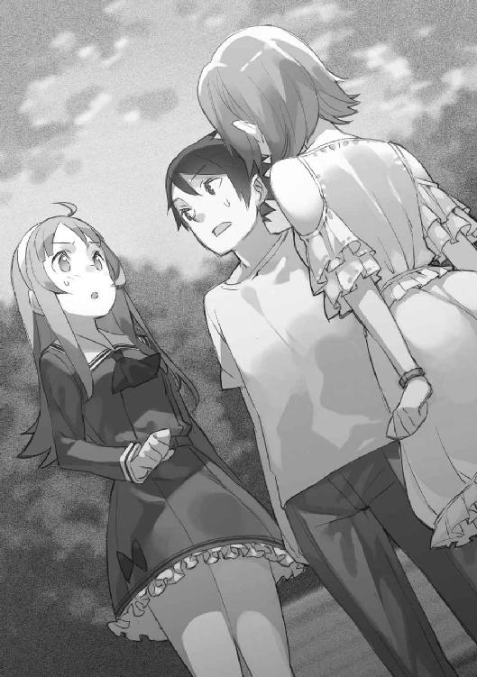

| エンド・リ・エンド２ 今回のイベントは、すべてキミのせい。 (角川スニーカー文庫) | |
| 耳目口 司 | |
| (2014) | |

エンド・リ・エンド２
今回のイベントは、すべてキミのせい。
耳目口 司

角川スニーカー文庫
本作品の全部または一部を無断で複製、転載、配信、送信したり、ホームページ上に転載することを禁止します。また、本作品の内容を無断で改変、改ざん等を行うことも禁止します。
本作品購入時にご承諾いただいた規約により、有償・無償にかかわらず本作品を第三者に譲渡することはできません。
本作品を示すサムネイルなどのイメージ画像は、再ダウンロード時に予告なく変更される場合があります。
本作品は縦書きでレイアウトされています。
また、ご覧になるリーディングシステムにより、表示の差が認められることがあります。
長い悪夢を見ていた。胸クソの悪くなるような悪夢だった。
ただ何もない、緩慢な死を待つだけの灰色の人生を送っていた俺は、その夢の中で悪魔と出会った。悪魔は俺に言った。
「『主人公』になって、人生をやり直してみたくないデスか？」
そんな誘い文句に乗って、俺は悪魔と取引をして、第二の人生を送ることになった。
転生した先は『ギャルゲー』の世界。──俗に言う、学生生活を送りながら女の子と仲良くなり、そして恋に落ちるという、俺の理想そのものの世界だった。
しかし、青春を謳歌しようとしていた俺に、悪魔は後出しのゲームルールを提示する。
この世界の『メインヒロイン』を探し出さなければ、元の世界に戻されてしまう。それが、『悪魔のギャルゲー』の本当のルールだった。
俺は多くの美少女と出会い、その中の一人と恋に落ちた。だけど、彼女は『メインヒロイン』ではなく、悪魔によって作り出されたＮＰＣだったのだ。
だから俺はルール上、彼女に恋することが出来なくなった。彼女がどれだけ、俺のことを好きになってくれても、俺はそれに応えてあげることが出来なくなった。
これまでずっと傍にいてくれたのに。俺に生きる希望を与えてくれたというのに。
こんなにも近くにいるのに。こんなにも愛しいのに。
彼女の好意に応えてしまえば、俺の人生は灰色に戻り、ただ緩慢な死を待つという現実が襲うのだ。生きることが楽しいと知ってしまった今では、俺はそれに耐えられない。
笑えるだろう？ 本当に悪趣味な夢だ。夢でまでギャルゲーをやっているなんて、少しゲームのやり過ぎかもしれない。ライトノベルも、そういった萌え系のものばかり読んでいるから良くないんだ。ちょっと控えて、他の趣味でも作ろうかな。
スポーツなんてどうだろう。きっと楽しいだろうな。彼女とプレイした初めてのバスケは、本当に気持ち良かった。息が切れるまで走って、汗を流して、二人で。
......そうだ。俺はあの時に初めて、本当の意味で彼女に見惚れたんだ。
蓬田茅野。学校のアイドルで、『主人公』の幼なじみ。
あー、可愛いキャラだったなぁ。まったく、よく考えなくても、あんな子が現実にいるわけないじゃないか。誰か、茅野をメインヒロインにしたギャルゲーでも作ってくれないかな。予約して買って、絶対に最初に攻略してやるからさ。
ああ、嫌だ嫌だ。目が覚めたら、あの灰色の部屋が俺を待っている。あの監獄のような部屋で、俺はゲーム機に手を伸ばし、それを壁に投げつけるんだろう。とりあえず、しばらくギャルゲーだけはコリゴリだ。
ピピピ、という電子音が鳴り始める。もう夢の覚める時間だ。
悪夢だったけど、起きるのは嫌だなぁ。あれはあれで楽しかったし、俺には絶対に体験できないことだらけだったし。ロクでもない現実よりも良いじゃないか。
目を覚ましたくないな。この夢と現実の間に、永遠に漂っていたい。起きるのは嫌だ、嫌だ、嫌だ嫌だ嫌だ嫌だ嫌だ嫌だ嫌だ嫌だ嫌だ嫌だ嫌だ嫌だ──
「こら、侑！ いつまで寝てるの、休みの日だからって寝過ぎだよ！」
俺が目を開けて、ベッドからゆっくり起きると、その傍らにはスタイル抜群で、サラサラのロングヘアの、見覚えのある美少女が立っていた。
「──茅野、か？」
確認するように声をかけると、彼女はキョトンとした後にクスクス笑う。
「他の誰に見えるの？ ふふふ、ずいぶん寝起きが悪いんだね」
そう言って笑うのは、見間違えようも無く『悪魔のギャルゲー』の登場人物である蓬田茅野だった。
「......嫌な夢を見たんだ」
これはあの悪夢の続きなのだろうか。俺がギャルゲーの世界に転生して、浮かれていて、悪魔によって絶望に叩きつけられる、そんな夢。
「あー......。ちょっと分かるかも。そういう時って『もうちょっと良い夢を見てから起きたい』って思っちゃって、ついつい二度寝しちゃったりするよね」
茅野は苦笑して頷く。確かに、俺も経験のあることだ。ありふれた話だと思う。そんなありふれた話をする茅野は、俺にはどう見ても普通の人間だとしか思えなかった。
「......なぁ、ここは現実なのか？ それとも、ゲームの中なのか？」
唐突な俺の質問に対して、茅野は呆れたように肩を竦めて断言する。
「もう、侑まで若菜みたいなこと言わないでよ。現実に決まってるでしょ。朝ご飯、今日は用意してあげたから、一緒に食べよう」
それだけ言って、茅野は俺の部屋から出て行く。俺はその背中を見送って、再びベッドに倒れ込み、両手で顔を覆う。
聞いておいて、茅野にだけは言われたくなかったことに気付いてしまい、深く後悔した。茅野はそれでいいのかよ。本当にこれが現実なら、俺とお前は付き合えないんだぞ。
「──俺の現実って、どれなんだよ」
あの悪魔には、きっと聞こえているはずなのに、俺の独り言に答えてはくれなかった。
黙々と朝食をとった後、俺は誰にも何も言わずに、一人で家を出た。
本当は茅野と色々話したかった。だけど、茅野の顔を見た瞬間に、言葉が喉に詰まって、それ以上声に出せなかった。だから俺は、家から逃げ出してしまった。
何のアテもなく、俺はフラフラと歩き出す。しばらくして、駅が見えてきた。どうやら無意識に学校へと向かっていたらしい。
そういえば、今まで気付かなかったけど、俺は自宅周辺の道をここ以外ほとんど知らない。昨晩、茅野を家まで送ろうとした時に、初めて他の道を歩いたほどだ。
例えば、デタラメに歩いたら、俺はどこまで行けるのだろう。そう思って、俺はわざといつもと違う道を歩いてみる。
どれくらいの間、俺は歩いたのだろう。気がつくと、なぜかいつもの駅前に辿り着いていた。むしろ離れるようにして歩いていたはずなのに。
電車はどうだろうか。思えば、津田原より遠くへ行ったことがない。俺は値段の一番高い切符を買って、電車に乗り込む。そのまましばらく乗り、津田原を通り過ぎた辺りで、俺は強烈な睡魔に襲われた。それに抗えずに、俺は眠りに落ちていく。
ピピピ、という電子音が鳴り始める。
「こら、侑！ いつまで寝てるの、休みの日だからって寝過ぎだよ！」
俺が目を開けて、ベッドからゆっくり起きると、その傍らには茅野が立っていた。思わず、時計に表示されていた日付を確認する。なぜか日付は変わっていなかった。
「だから、今日は休みだって。まったくもう、ずいぶん寝起きが悪いんだね」
「......嫌な夢を見たんだ」
「あー......。ちょっと分かるかも。そういう時って『もうちょっと良い夢を見てから起きたい』って思っちゃって、ついつい二度寝しちゃったりするよね」
二度寝、か。その感覚に少し似ているかもしれない。夢の中の夢の中の夢、それは一体何なのだろうか。──それこそまさに、悪夢と呼ぶべきものなのかもしれない。
「......なぁ、ここは現実なのか？ それとも、ゲームの中なのか？」
唐突な俺の質問に対して、茅野は呆れたように肩を竦めて断言する。
「もう、侑まで若菜みたいなこと言わないでよ。現実に決まってるでしょ。朝ご飯、今日は用意してあげたから、一緒に食べよう」
それだけ言って、茅野は俺の部屋から出て行く。俺はその背中を見送って、再びベッドに倒れ込み、両手で顔を覆う。
「──これが現実なんだな」
耳の奥で「ヒャハハッ！」という、不快な笑い声が聞こえたような気がした。
不幸中の幸い、とでも言うべきなんだろうか。俺は今朝の一連の異常な出来事を、比較的冷静に受け止めることができた。以前に似たようなことが起きる内容のライトノベルを読んでいたことが、ある意味で『想定内の出来事』にしてくれたのかもしれない。
一階に降りると、既に妹の美篶が、ダイニングで茅野の作った朝食を食べ始めていた。
「......おはよう」
「......おう」
朝の挨拶もそこそこに、俺は見覚えのある朝食をとる。朝食の内容は、ループする前とまったく同じだった。
俺は一体、何をしているのだろう。茅野の好意にただ甘えて、与えられる食事を何も言わずに食べて、彼女に対して何も報いることはない。
幼なじみであるという免罪符だけで、俺はここまで傲慢になっていいのだろうか。そう思うと、嫌悪感で胸が詰まりそうになる。
「......茅野ちゃんも、休みの日までウチに来てくれなくて大丈夫だよ。週末くらい、家でのんびりしたいだろうし」
そう言って、美篶は遠回しに茅野に対して先制攻撃を仕掛ける。
「前にも言ったけど、両親とも仕事人間だからね。休日に家にいても、あんまり話すこともなくて暇なんだよ」
「......ふーん」
──そうだ、そういえばこんな話を二人はしていた。なんだか同じ食事を二回とっているような気分になって、思ったように食が進まない。
「その、両親とは、あんまり仲良くないのか？」
どうにかして、俺は絞り出すように茅野に質問する。まったく同じ流れを再現するのは避けたかった。それと同時に、つい込み入った質問をしてしまったことを後悔する。
「仲が悪いってほどでもないんだけど......。うーん、お互いにどう接したらいいのか分からないって感じなのかも」
「十分きっつい話だな」
「聞いた本人がそれ言っちゃう？ まぁ、そんなだから、私も侑の家にいた方が気楽なんだよね」
「わ、悪い......。そういうこと、なんだな」
軽いノリで話す茅野だが、俺には歪な関係だとしか思えない。まるで「幼なじみキャラだから、主人公と一緒にいるのが当たり前」であることを義務づけられているような、そんな無理を押しつけられているようにも感じられる。
「......どうしたの、侑。さっきからずっと変だけど」
そう言って、茅野は俺の顔を覗き込んでくる。
その表情からは、告白しかけたというのに無視されたという、昨晩の出来事がまるで無かったかのような印象を受ける。気にしていないフリをしているのだろうか。
違う、そうじゃない。彼女にはそういうゲーム的なルールが設けられているのだ。
可愛い。天使だ。流石は学校のアイドル。流石はそういう、キャラ──
「きょ、今日は体調悪くてさ」
「えっ、大丈夫？ 顔色も悪いし、寝てた方が良いんじゃない？」
「悪い、そうさせてもらうよ。ちょっと部屋で横になってくるわ」
心配そうな表情で見つめる茅野と美篶を置いて、俺は足早に二階へと上がり、自分の部屋に閉じこもって鍵を閉めた。
そのまま俺は、膝から崩れ落ちる。自然と嗚咽が漏れた。
これは想像していた以上に、キツい。
たとえどれほど相手を好きになろうと、相手から好かれようと、『ヒロイン』以外と付き合うことができないのが『悪魔のギャルゲー』だ。
いっそ殺し合いにでもなれば、どれだけ気楽だろう。死んだ人間は俺に語りかけてくることもないし、俺も死んだ人間相手なら諦めがつく。
なのに、このゲームには進行上の「脱落」が存在しない。彼女たちがＮＰＣだと分かっても、それを知っているのは俺だけだ。彼女たちは、そんなことはお構いなしに『主人公』である俺と接点を持とうとするのだろう。
特に、よりにもよって最初に判明したＮＰＣが茅野であることは、最悪に悪趣味であり、圧倒的に俺にとって不利な状況だ。
どうすればいい。どうするべきだ。そして、どうしてはいけないのか。
俺は立ち上がり、フラフラと勉強机へと向かう。椅子に深く腰掛け、パソコンを立ち上げて、テキストエディタを起動する。それに、俺の中で考えられる限りの、このゲームの特性と攻略方法を羅列していった。
その探求の期間は、一週間を優に超えた。
これまで出会った女の子たちの特徴、推定されるキャラ設定。それが合っていた場合の対処法。悪魔の言動。ルールの再確認と、そこから導き出せそうな『欠陥』。
『ヒロイン』とは何か。そして、『裏切り者』とは何か。
幸いにも、丁度その期間は中間テストがあって、部活動は全面的に禁止となっていた。
勉強会をしよう、という誘いもあったが、俺はあえて無視して部屋に引き籠もり、最低限のテスト勉強と『悪魔のギャルゲー』の攻略法を考えることを選んだ。
１日は24時間ある。だが、実際は食事や睡眠などを含めると、普通に暮らしていれば１日はわずか16時間程度しかない。時間がもったいなかったので、俺は１日を21時間くらいに無理矢理引き延ばした。
最優先にすべきは、やはり『ヒロイン』の早期の特定だろう。『ミッション』で分かるキャラシートの情報に頼るのも良いが、あの悪魔の出す情報から、俺がこのゲームを攻略できるとは到底思えない。それぐらいに、あいつは性悪な畜生だ。
受け身の精神では負ける、そう思った。
ルール設定上では『ヒロインを見つけ出さないと敗北する』ことになっているけど、多分その前に、俺の心が折れる。
幸いにも、──幸いにも、茅野は好感度がもう下がらない。そういう別の『ルール』が用意されていることに、あの晩の段階で俺は気付くことができた。恐らく、この『裏ルール』と言うべきものは他の女の子にも用意されているのだろう。それはある意味で現状維持に一役買ってくれているが、俺を苦しめるのに、これ以上ないほど効果的だった。
そして、きっと茅野以外の人物には他のルールが設定されているはずだ。だからこそ、確信を持って言える。次に誰かから告白されるようなことになれば、ヒロインの特定が済んでいない限り、俺は修羅場を迎えることになる。それだけは何としても避けたい。
能動的な攻略について、少し考えてみる。俺が自ら、ヒロインだと思われる人物を特定して、好感度を集中して上げてキャラシートを手に入れる。これが最善だ。
だが──正直言って、ヒロインの特定は憶測の域をどうしても超えられない。ある程度のメタ読みに走ってもいいが、最初に判明したＮＰＣが茅野だった時点で、それに頼るのは危険だとしか言いようがない。
ギャルゲーヒロインにおいて、鉄板なのはツンデレや妹だろう。だが、そんなテンプレ展開をあの悪魔が用意するだろうか。むしろ、この二人が『裏切り者』である線すら残っている。はたしてそれが何を意味するか、俺にも予測がつかない。
それなりに蔵書の多い本棚から、参考になりそうな本を引っ張り出して再読してみる。学園物のライトノベルばかりだったので、役に立ったとは言いづらい。それらは『お約束』の塊のようにも見えて、逆に不気味に感じてしまい、途中から読み進めることができなくなってきた。
先輩から借りた、分厚い思想書のようなものも読んだ。文字が小さく、それでいて文字が紙面をビッシリと埋めているものだから、ラノベ読み程度の俺には読み進めるだけで一苦労だった。正直に言って、門外漢な俺には難しい内容だったので、どうしても分からない要点を纏めたノートを自作した。
当初は無理だと思っていた、プログラミングについても少し勉強してみることにした。俺の目的にはあまり関係ないだろうと漠然と思っていた。それでも、藁にもすがる気持ちで、ネットのプログラミング講座に従って、俺は人生で初めてコードを打った。
すると、デスクトップ上に黒い画面が出てきて、そこに文字が表示された。
『Hello world!』
俺は奇声をあげながら、勉強机に置いてあった教科書とノートを手に取り、パソコンに向かって投げつけて泣いた。
早朝。俺は卵焼き器にサラダ油を入れて、しばらく熱する。
既に溶いていた卵の一部を、そこに流し込んだ。ジュワッという卵が一気に焼ける音に多少怯みながら、俺は慎重に焼いた卵を手前側に丸めていく。
汚い。焦げ目も多く、形が歪だ。
いや、どうせ多重構造になるんだし、中心部はこれでいい。俺は残っていた溶き卵を、卵焼き器に投入した。
物凄い勢いで固まっていく卵。おかしい、なぜフワフワにならないんだ。
俺は卵焼き器を操作し、どうにか卵を丸めることに成功した。焼き上がった茶色のそれを、まな板の上に載せる。
卵焼き、完成。早速試食してみる。
卵の味以外、まったく何もしなかった。はっきり言って不味い。
「......なんか焦げ臭い」
そう言いながら二階から、背丈の小さいロングヘアの美少女が眠たそうに降りてくる。無口な俺の妹──という設定の女の子、御代田美篶だ。
バスケ部の朝練がないこともあり、朝から朝食の準備をしていた俺と違って、美篶はまだパジャマ姿のままである。
美篶はキッチンに立つ俺に近寄り、その手元にあった卵焼きを見る。
「何これ」
「卵焼きだよ」
美篶が俺の手元と俺の表情を交互に見て、小首を傾げる。
「......それを言うなら、スクランブルエッグ？」
「馬鹿言え。世界に誇る日本料理のだし巻き卵だ」
「でも形が悪い」
グサリ。......そうかもね、ちょっと形は歪かもね。
美篶は卵焼きを一口分つまみ上げると、口に頰張る。その後、咀嚼もせずにコップに水を注ぎ、水と共に一気飲みして呟く。
「......しかも不味い」
妹の情け容赦の無い感想に、朝から死にたくなった。
少し蒸し暑さを感じるようになった、天気の悪い通学路。鳳仙花高校に向かって、俺は美少女二人と一緒に歩く。
「えっ。侑が料理なんて始めたの？」
不思議そうな表情で美篶に聞き返すのは、俺の幼なじみ──という設定の美少女、蓬田茅野だ。俺の家はご都合主義的な展開で、両親が海外に長期間出張をしているので、今は彼女に家事の一切を任せているのである。
美人で、スタイルも良くて、家事万能という才色兼備の幼なじみが俺にはいる。
だというのに、だ。俺はやらなくてもいい料理に挑戦していた。
「そう。おかげで大迷惑」
朝から焦げた卵の塊を口にしてご機嫌斜めの様子の美篶は、茅野に向かって愚痴を吐き続けていた。「あんなに不味い卵焼き、初めて食べた」
「......初めて作った料理なんだし、失敗くらい別にいいじゃねぇか」
俺が反論気味に呟くと、茅野は苦笑いをする。
「最初に卵焼き、っていうのはちょっと無理があったかもね」
「そうなのか？」
俺が尋ねると、茅野は頷く。
「卵料理って、意外と難しいんだよ。火加減とか、味付けとか」
「確かに、あっという間に焦げたな......。味付けもよく分からなかったし」
「卵料理は、時間との勝負だからね」
そう言って、茅野は得意げに胸を張る。それもそうだろう、茅野の作る卵焼きは絶品だ。きっと彼女の得意料理に違いない。
「それで今日は、お弁当いらないって言ったんだね。ビックリしちゃったよ」
「......まぁな」
いつもなら俺は茅野に手作りのお弁当を作ってもらい、学校の昼食でそれを食べている。しかし、これからは俺の分の弁当は必要ないと、昨日のうちに断りの電話を入れていた。
断った時、茅野は「分かったよ」と簡潔に了承したけど、その声は電話越しにも分かるくらいに寂しそうだった。
「初めてで上手く出来るはずない。兄貴って本当に馬鹿」
「......うっせ。色々あるんだよ」
美篶の言うとおり、その後も挑戦した料理はことごとく失敗して、結局俺はマトモな弁当を用意することが出来なかった。俺の弁当箱に入っているのは、ただ白米のみである。
さすがに主人公補正をもってしても、何の情報も無しに初めてで上手くいくはずもないか......。でも、少しやり方を教われば、上手くやれる自信も俺にはあった。
なぜなら、俺はこの世界の『主人公』なのである。出来ないことがあるわけがない。
とはいえ、今日の昼食は自分で作った白米弁当と決まっていることが切ない。何が悲しくて、自分から美味くもない飯を食わなければいけないのだろう。
そんなことを考えていると、茅野がゴソゴソと鞄の中から嬉しそうに何かを取り出す。それは、いつも昼食の際に俺がいただいている、見慣れた弁当箱だった。
「大丈夫、ちゃんと侑の分のお弁当も用意してきたから」
「......えっ、何でだ？」
驚く俺を見て、クスクスと茅野は笑う。
「どうせそんなことだろうと思ったんだよ。だって私は、侑の幼なじみだからね」
そう言って、茅野はウインクする。その言葉に、俺は汗を流して硬直してしまう。茅野はそんな俺の様子に気付いていないのだろう。そのままご機嫌に話を続ける。
「だから、良かったら今日も私のお弁当を──」
「いや、いいよ。出来ないなりに作ったやつがあるからさ」
間髪容れずに俺が提案を断ると、今度は茅野が硬直する。隣の美篶も珍しいことに、無表情ながら目を大きく見開いていた。
「えっ......。そ、そう？ ......そっか」
目に見えてテンションを落とす茅野を見ていられず、俺はわざとおどけてみせる。
「おう！ 今日から俺の新しい趣味は料理だ！」
「迷惑だからやめて」
「せめて応援してくれない!? お兄ちゃん悲しいよ！」
妹の辛辣な言葉に、俺は大仰なツッコミを入れる。その様子を見ながら、茅野は振りきるように笑顔で俺に言う。
「ふふふ。じゃあ、私が美篶ちゃんの代わりに応援してあげるよ。分からないことがあったら聞いてね、料理は得意なんだから」
俺もそれに対して、笑顔で答える。
「ああ。......知ってるよ」
俺は天を仰ぐ。──鈍感な主人公のセリフというのは、大体これで合っているはずだ。
「あははっ！ それで今日の侑くんのお弁当は、そんなに筋肉なんだねっ！」
「白米弁当を筋肉と表現する奴なんて初めて見たよ」
昼休み。俺がいつも通り『少し不思議研究会』の部室で弁当を開くのを見て笑うのは、ＳＦ研の会長である犀南若菜だ。
彼女は笑いながら、大好物のアメリカンドッグを頰張る。
「いやー、男らしいなと思ってさ。茅野の特製お弁当を貰ってるくせに罪ですわー。せめてお肉入れようよ、お肉！」
「ソーセージ......。そうか、その手があったか！ あれなら焼くだけだ！」
「気付くの遅っ！」
まさか馬鹿で電波の犀南に、俺がツッコミを入れられるとは......。それほどに、初めての料理で頭が回っていなかったのだろう。色んな動揺があって、俺の思考はほぼ停止状態にあったと言ってもいいくらいだし。
「それにしても、なんでいきなり料理なんて始めたわけ？ チノにいつもお弁当を作ってもらってるんでしょ。必要ないじゃない」
ごもっともな質問をするのは、金髪ツインテールで外国人ハーフの美少女、常磐木紗良だ。彼女はランチボックスに詰め込んだサンドイッチを頰張っている。
「いや、常磐木も前に言ってただろ。何でも茅野に任せるのは悪いって」
「それは、そうだけど......」
常磐木は自分で発言しておきながら、所在なさそうに視線を泳がせる。
「だから、少しでも自立しようと思ってさ。それに、料理が出来るようになったら、将来的にも便利だろ？ これからは料理男子の時代だ！」
そう言いながら、俺はチラリと茅野の様子を盗み見る。茅野は先ほどから会話には参加せず、無言で弁当を食べていた。
......多分、俺の行動はこれで合っている。俺がこうして茅野への依存を減らすことで、彼女の負担は軽減される。そしてその分、俺は他の女の子たちと交流する機会が増えるようになるはずだ。
「はぁ......。まぁ、あんたが趣味を増やそうが、あたしには関係ないけどね」
「常磐木はいつもサンドイッチだよな、飽きないのか？」
「別に。中身はハムとかターキーとか違うし。あんたたち日本人だって、いつも和食を食べてるんでしょ？ それと同じよ」
「それは偏見だろ......。和食って、むしろ普段はそんなに食べないぞ」
「えっ？ 噓でしょ？」
常磐木が目を丸くして驚いていると、その背後から声がかかる。
「御代田くんの言うとおりよ。日本人が和食を食べる習慣は、ここしばらく減少傾向にあるわね。欧米の食文化の流入も勢いがあったし、今では世界でも希に見る多国籍料理の国と言ってもいいんじゃないかしら」
普段は俺と茅野と常磐木と犀南で昼食をとっていた部室に、最近は新たに一人の美少女が訪れるようになった。
ＳＦ研の新入部員で、黒髪ロングで学校一の天才、県零先輩である。
「へー、そうなのね。初めて知ったわ」
「毎日色んな国の料理を食べないと飽きるなんて、日本人くらいよね」
そう意味ありげに言って、県先輩は目を細めてクスクスと笑う。
ちなみに、常磐木も俺たちと同じく下級生なのだが、常磐木は県先輩に対してタメ口で話している。先輩後輩とか、よく分かっていないのだろうか。
県先輩は特に気にしているようでもないので、きっとどうでもいいのだろう。
「そう考えると、チノのお弁当って凝ってるわよね。ねぇ、あたしにもちょっと分けてもらえる？」
「あ、私も久しぶりに茅野のお弁当食べたーい！」
そう言って、常磐木と犀南が茅野の傍に寄る。茅野は一瞬俺を見たが、気付かなかったように振る舞った。
「......別にいいよ。今日は多く作り過ぎちゃったし」
「本当!? やったー！」
茅野が渡した弁当を、常磐木と犀南はキャーキャー言いながら食べる。その様子を見て茅野は苦笑していたが、その苦笑はどの感情からくるものなのだろう。
そんな様子を眺めていると、おもむろに県先輩に声をかけられる。
「ところで御代田くん。別にあなたが特殊な性癖持ちで、周囲が哀れむようなみすぼらしい昼食を取ろうと、私はかまわないのだけど──」
「マゾじゃないですよ！ あんたいきなり何言ってんだ！」
「せっかくだし、私のおかずを一つ分けてあげましょう」
そう言って県先輩は席を立ち、俺の白米弁当の上に美味しそうな唐揚げを置く。あまりに無造作な動作だったため、周囲の女子たちは呆けた様子で固まった。
「い、いいんですか？」
「最近の冷凍食品は美味しいわよ。あなたも無理に凝ったものを作る前に、文明の利器を活用することを覚えた方がいいわ」
なんと、これが冷凍食品なのか。確かに、ちゃんと作った料理のように美味しそうだ。そういえば、冷凍食品にコロッケとか色々あったな。別にあれでいいじゃないか。
そう考えると、弁当を用意するのはけっこう簡単な気がしてきた。ただ一つ残念なことがあるとすれば、いただいたおかずは、県先輩の手作りというわけではないということだけである。お情けの冷凍唐揚げ......。
それでも一口で頰張る。──美味い！ 白米弁当が進む！
それを見ていた常磐木が、黙ってサンドイッチの一つを俺に差し出してきた。
「......なんだ、くれるのか？」
「あ、あんたのランチが寂しそうだったから、特別に分けてあげるのよ。別に深い意味なんてないんだからね！」
頰を赤く染めた常磐木から、俺はサンドイッチを一つ分けてもらう。一口頰張ると、何とも言えない風味豊かな味わいがあった。喫茶店などで食べたら値が張りそうな、高級感すら感じさせる。
「おお、美味いな」
「でしょ？ ちゃんと使用人に作らせてるんだから」
得意げに常磐木は無い胸を張るが、使用人ってどういうことだ......？
そういえば、特に聞いたことがないけど、常磐木ってお嬢様設定があったりするのだろうか。変な時期に来た転校生で外国人とのハーフなんだし、それぐらいに設定を盛ってそうではある。
その様子を見ながら、犀南がニタニタ笑って俺に近寄ってくる。
「ほほー、おかずの交換っていうのは面白いね。ではでは、私の分も分けて──」
「お前はアメリカンドッグだけだろうが」
「......しまったー！ もう全部食べちゃった！」
やはり犀南は馬鹿だった。犀南はそのままヨロヨロと、茅野のもとに倒れ込む。
「しょうがないよね......。侑くんにおかずをあげる権利は、茅野に譲ってあげようっ！」
「......えっ、私!?」
上の空で、話に加わってなかった茅野は、犀南の突然の提案に仰天する。
「そう！ だから茅野は侑くんにお弁当のおかずを二つあげること！ これは会長命令である！」
勝手に話を進める犀南に、茅野はドギマギしながら反論する。
「私、ＳＦ研の部員じゃないんだけど......」
「まぁまぁ、細かいことは気にしない。茅野は私の親友でしょ」
ニヒヒと笑う犀南の言葉を受けて、茅野は静かに頷くと、俺の席に近づいてくる。
「じゃあ、若菜の分もおかずあげるね。......これくらい、いいでしょ？」
不安げに尋ねる茅野。つい先日まで、こんな表情を俺に見せたことはなかった。彼女はいつも明るくて、太陽のように笑っていて、ちょっとしたことで頰を赤く染めたり、周りで起こるドタバタに苦笑したりと、表情のよく変わる明るい女の子だった。
そんな良い娘の有り様を、俺は変えようとしてしまっている。
その事実が苦しくて、罪悪感に胸が押し潰されそうになって、俺は言葉に詰まる。
「......卵焼きと、ハンバーグが欲しいな」
俺がそう言うと、茅野は表情を明るくして、リクエスト通りのものを俺に差し出してくれた。俺は茅野が作った特製の卵焼きを頰張る。
「美味いよ、滅茶苦茶美味い」
「ふふふ、そうでしょ？ でも、侑には作り方は教えてあげないからね。これだけはとっておきなんだから」
「そっか。そりゃ残念だ」
茅野は俺が夢中でおかずを食べる様子を見ながらはにかむ。
そうか。この卵焼きが作りたかったんだけど、無理なのか。──本当に、残念だ。
そして放課後、ＳＦ研としての活動が部室で始まる。
「それでは、これより部活動を始めます！ 中間テストも終わったことだし、久しぶりにゲーム制作についてじっくり話し合おうっ！」
「おー」
犀南の威勢の良い音頭に合わせて、俺と常磐木だけが情けの合いの手を入れる。
現在のＳＦ研の主な活動は、パソコンソフト『ＲＰＧツクルー』を使用したフリーのＲＰＧ制作だ。それのどこがＳＦ研の活動なのか、と聞かれると俺にも説明がし辛い。
会長である犀南による独断と暴走に付き合わされることが、実際のところのＳＦ研の活動実態である。
部室に集まっているのは五人。会長でシナリオ担当の犀南、サウンド担当の常磐木、その他イベント全てを管理している俺。
そして、まだ役職の決まっていない新入部員の二人、県先輩と一年生の八代巴だ。
県先輩とはちょっとした縁があって既に面識もあるのだが、実のところ、後輩の八代とは未だにほとんど会話したこともない。だが、彼女と出会った時に、俺は彼女からメタ情報として名前タグが出現したことをハッキリと覚えている。
《大人しいゲーマーな後輩 八代巴》
これが出現したということは、彼女も攻略可能キャラの一人であるはずなのだ。しかし、八代がＳＦ研に入部するまで、俺は彼女の存在を知りもしなかった。
だというのに、先日のミッションで部員として集まったということは、彼女に出会うことは確定イベント、いわゆる『ポカヨケ』が働いたということなのだろう。
そこまでして俺と接点を持たせるということは、彼女は何かしらのキーパーソンなのかもしれない。今となっては、発言の全てに注意を向けるべき相手だ。
「とりあえず、言われた通りに、あなたたちの作ったゲームの体験版をやってみたわ」
会議が始まって早々、県先輩が切りだす。
「......実際どうなの、あたしたちの作った『ブレトワルダ』って。つまらないって話は、もうけっこう聞いてるけど」
常磐木の言うとおり、体験版『ブレトワルダ』については酷評しか聞いていない。いわゆるクソゲーを県先輩にやらせるのもどうかと思うけど、俺たちの活動について理解してもらうには、これが一番手っ取り早いのも確かなのである。
『ブレトワルダ』に致命的な欠点があるなら、天才と評される県先輩に解決方法を考えてもらうのがベストだと思ったのだが──
「ごめんなさい。ぶっちゃけると、何がつまらないのかが分からなかったわ」
「えっ、県先輩がですか？」
意外な返答に、俺も少し驚く。
「そもそも、勘違いしないでほしいのだけど。私は別にゲームの専門家ではないし、特別な知識を持っているわけではないの。ゲームがあって、ただそれをプレイして、クリアしただけ。何が面白いか、つまらないかなんて興味はないわ」
「でも、何回かプレイしてくれたんですよね。もっとこうしたら面白くなるとか、そういうアイデアはないかなーと......」
「最適解を選び続ければ、クリアは出来るでしょ。よく知らないけど、ゲームってそういうものじゃないのかしら」
......ああ、なるほど。確かに天才設定といっても、あくまで勉強方面に特化しているのであって、そういう点では一般人と変わらないのか。
むしろ県先輩の場合、その『最適解』が簡単に分かってしまうタイプの人だから、ゲームにおける『面白さ』という部分には無頓着なのかもしれない。
しかし、最適解を選び続ければクリアは出来る、か。確かにそれがゲームだ。たとえ、この『悪魔のギャルゲー』だって、その法則そのものには逸脱しないはずだろう。
「じゃあ、そんなにつまらないわけじゃないんだ！ 良かったー......」
「強いて言うなら、シナリオは絶望的に退屈だったわ」
「私だけ酷いこと言われてる気がするっ！」
目に見えて落ち込む犀南を無視しつつ、俺は先ほどからまったく発言しない人物に注目していた。もう一人の新入部員である八代だ。
八代は先ほどから部室の隅で、口を開こうとしては閉じを繰り返していた。県先輩を中心として進んでいる会議に割り込めないのだろう、所在なさそうにモジモジとしている。
よし。ここは一つ、俺から助け船を出してみるか。
「なぁ、八代もけっこう体験版をやってくれたんだろ？」
「えっ......。は、はいぃ！ やりました、その、体験版！」
突然話しかけられて驚いたのだろう、八代は目を白黒させながら直立する。
「何か意見とかないか？ もっと面白くするために、こうした方がいいとかさ」
「お、そういえば八代ちゃんは何も言ってないねっ！ 何かない？ シナリオ以外で！」
俺と犀南に尋ねられて、八代は気まずそうに口を濁す。
「えっと、先輩方が作ったものなのに、後から来た私が色々言うのも、その......」
確かに先輩に向かってそれは言いづらいだろうなぁと思っていると、常磐木がその会話に割り込んでくる。
「その割に、あたしが感想を聞いたら『面白くない』って思いっきり言ったわよね」
「ひっ、その、あの時はすみません！」
「嚙みつくなって、常磐木。話が進まないだろ」
「ふん......。別にいいけど、意見があるならハッキリ言ってよね。文句でも何でもいいから、もっとズバズバ言いなさいよ」
常磐木の剣幕に圧されて、八代は先ほどより更に縮こまって席につく。
この二人、性格的に相性はあんまり良くなさそうだな。常磐木にその気はないだろうけど、言い方がキツい面もあるし。一方の八代は奥手すぎる。人数が増えるのも考え物だ。
しかし、八代にはどんどん発言をしてもらわないと、部活的にも俺のギャルゲー攻略にも困る。あらゆる意味で、八代の協力は必要不可欠に思えた。
「八代、本当に気にしないでくれ。見ての通り、俺たちって結局、ゲームについてそれほど詳しくないんだよ。素人なりに頑張って作ってアレだったんだ。だから、今はどんな意見でも貴重なんだ。まずはどうしたら良いと思う？」
俺は八代に面と向かって座り、落ち着けるように語りかける。
周囲の女子たちは、その様子を黙って見ていた。犀南は珍しく静かに、常磐木はなぜか先ほどまでよりも腹立たしそうに、県先輩はニヤニヤと目を細めて笑いながら。
少しの沈黙の後、八代がようやく口を開く。
「......その、ゲーム自体は単純なＲＰＧですから、シナリオを大きく変える必要はないと思います」
「県先輩は退屈だったって言ってたけど、このまま進めて大丈夫だと思うか？」
「犀南先輩のシナリオは、次の目的の提示もしっかりしてますから、一本道のＲＰＧだったら十分だと思います。退屈に思えてしまうのは、やっぱり『シナリオを読む』以外の遊びの要素が、まったくないからだと思うんです」
その八代の言葉に、県先輩が反応する。
「ふぅん......。面白いわね、続けてちょうだい」
一度話し出したら止まらないのか、八代は次々と意見を述べていく。
「ＲＰＧって、極論を言うとシナリオを読み進めて、クリアを目指すだけのゲームですよね。だからシナリオはもちろん重要なんですけど、それ以外にも何らかの要素を加えていかないと、飽きて当然だと思います」
なるほど、今さらだけど確かにその通りだ。この『ギャルゲー』も、途中からラッキースケベやミッションといった概念が追加されていった。それがなければ、俺は単に日常を謳歌するだけで満足していただろう。あの悪魔が、そんなことを許すはずもない。
俺がそんなことを考えている間に、犀南が会話に混ざってくる。
「それって、ダンジョンの中にあったりするパズル要素とか？」
「それも一つの手ですよね。あとはアイテムの調合とか、新しい要素を増やしたり。物語の本筋とは関係ないサブイベントを作ったりするとか......」
「そういえば、ＮＰＣとか配置してたのに、最後の方はそれどころじゃなくなって、全部適当になっちゃったよねー」
八代の話に、犀南もうんうんと頷く。常磐木も先ほどとは態度を改めて、八代の話に真剣に耳を傾けていた。
「戦闘もデフォルト仕様ですから、ちょっとレベルを上げたら簡単にボスも倒せてしまいますし、戦略性がまったくありませんでした。他にやりこむような要素もないから、あっさり体験版も終わってしまいましたし──」
その話は分かりやすい理由があったので、俺が八代の話を途中で遮る。
「あー、それなんだけどさ。今回はデフォルトで作るしかなかったんだよ」
「あら、そうなの？ それは時間の問題？」
県先輩が尋ねてきたので、俺は苦笑いしながら返す。
「実は、俺たちの中にプログラムを組める人が誰もいなくて......。だから、何か特殊なことをしようとしても、何も出来なかったんですよ」
そう、いくらツクルーが、素人でもゲームが作れる便利なソフトであっても、プログラムを組むことが出来なければ最低限のことしかできない。最低限の要素だけでゲームを作ることは可能だが、面白くしようと思うなら、根本的に画期的な発想が必要だ。
しかし、俺たちの作っているゲームはあくまで王道のＲＰＧである。そうなると、特殊な戦闘システムでも作らなければ飽きて当然だ。
喩えは非常に悪いけど、この『ギャルゲー』がテンプレ展開増し増しの王道展開であるはずなのに、一筋縄でいかないのも、全て悪意に満ちた「特殊ルール」が存在するからである。そういった意味も含めて、八代の指摘は極めて的確だった。
すると、しばらく聞き手に回っていた県先輩が髪を搔き上げて宣言する。
「なるほど、そういうことね。じゃあ、私はプログラムでも組もうかしら」
その頼りがいのある言葉に、犀南が目を輝かせる。
「えっ、県先輩って、プログラムできるんですか!?」
「高校生程度の英語ができれば、誰にだってできるわよ。むしろ何でできないの？」
「こ、ここにいる皆出来ないんですーっ！ 私だけじゃないもん！」
これには全員が目を逸らす。
いや、仰ることはごもっともかもしれませんが、それを勉強するだけの労力で一年間過ぎちゃいそうなんですよ、県先輩。ついでに言うなら、少しだけ勉強しましたけど、あの後にトイレで吐いたので俺には無理です。
そんな俺たちの表情を見て察したのか、県先輩はクスクスと笑う。
「最初はどうなるかと思ったけど、私でも役に立てそうで良かったわ。と言っても、何を作るのかが分からないと話にならないから、それを教えてもらわないと駄目だけどね」
そう言う県先輩に、常磐木が尋ねる。
「プログラムって、何でも出来るんじゃないの？」
「だからこそ、何を作るのか決めてもらわないと。さっきも言った通り、私はゲームについては専門外なの。曖昧な指示を出されても困るわ」
......そう、ついに来た。たとえプログラマーが入ってきたとして重要かつ不可欠なのは、新しく組み込む要素を的確に表した、仕様書の作成である。
プログラムはゲーム制作における設計から土台工事、建設に至るまでのあらゆる要素の根幹だ。たとえここで使われているソフトが『ＲＰＧツクルー』だろうと、プログラムを書き換えれば、シューティング要素だろうが、レーシング要素だろうが作ることが可能だ。
そういう意味で、素材さえあればプログラムに不可能はほとんどない。だからこそ、追加要素を正確に組み込むには「設計図」に当たる仕様書が必要なのである。
「それで、そういうのは誰に聞けばいいのかしら。やっぱり御代田くんなの？」
県先輩の質問に犀南が頷きかけるが、俺は全力で割り込む。
「お、俺はイベント作りと管理だけで手一杯ですよ！ しかも、マップ作りもシナリオの落とし込みも全部やってるんですって！」
慌てて遮る俺に、犀南は最高の笑顔でサムズアップする。
「大丈夫！ 侑くんのガッツは私が保証するよっ！」
「これ以上無く信頼できない保証だな、俺を殺す気か！」
「ちなみに、八代ちゃんの提案でサブイベントも追加しようと思いますっ！」
「殺す気だな、そうなんだな!! いいだろう、表に出ろ犀南！」
ファイティングポーズをとる俺と犀南を交互に見て、県先輩は嘆息する。
「とすると......。もう一人しか残ってないわね」
そう言って県先輩は、オドオドしながら俺と犀南の争いを見ていた八代の肩に、優しく手を乗せた。
「えっ......。えっ？」
何を伝えられたのか分からない八代は、困惑して首を傾げる。
「よろしくね、八代さん。思ったより、楽しい暇つぶしになりそうだわ」
ニヤリと笑う県先輩を見て、自分に与えられた役職の重要性にようやく気づいてしまった八代は、驚愕して叫ぶ。
「ええええぇぇぇぇぇ!! そんな、初めてなのに仕様書を作るのなんて無理ですよー！」
ガタガタと震える八代を、犀南と常磐木が両サイドから抱きしめる。
その光景は仲良しな友人同士にも見え、解釈によっては逃がさないように羽交い締めにしているようにも見えた。
「大丈夫大丈夫。誰だって、何かをするときは初めてからなんだしっ！」
「あたしたちよりゲームのこと、ずっと詳しいじゃない。頼りにしてるわよ、トモエ！」
「そ、そんなぁ......」
最初はツンツンしていた常磐木も、ようやく八代のゲーム知識を認めたらしい。八代は助けを乞うように俺の方を見るが、俺は無言で首を横に振った。やがて八代は抵抗することを諦めたのか、ガックリとその場に座り込む。
何はともあれ、一件落着。県先輩はプログラマーとして、八代は仕様書を作成するプランナーとしてＳＦ研に参加することになった。
ちなみに、サブイベントの追加は決定になったので、俺の仕事はまた増えた。くそう。
家に帰ると、香ばしい香りが玄関まで漂ってきた。どうやら、ＳＦ研でずいぶんとのんびりしてしまったらしい。
俺がリビングに入ると、茅野がキッチンから顔を覗かせる。
「あ、お帰り。ご飯そろそろ出来るよ」
「おう。美篶、夕飯にするぞ」
俺がテレビを見ている美篶に声をかけると、美篶は無言で席に着く。
茅野が料理を並べていくのを見て、ふと思う。
「......あれ？ いつもより、量が少なくないか？」
いつもおいしい夕食を振る舞ってくれる茅野だが、唯一欠点があるとすれば、彼女自身が大食いなせいで、夕食の量が非常に多いことだ。しかし、今日のメニューはかなりシンプルで、しかも量が適量である。これなら俺も美篶も食べやすい。
「ちょっとダイエットしようかと思ってね。量を少なめにしてみたんだ」
「茅野が？ ダイエットなんて、必要ない体型だと思うけどな」
「そ、そろそろプールの授業もあるしいいの！ それに、これぐらいなら二人も食べやすいでしょ？」
ダイエットは口実だろうな、と俺でも理解できた。たぶん、俺が茅野の作る食事を避けている理由が、量の問題なのかと思ったのだろう。
「......そうか。じゃあ、しばらくこのぐらいの量で頼めるか？ 作って貰っておいてなんだけど、最近は俺も美篶も胃袋がヤバい」
俺の真剣な言葉に、美篶も首をブンブンと縦に振る。俺たちの反応に、茅野が安心したようにホッと一息つく。
「や、やっぱりそうだったんだ。じゃあ、これからはこのぐらいにしておくね！」
それから俺たちは、今までと同じように団欒しながら、夕食を終える。帰り際に、茅野が俺に尋ねてきた。
「そうそう、明日のお弁当はどうする？ これからは侑に合わせて、量も少なめにしようと思うんだけど......」
どうやら茅野はどうしても、俺に手作りのお弁当を食べてもらいたいようだ。
《キャラ設定：『主人公』の世話を焼いていて、『主人公』と昔の記憶を共有している》
茅野のキャラ設定からして、それもそのはずだろう。彼女は俺の世話をしないと気が済まないのだ。そして、そのルールに逆らうことが出来ない。
なぜなら、茅野は俺と付き合うことが出来ない、ただのＮＰＣだから。
「いや、しばらくはいいよ。言っただろ、料理男子として修行中だって」
俺があくまで笑顔でそう答えると、茅野の表情が硬直する。少し間を置いて、茅野も笑顔で返す。
「......そっか。じゃあ、お弁当が必要だったらいつでも言ってね」
それだけ言って、茅野は逃げるように立ち去った。
そんな茅野の背中を俺は見送り、部屋へと戻る。これまで頼ってきた彼女への罪悪感が全身を蝕み、酷く身体と気持ちが重い。
この世界に隠されている『ヒロイン』を探す。とにかく、これが俺の最優先事項だ。
しかし、そのために事を荒立てたくはない。あくまで自然に、彼女たちの日常を守りながら、それを行うのである。
それが、茅野をこれ以上傷つけないためにも、俺がやらなければいけないことだから。
「ヒャハハッ！ 今のは主人公っぽいデスねー☆ 好きな人のために作っていたお弁当を否定されたことで、茅野が傷ついていることを無視している辺りが偽善っぽくて☆」
甲高く響く不快な笑い声に、俺がベッドに座って辺りを見回すと、勉強机の上に奴はいた。
この世にいるとは到底思えない、真っ青な毛並みを持つハムスターの姿をした悪魔。
俺をこの世界に転生させた存在、ルーニー・バグマンチである。
どう声をかけるべきか、一瞬迷った。言いたいことは山ほどあったのに、いざ現れると頭の中に溜まっていた恨み言、怒りの言葉、それらが吹き飛んでしまった。
「......久しぶりだな」
最終的に、俺の口から出たのは、その程度の簡単な挨拶だった。
「いやー、あのままケージにいると、キミに物理的に殺されかねなかったので。しばらくキミの目の届かない場所から監視していました」
「ぶっ殺せるのか？」
「無理デスー☆ この姿も仮のものデスし、拷問しようが何をしようがワタシという存在にキズ一つつけられません。アクマで悪魔デスから☆」
やはりそうなのかと、少し安堵した自分がいた。何かしらの手段で報復が出来るなら、俺はこの悪魔に対して迷わずに実行するだろう。だけど、こいつは腐っても創造主、そして腐ってるから悪魔なのだ。
「キミの頭も冷めてきた頃合いでしょうし、ようやくゲームが動き出したということで、こっちに戻ってきました。会いたかったでしょう？ 会いたかったデスよね☆」
「殺せるんだったら、それでも良かったけど。無理ならなんというか、どうでもいいや。......なんでだろう。色々言いたいことが、沢山あったはずなのにな」
「ヒャハハッ！ それはそれは、一つ大人の階段を上りましたね☆」
そう言って、何も出来ない俺をルーニーが嘲笑する。
「いやはや、ギャルゲーというのは素晴らしいデス。ほぼキャラクターとテキストのみという素材だけでも、人間を成長させるだけの可能性を持った娯楽。本と違うのは、ＢＧＭと立ち絵による適度な演出がそこに加えられることでしょうか」
「......ＲＰＧと違って、仕様も決まったようなものだしな」
「おっ、少しは話が通じるようになりましたね☆ まさにその通りデス。この世界は凄いでしょう？ ギャルゲーだというのにリアリティ、ラノベさながらの転生ライフそのもの、実に画期的なゲーム体験なのデスよ☆」
──そう、この世界はルーニーの作ったギャルゲーだ。普通の世界ではない。俺は別の世界からゲームに呼び出された、このギャルゲーの『主人公』なのである。
魅力的な女性達に囲まれて生活しているのも予定調和だ。重病人だったはずの俺が、こうして元気に歩き回れるのもゲームだからだ。
俺はそれを、第二の人生として楽しんでいた。好きな女の子が出来るまでは。
その女の子と、どう足搔いても結ばれないことが分かるまでは。
「そうそう、キミは『ヒロイン』と結ばれないと、元の世界に戻されてしまいマス。そういう意味で、茅野に依存している生活からの脱却というのは正解の一つデスよ。他のキャラの好感度が上がりやすくなりマスからね☆」
そう言われて、俺は携帯電話を取りだし、『好感度メーター』を確認する。確かに以前に比べて、茅野以外の女子の好感度が少し上がっている気がした。
だが、弁当を拒否しているというのに、茅野の好感度は高いままで、下がる気配がまったくない。
「......ルーニー。やっぱり聞きたいことが二つあった」
「どうぞどうぞ。見当はついていマスけど」
押し殺したような笑いをするルーニーを無視して、俺は淡々と尋ねる。
「茅野の『キャラシート』を後から見直したら、『隠し要素』っていう項目が解禁されてたんだ。あれはなんなんだ？」
「それに気付くとは目聡い、流石デス。と言っても、内容はそのままデス。全てのキャラには、一定の条件を満たすことで解禁される『隠し要素』が存在しマス」
「......一定の条件っていうのは何だよ」
「それはキャラによって違うので内緒デス☆ 特別に茅野の条件だけ教えると『主人公が茅野をＮＰＣだと確信した時』に解放されマース」
その言葉に、俺の身体は怒りで震える。茅野の隠し要素は『恋人フラグが成立すると、何があっても好感度が一定値以下にならない』だった。
つまり、このルールは──
「俺が何をやっても、茅野は俺のことが好きなままだって言うのかよ!!」
「健気で良い子デスよねー。こんな女の子、現実じゃ絶対にいませんよー」
「ふざけんな！ 俺は茅野のことを──」
「だ・か・ら、好きなままでいいんデスって。いつでも告白して良いんデスよ。もちろんゲームオーバーになりマスけど☆ エキサイトでしょう？ エキサイトですよね☆」
それは悪魔の囁きだった。俺を負けに引きずり込もうとする、悪魔の誘惑だった。
元の世界には戻りたくない。あそこは『灰色』だ。だったら、この世界で首を括る方がマシだ。
だというのに、俺はルーニーを否定しきることが出来なかった。それは、俺が抱いている茅野への好意も否定することになってしまうから。
「......ルールの変更は、もう無いんだよな」
「嫌デスねぇ、人聞きの悪い。ワタシは気分次第でルール追加をしたりしマスけど、既に決まっているルールについては厳守しマスよ☆ そこはご安心ください」
つまり、これは根本的にルールが変更されたのではない。あくまで、既存のルールの一つが新しく解禁されただけだということなのだろう。──詭弁だ、そんな理屈。
「じゃあ『裏切り者』についてもそうだって言うのか？」
茅野がＮＰＣであると判明し、俺が激昂してルーニーに襲いかかった時。
「登場人物の中に一人だけ『裏切り者』がいる」
詳細も言わずにそれだけ言い残して、ルーニーは煙のように姿を消した。
俺の質問に対し、ルーニーはケラケラと笑う。
「ヒャハハッ！ その通りデス！ このゲームの開始直後から『裏切り者』は存在していました」
それは予想外な返答だった。てっきり、後になってルーニーが勝手に作った新ルールだと思っていたというのに。
「最初からいたっていうのかよ。それも他の世界から転生してきた、別の人間なのか？ それとも『ヒロイン』と同じ性質を持ってるとか──」
「ただーし！ 『裏切り者』の正体と性質と目的については、主人公には開示されません。今後は存分に疑心暗鬼もお楽しみください、ではではー☆」
それだけ言って、ルーニーは再び煙のように姿を消した。辺りを見回すが、ルーニーがいるような気配はまったくない。
俺は頭を抱えて、再びベッドに横たわる。
誰が『ヒロイン』なのか。『裏切り者』とは何なのか。茅野とこれからどう向き合えばいいのか。分からない、何も分からない、分からないことが多すぎる。
「どうしろって言うんだよ。悪魔がいるなら、助けてくれる女神もいていいだろ......」
それに答えてくれるものは、何もなかった。
数日後の昼休みのことである。俺は初めて学校の階段を一番上まで上り、そこにあった扉を開放した。
鳳仙花高校の屋上は、普段から生徒に開放されているらしい。事故防止のための高い柵が設置されていて、そこは緑溢れる庭園になっており、ベンチやテーブルなども多く設置されていた。ちょっとした空中庭園のようなものである。
そこでは、既に多くの生徒が昼食をとっていた。開放的な空間に感動を覚えつつ、俺は周辺を散策する。すると、探していた人物と偶然目が合った。
「......あれ？ 兄貴？」
「よう。たまには屋上で食べようと思ってさ」
椅子に座って、茅野の作ったお弁当を食べていた俺の妹、美篶である。そして──
「えっ......。あ、兄貴って、御代田先輩のことだったの!?」
美篶と一緒に昼食をとっていた、八代の姿もそこにあった。
「......言わなかった？」
「き、聞いてないよー！ 珍しい名字だから、もしかしてとは思ってたけど！」
八代は慌てて広げていたお弁当をしまおうとする。その拍子に、箸が落ちてしまった。俺は苦笑して、それを拾って八代に手渡す。
「そんなに驚くことないだろ。はい」
「す、すみません......。ありがとうございます......」
すると同時に、俺の隣から割り箸を差し出す手が伸びてきた。
「こんなこともあろうかと、持っていたものだ。使うと良い」
ひっ、と八代が小さな悲鳴を上げる。
それは筋肉だった。
それ以外の表現があるのだとしたら教えてほしい。白いワイシャツのボタンを上から四つほど開放して、鍛え上げられた細マッチョを見せびらかして、汗だくのシャツの中から取りだした湿った割り箸を、女子高生に手渡す変態がそこにいた。
「やめろ御厨、八代が怯えてるじゃないか。かわいそうに」
「美しさは時に恐怖も孕んでいる......。そうは思わないか？」
「気持ち悪さは恐怖しか孕んでねぇよ」
俺の悪態を、涼しげな顔で御厨孝介は聞き流す。悲しいことに、この変態は俺の友人的なキャラであり、割と万能で便利な奴である。
昼食はいつも部室でとっていたのだが、待てども待てども、やはり八代はその時間帯に部室を訪れることはなかった。他のメンバーともまだ距離があるし、彼女の生活パターンが俺たちのそれと違うのは間違いない。
だが、数度確認したように、八代が何かしらのキーパーソンであるのは、まず間違いないはずなのだ。そこで俺は、思い切って自分から会いに行くことに決めた。
しかし、俺は八代についてあまりよく知らない。なので、ちょっとした出来心で御厨に八代の居場所を尋ねたら、いつも屋上で美篶と昼食をとっているとあっさり答えてきた。その情報網は何なのだろう、軽くホラーである。
俺が屋上に行くことを知るやいなや、有無を言わせずに御厨も一緒についてきた。本当は美篶や八代とじっくり話したかったのだが、今回は情報料と思って割り切った。
「......兄貴もこれからお昼？」
「ああ、一緒に食べていいか？」
俺がそう尋ねると、露骨に警戒した様子で美篶と八代は御厨を見る。その視線に気付いた御厨は俺に遠慮したのか、少し離れた庭園のベンチに一人で腰掛け、シャツの中に手を伸ばし、そこからバナナを取り出して優雅に食べ始めた。
その形容しがたい気持ち悪い光景に絶句している二人を無視して、俺も椅子に座る。
「いいか、二人とも。あれは空気だ。君たちには何も見えない、いいね」
「でも......、あの空気、淀んでいます......」
「時には目を逸らす勇気も、生きていくのに必要なものだ」
「は、はい......」
俺の言葉に納得したのか、八代は美篶の方に椅子を寄せる。少しでも御厨から離れるためなのだろう。俺は二人の対面に座り、御厨が視界に入らないように椅子をずらした。
「......でも、本当に何で屋上に？ いつも部室で食べてるって聞いたけど」
今までにないパターンだったから、美篶がそう尋ねてくるのも無理はない。俺がもっと早くに屋上に昼食をとりに来る機会があったら、色んなことが変わったのかもしれないけど、それももう過ぎた話だ。
「実は、八代に用があってさ。御厨に居場所を聞いたんだ」
「ふぇっ！ 私ですか!?」
まさか自分の話だとは思わなかったのだろう、八代は喉から変な声を上げて驚く。
「八代って部室で昼飯を食べないだろ。部活以外であんまり話す機会ってなかったから、もっと仲良くなりたくてさ。八代もその方が馴染みやすいだろ？」
俺がそう言うと、八代は申し訳なさそうに顔を背ける。
「すみません......。先輩たちが部室に集まってるのは知ってるんですけど、その......」
「......別に私のこと気にしてるなら、行ってもいいよ」
「ち、違うの！ ああっ、でも美篶ちゃんと一緒に食べたいのは、本当で、何というか、えっと、えっと......」
八代がパニックに陥りかけているので、俺は苦笑して諭す。
「おいおい、落ち着けって。周りが年上ばっかりじゃ食べにくいのは、俺も分かるから。それと、美篶と仲良くしてくれてありがとな」
そうフォローすると、安心したように八代が静まる。
「そ、そう言っていただけると助かります......」
俺から見た八代巴の第一印象。
この驚き方や怯え方、どれも多少大袈裟な気がするけど、演技とは思えない。新入りの後輩らしさも自然と思える。美篶との関係は元から良好だったそうだ。つまり唐突に現れたのではなく、俺が今まで学校で美篶に会いに行かなかったために、八代との出会いが遅れてしまった可能性はまだ高い。
もちろん、それでも八代が『裏切り者』である線も捨てきれない。ここは無難に、好感度を少しずつでも上げていくことにした。
「......そういえば、まさか巴ちゃんが、ＳＦ研に入るとは思わなかった」
美篶は茅野の作った弁当を口にしながら、若干イラついた口調で語る。友人との静かな昼食を邪魔されていることに腹を立てているのか。それとも、俺が八代に馴れ馴れしくしているのを不快に思っているのか。......今の段階だと、まだどちらとも言えない。
一方、今日の俺の昼食は、コンビニで買ってきたサンドイッチだ。料理はまだ特訓中。
八代は俯きながら、自信なさそうに呟く。
「その、私は鈍くさいし、スポーツは苦手で......。一緒にバスケするのはやっぱり......」
「別に無理してやる必要ないと思う。それより、巴ちゃんがあそこに入るのが意外」
「そう、かな。ゲームを作る部活だって聞いたから入っただけだけど」
「......あそこは魔境。前にウチで合宿された時も大変だった」
「へー、そんなことやってたんだ......」
そんな二人の囁き合うような小声の会話を聞いて、思わず笑みが零れる。
「......なにニヤニヤしてるの、兄貴」
「悪い、二人とも似た者同士だなと思ってさ。なんでそんなに静かに話してるんだよ」
「......うるさいの、苦手だから」
「知ってるって。そういう意味じゃ、二人はお似合いだな。なんか納得した」
ＳＦ研の仲間があまりにも騒がしいので気付かなかったけど、この世界において二人は本当に大人しい部類の人間だ。
全員が全員と仲良くなれればそれに越したことはないけど、それはいくらなんでも傲慢だと俺は思う。波長が合う者同士で、ゆったり仲良くできればそれでいいじゃないか。
美篶も普段は何も言わないから、クラスで孤立していないか内心心配してたけど、八代のような友人がいたようで何よりである。
「御代田先輩は、なんだかＳＦ研の他の先輩方とは、ちょっと違う雰囲気の人ですよね」
突然そんなことを言う八代に、俺は苦笑する。
「あいつら、全員ぶっ飛んでるところがあるからさ。俺は常識人ってだけだよ」
「あの、それはちょっと、そうなんですけど。そうじゃなくて、御代田先輩と話していると落ち着くというか、えっと......」
若干先輩方に失礼なことを言いながら、八代は頰を赤く染めて髪を弄る。
おお、なんか良い雰囲気だぞ。他の女子と違って出会いが遅くなってしまったけど、会話している限りでは思ったより好感触寄りのスタートじゃないか。『ＳＦ研の中ではマトモな爽やか男子』を演じていたのが、功を奏したのかもしれない。
そんな甘い雰囲気を察したのか、美篶がムスッとしながら口を挟む。
「でも、兄貴は根っからの萌えオタクだよ」
「うおぉい！ わざわざそれを言うな、妹よ！」
「いつもエッチな小説を買ってきて、部屋の本棚もそんなのばっかり──」
「今の発言はライトノベルに対する侮辱だぞ！ ラノベは断じてエッチな本じゃない！」
『ＳＦ研の中ではマトモな爽やか男子』作戦が、台無しとなった瞬間である。
恐る恐る八代を見ると、当の八代は意外にも、むしろ興味深そうに尋ねてきた。
「えっと、御代田先輩もライトノベルを読むんですか？」
「......その言い方だと、もしかして八代も？」
「はい！ ファンタジーの戦記物とかが好きなんです！」
普段の大人しい話し方から打ってかわり、八代が目を輝かせてハキハキと喋る。
「戦記物かぁ......。そういえば、最近って勇者とか魔王とかがタイトルになってるラノベが多いよな。ああいうやつか？」
「あれはどちらかと言うと、現代に勇者や魔王がいる『ゆるファンタジー』というタイプですね。異世界転生系のちょっと前から流行ってたやつです」
「へぇ。でも、最近のラノベって、その二種類と学園ばっかりだよな。戦記物なんて見たことないぞ」
「それは先輩のリサーチ不足です！ 数は多くないですけど、すごく密度の高い戦記物のラノベもあるんですよ！ 例えば──」
ガタンとテーブルを手で叩きつけて、八代が立ち上がった時だった。
突如、俺の全身に悪寒が走る。ラッキースケベだ！ 相手がどっちでもヤバい!!
そう思った時には全てが遅いのだ。世界がいきなりスローモーションと化す。
八代が勢いよく立ち上がった拍子に、隣に座っていた美篶の持っていた水筒が、手からすっぽ抜けて宙に舞う。運悪く蓋が開いていた状態だったようで、中に入っていた冷えた麦茶は、立ち上がった八代の胸元に直撃した。
思い切り麦茶を被った八代の制服は、その豊満なボディラインを強調するかのように、ピッチリと身体に張り付く。
やはり俺の目に狂いはなかったのだ、デカい！ これはすごいぞ、隠れ巨乳だ！
少しの静寂の後。八代の表情は段々と赤く染まり、声にならない叫びをあげながら、胸元を隠して屋上から逃げていった。
残ってしまった俺たち兄妹は、無言で目を合わせる。俺の視線が美篶の胸元に動くと、問答無用の右ストレートが美篶から放たれ、俺の鼻に直撃した。
その日の放課後、ＳＦ研の部室。俺は一人、ため息をつく。
......どうしよう。初期段階で、八代相手のラッキースケベはどう考えてもマズい。
最初はこの『ギャルゲー』の攻略のために、最大限の警戒心と分析する冷静さをもって接していたはずなのに、ルーニーによる妨害をまったく考慮していなかった俺が全面的に悪い。今日は一体何をしに行ったんだろう。ああ、馬鹿。俺の馬鹿。
「侑くーん。さっきからどうかしたの？ お昼も部室に来なかったし変だよ」
パソコンの前で頭を抱えて唸る俺を、間抜けな表情で犀南が小突く。この馬鹿に心配されるとは、俺も落ちぶれたものだ。って──
「すまん、俺も馬鹿だったわ......」
「なんか知らないけど謝られた......。でも、勝ち負けで言ったら私の勝ちだねっ！」
「すまん、やっぱりお前の方が馬鹿だったわ......」
「えっ？ うーん、それってつまり、私は勝負に勝って試合に負けたってことだねっ！」
俺と犀南の不毛なやり取りを横目に見つつ、県先輩が本に栞を挟む。
「......ねぇ、二人は一体何を話しているの？ 私が理解不能だなんて、実に興味深いわ」
その表情は、珍しく真剣そのものだった。
「俺にもよく分かりません」
「私も全然分からないっ！」
「御代田くんの最初の発言に、『犀南さんは馬鹿だけど』という言葉が抜け落ちていることぐらい理解できるわ。でも、その後の流れは一体何なの......!?」
その部分が理解できるだけで十分だと思うけど、県先輩はぶつぶつと専門用語のようなものを口にしながら考え込む。
おお、これが『馬鹿と天才は紙一重』というやつか。初めて見た。
そこで部室の扉が開き、ジャージを羽織った八代がやってくる。俺の顔を見ると赤面したが、逃がすわけにはいかないので先手を取って声をかける。
「よ、よう、八代。待ってたぞ」
「お、遅くなってすみません。......県先輩、どうしたんですか？」
八代も昼間の一件は無かったことにしたいらしい。自ら積極的に話題を振ってきた。
「犀南の考えてることを理解しようとしてるんだよ」
「......難しそうですね」
「ああ。こんなに真剣な県先輩は、俺も初めて見た」
俺と八代が話していると、犀南が首を突っ込んでくる。
「あれ、八代ちゃんもジャージ派なの？ こういう時は、パーカーがあると便利だよ！」
「そうじゃねぇって、昼休みに制服が濡れたから着替えただけだ」
そう言うと、犀南が首を捻る。
「......あっ、昼休みに部室に来なかったのって、八代ちゃんにぶっかけてたから？」
「一緒に弁当食ってただけだよ！ もっと他の言い方ねぇのか!?」
自分の発言の何がマズいのかも分かっていなそうな犀南は、真っ赤になっている八代が持っている紙の束に目をつける。
「おっ、それどうしたの？」
「あの、言われた通り、仕様書を試しに作ってみたんです。それで、先輩方にも見て貰おうと思ったんですけど......。常磐木先輩がいないのは......？」
「常磐木なら、今日は先に帰ったよ。曲を思いついたって言ってたから、家にある機材で作ってるんじゃないか？」
そう、今日は珍しいことに、常磐木が部室に来ていない。
普段は俺の作業のサポート的なことを任せているが、俺たちの中で唯一作曲の出来る奴らしいので、サウンドを担当してもらおうと思っている。流石にサウンドの機材を部室に置けるわけがないので、今日は家で作業を行うと言って足早に帰った。
「じゃあ、えっと、今いる人たちだけで大丈夫ですか？」
「ＯＫ！ じゃあ『ゲームを面白くするための八代ちゃん大作戦』を開始しようっ！」
犀南はノリノリで席を中央側に寄せる。俺たちもそれに従った。しかし、その中で身動きできない人が一人──
「......県先輩、プログラマーが参加してくれないと話にならないんですけど」
「待って、もう少し時間をちょうだい。きっとあともう１ピースくらいなのよ」
「世の中、理解できなくても本当にどうでもいいことがあるんです。いいからこっちに座ってください」
そう言って、俺は県先輩が座っている席ごとズルズルと引きずって、会議の場に無理矢理集合させる。県先輩は頰を膨らませて俺を睨んだ。
「......屈辱だわ。後で責任を取りなさい、御代田くん」
「もう何でもいいですよ......。八代、始めてくれ」
俺がそう言うと、八代が俺たちにプリントを配っていく。抜本的なシステムの改良と、それを行う上でのフローチャートも付いた、素人目に見てもかなり本格的な内容だった。
「おおっ！ 何これ、すごい！」
「ふぅん。予想していたよりも立派なものを作ってきたわね。良いんじゃないかしら」
犀南と県先輩も口々に褒める。八代はというと、恥ずかしいのか頰を赤く染めていた。
俺はその内容を斜め読みしつつ呟く。
「やっぱり、改革の基本は戦闘システムだな......」
それに対し、八代も頷く。
「は、はい。世界設定やキャラクターがある程度決まっている以上、システムのために新しく設定を盛るより、戦闘システムそのものを大きく変えて、成長要素ややり込み要素を増やすのが早いと思いました」
「『シナリオを読む』以外の遊びというのはこういうことね。少し分かった気がするわ」
県先輩はプリントの束を手放す。もう読み終わったのか、速い......。
「私は特に反対ではないけど、御代田くんはどうかしら」
「ちょ、ちょっと待ってください......。読んでる途中なので......」
俺がプリントの束に悪戦苦闘していると、ちゃんと読んだのかも怪しい犀南が八代に質問する。
「ねぇねぇ。なんか勢いよくシナリオ書いちゃってるけど、変えないといけないところってあるかな。大改革なんだよね」
「特にないと思いますけど......。チュートリアルのイベントは必要かもしれません」
「それくらいなら心配しなくていいぞ。後から組み込む用意はもう出来てる」
「おー......。さすが侑くん、冴えてるねっ！」
ようやくプリントに目を通し終えた俺は、八代に質問する。
「この戦闘システムって、やっぱり『アレ』と『アレ』の組み合わせだよな」
「うっ......。やっぱり、先輩なら知ってますよね......」
「まあまあ、良いんじゃないか、別に画期的なゲームを作ろうって話じゃないし。フリーゲームならそこまで問題ないだろ」
「すみません......。でも、これくらいしか思いつかなくて......」
俺と八代が勝手に話を進めているのを見て、県先輩は不機嫌そうに睨む。
「あらあら、酷いわね御代田くん。私たちは蚊帳の外かしら」
「あー、すみません。この八代の作ったシステムって、昔に流行ったゲームの要素の組み合わせなんですよ。ちょっとゲームをやったことがあれば、誰でも気付くレベルです」
「......ふぅん、そうなの。八代さんの新発明というわけではないのね」
あからさまにテンションを落として、県先輩が目を伏せる。ド素人がこれだけ丁寧に戦闘システムの草案を作っただけでも凄いと思うけど、彼女にとって重要なのは、そういうことではないのだろう。
「よーし！ じゃあ『ゲームを面白くするための八代ちゃん大作戦』は大成功ということで、今日は解散だねっ！」
すると、犀南がご機嫌に宣言して、荷物をパッパと片付けていく。
「おいおい、お前の意見はないのかよ。仮にも会長だろうが」
「うーん。侑くんが大丈夫って言うなら、大丈夫なんじゃないのー？」
「自分の仕事に支障がなければいいんだな......」
すると、横から八代が俺に話しかけてくる。
「先輩。その......、とりあえず概要にＯＫが出たので、県先輩に詳細を出す前に、仕様の相談をまたお願いしてもいいですか？」
八代の方から、堂々とそういう相談を持ちかけてきたことが、俺には少し意外だった。やはり、昼休みの内に交流を深めておいて良かったのかもしれない。
犀南も県先輩も、それぞれ珍しいものを見たかのように、俺たちのことを見ていた。
「もちろん。俺で良かったら協力するぞ」
「あ、ありがとうございます！ じゃあ、私も帰りますね。お疲れ様でした」
笑顔で部室を去る八代の背中を見つめていると、唐突に犀南が大声で俺に挨拶する。
「......それじゃ、今日は用事があるので失礼しますっ！ じゃあね！」
荷物を片付け終えた犀南は、八代の後を追うように足早に部室を出て行く。まったく、本当にマイペースな奴だな。やはり、ＳＦ研で一番ぶっ飛んでいるだけのことはある。
犀南も帰ったことだし、俺も帰ろうかと荷物を片付けていると、背中越しに県先輩に声をかけられた。
「ねぇ、君はわざとやっているの？ もしかして、気付いていないの？」
「えっ、何のことですか？」
聞き返すと、退屈そうな目で県先輩は俺を一瞥する。そして、返答を待つ俺を無視して、先に部室から出て行ってしまう。
「この唐変木」
すれ違った時に、県先輩はそう一言だけ言って、そのまま去ってしまった。
よく分からないけど、悪口を言われたことだけは分かった。
俺はそのまま家に帰ったのだが、何かがおかしいことにすぐに気付いた。美篶が帰っているというのに、茅野がいる気配がしない。
なぜだろう、無性に嫌な予感がこみあげてくる。
俺は急いで靴を脱ぎ、いつも通りリビングでテレビを見ている美篶に尋ねる。
「茅野と一緒じゃなかったのか？」
美篶はテレビを見ながら答える。
「......茅野ちゃん、今日は部活休んでたよ」
「えっ、マジかよ。体調でも崩したのかな......」
刻々と時間は経過していく。１時間経っても、２時間経っても、茅野が帰ってくる気配はない。本当に何か問題でもあったのだろうか。そんな心配をしていると、美篶が俺の顔を覗き込んできた。
「夕飯、どうする？」
「そうだな......。茅野には連絡とったか？」
「ううん、してない。今から頼んでも遅くなるし」
「そうか......」
俺は携帯電話を取りだし、そのまま画面をジッと見つめる。弁当を断っておきながら、夕飯だけ作りに来ないのかと聞くのは、図々しい話だと思ったのだ。少なくとも、俺の方から連絡するのはおかしい。そんな状態の俺に、美篶は呟くように提案する。
「......たまには外に食べに行かない？」
「......今日はそうするか」
俺が呆然として言うと、美篶は目を輝かせて頷く。
「うん、外食が妥当。お兄ちゃんは茅野ちゃんに連絡しといて。着替えてくる」
「お、おう」
美篶が急ぎ足で二階に向かうのを見送り、俺がメールを打とうとした時だった。
「ごめーん！ 遅くなっちゃった！」
ドタバタと音がして、俺はリビングから玄関に向かう。すると、慌てて帰ってきたらしい茅野がそこにいた。全速力で走ってきたのだろう。汗だくで、肩で息をしていた。
「おお、大丈夫か？ 今メールしようとしてたんだ」
「へ、平気......。遅くなっちゃったから、お総菜買ってきただけなんだけど、いいかな」
茅野の手には、近所のスーパーで買ってきたらしい総菜が詰まった袋が握られていた。
「そんなの別にいいよ。茅野の方こそ、具合とか悪くないか？」
「具合って......。何のこと？」
「いや、だって、今日は部活休んだんだろ？ 体調でも崩したのかと思って......」
俺がオドオドしているのを、キョトンとした表情で茅野は眺めていた。そして、少ししてクスクスと笑う。
「友達と遊びに行ってたから、今日は部活もサボっちゃったんだ。それが長引いて、帰るのも遅くなっただけだって」
「サ、サボった？ 本当に、それだけなのか？」
茅野は比較的真面目な性格だ。遊びに行くというだけで、わざわざ部活をサボるなんて考えにくい。一体何があったんだろう。
「だから具合なんて悪くないって。ははは。侑ってば、心配しすぎだよ」
そんな俺の心配をよそに、茅野は嬉しそうに笑う。──本当に、嬉しそうに。
「えっと、じゃあ、今から夕飯作るから、ちょっと待ってて。すぐに出来るから」
「そうか？ 悪いな。よろしく頼むよ」
立ち尽くす俺の横を通り過ぎてから、茅野が小さく呟く。
「......心配、してくれたんだ。ありがとう」
「......幼なじみなんだから、当たり前だろ」
そうだ、茅野は俺の幼なじみなんだ。これまでも、これからも。その関係を無理して崩す必要なんてない。あくまで自然体でいればいいんだ。
茅野はそのままリビングを通り過ぎ、キッチンで夕飯の準備を始める。
だが──
「......外食は？」
わざわざお洒落なワンピースに着替えてきた美篶が、階段から不服そうに俺を見下ろしていた。
「何とかなりそうだ」
俺がそう答えると、美篶は持っていたハンドバッグを俺の顔に投げつけて、頰を膨らませてリビングへと戻る。
ご機嫌斜めな美篶を宥めながら、なんとか夕食を終えて俺が部屋へと戻ると、カラカラとけたたましく回し車の回転する音が聞こえた。
「ヒャッハァァァッ！」
楽しげに叫びながら、ルーニーは回し車で走り続ける。......楽しいのかな、あれ。
「今日はヤケにご機嫌だな」
「いやー、中々見応えのある面白いものが見られましたので。ワタシもキミの退屈なプロローグに、延々と付き合った甲斐があるというものデス☆」
「......そりゃどうも」
さっきの茅野とのやり取りのことを言っているんだろうか。茶化されても、もう怒る気にもならなかった。
「それで、キミは誰が『裏切り者』だと思いましたか？」
そういった調査をしていることも、俺が何を考えているのかも全て把握しているくせに、ルーニーは俺に尋ねる。
「......手がかりが少なすぎて話にならない。皆、普通の登場人物にしか見えなかった」
「ヒャハハハハハッ！」
そう言うと、ルーニーは一際大きな声で笑う。
「何がおかしいんだよ」
「だって、ここはキミの第二の人生なんでしょう？ なのに登場人物という単語を使い、誰よりも茅野のことをＮＰＣとして意識している。つまり、キミはようやくゲームに順応してくれたわけデス☆ 色々と準備したワタシもようやく達成感が芽生えてきましたよ」
「──そうかい、そりゃ良かったな」
ルーニーの皮肉に対し、俺も負けじと言い返す。......それぐらいに、事実だった。
「逆に聞くけど、今のところの俺の推論はどうだ？ 見当違い過ぎて退屈か？」
「おやおや、いやらしい質問の仕方を覚えましたね。それに免じて、少しはサービスしてあげましょう。キミの研究は、中々良い線を行ってマスよ。ＲＰＧから『ゲーム』を考える思考、八代の存在などなど、これまでの思考は理に適っていマス」
「......本当に珍しいな。普通に返してくるとは思わなかった」
「キミを弄って遊ぶのも楽しいデスが、進行を円滑にするのもワタシの役目デスので☆」
腹の立つ言い分だが、確かに今のルーニーの言葉には初めて信憑性が持てた気がした。なぜなら、この畜生は退屈が嫌いなのである。俺が今の推論にすら疑心暗鬼になり続けていたら、進行が停滞するという危機を予期したのかもしれない。
裏を返せば、それを上手く使うことでルーニーからもっと情報を引き出せそうだけど、今回はサービスとも言っていたし、今後は引き出せればラッキー程度に考えるべきか。
そんなことを考えていると、ルーニーが静かに語り出す。
「さてさて。退屈なプロローグも終わったことデスし、早速次の『ミッション』を始動しましょうか☆」
唐突なルーニーのその言葉に、俺は戦慄する。
「待て、待ってくれ！ やっと心の整理がついてきたんだ！ 前の『ミッション』だってクリアしたばっかりだろ？ もう少し時間を──」
「ブブー、待てません☆ これでもかなりの時間をキミにあげたんデスよ？ 今さら何を甘えたことを言ってるんデスか。ギャラリーだって退屈してしまいマス」
『ミッション』が始まるということは、俺は否応なしに何かしらのアクションをとらなければならない。達成できなければゲームオーバーだからだ。
しかし、今の俺には、そんなことが出来るほどの心の余裕がまったくなかった。
「でも──」
「それでは、次の『ミッション』はこちらデス！」
ルーニーの宣言と共に、俺の携帯電話にメールの着信が入る。恐る恐る、俺が中身を見てみると──
『ミッション② キャラクターに本気で殴られろ。 期限、７月20日』
その内容を把握して、俺は首を傾げた。......単純すぎる。
「......これだけか？」
「意外と難しいデスよ？」
はたしてそうだろうか。ラッキースケベが発動した時なんていつも殴られてるし、大して難しいことだとは思えない。
「どのキャラクターでも構いません、好きなように行動してください☆ ただし、本気で殴られなければいけません！ 今こそ、キミはドＭの変態になるのデス！」
「そっちがテメェの魂胆か！」
「ヒャハハッ！ それではごきげんよう☆」
言いたいことだけ一方的に語り、ルーニーはまた一瞬で消え失せた。
しかし、今回の『ミッション』は、それほど難しくなさそうだ。一見すると、チュートリアルでやらされたゲーム作りより、遥かに簡単だとすら思えてしまう。
期間にもかなり余裕があるし、今のところ焦って何かをしなければいけないという状況でもない。これについては後で考えるとして、今はゲーム攻略のための鍵や、茅野以外の女の子についても調べていこう。
そう考えていた俺は、騙されたばかりだというのに、本当に浅はかだった。
翌日の昼休み。部室に昼食を食べに行ったのだが──
「......あれ？ 犀南はまだ来てないのか？」
いつも部室に最初に来て、アメリカンドッグを頰張っていた犀南の姿がないのは、なんだか不思議な光景だった。
「そういえば、今日はワカナもチノも来てないわね」
常磐木に言われて気付いたが、確かに茅野も来ていない。二人に何かあったのだろうか。俺が踵を返して廊下に戻ろうとすると、県先輩に声をかけられる。
「......二人なら、クラスの用事があるから、今日は部室に来られないそうよ」
「そ、そうなんですか？」
「ここに来る途中にそう聞いたの。だから、たまには三人で静かに食事をしましょう」
なぜわざわざ学年の違う県先輩に伝えたのだろうと思いつつ、俺は部室に戻って席につく。コンビニで買ってきた弁当を開けて、そのまま無言で口に運んだ。
特に会話もなく、三人で黙々と食事を続ける。
ＳＦ研の部室は、いつになく静寂に包まれていた。
「......ワカナがいないと、部室の空気って全然違うわね」
沈黙に耐えかねたのか、常磐木がそんなことを漏らす。
「そうだな。この部室って、こんなに静かだったのか」
いつもだったら、犀南が嵐のように喋りまくり、俺や常磐木がツッコミを入れて、それを見て茅野が笑っている。そんな風景がここにはあった。
それなのに、今日の部室はまるで音がしない。校舎から切り離された異空間のように、無機質で不気味に思えた。
「私は図書室の静寂が好きなのだけど、この部室には合ってないわね。こうなると、良くも悪くも、犀南さんがＳＦ研の会長であることを感じるわ」
県先輩の言葉に、常磐木が苦笑する。
「実質的には、ユウが会長みたいな仕事してるけどね。結局、生徒会への申請とかだってあれから全部やってるんでしょ？」
「......どうだろう、県先輩の言うとおりかもしれねぇな」
騒がしくて、やってることも意味不明だけど、そういう空気を作ってるのが犀南なんだと思う。だから、俺たちのＳＦ研はいつも賑やかなのだ。
「うーん、そういうものなの？」
「多分な。俺には犀南の代わりなんてできねぇよ」
首を傾げる常磐木だが、それに対して県先輩は目を細めてクスクスと笑う。
「そうね。御代田くんが、あの犀南さんの代理をするなんて、ぶっちゃけ引くわ」
「引くって言い方はあんまりじゃないですか!?」
「だって、あのテンションで、あの奇天烈な言動で、男性の御代田くんが私に話しかけてくるんでしょう？ 想像するだけで虫唾が走るじゃない」
「確かにキモい！」
想像したら鳥肌が立った。
「あれが許されるのは、偏に犀南さんの人徳あってのことよ。正直、私は彼女みたいなタイプの人間が苦手なのだけど、彼女に限っては笑って許せるのよね。不思議だわ」
そんな県先輩の言葉が、俺には意外だった。県先輩と犀南では、性格がまるで合わないことぐらいは俺でも分かる。正直言って、犀南の無茶苦茶な言動にも、県先輩が無理して合わせてくれているのだと思っていた。
しかし県先輩は、犀南に限っては許せるのだと言う。その言葉に、妙な気遣いや噓は一切感じられなかった。
「あたしはワカナみたいな子って好きよ。何に対しても正直で、一直線で。時々、日本語と英語が混じったワケの分からないこと言うけど、ユニークじゃない」
「常磐木は犀南と仲良いよな」
「まぁ、それなりにね。チノほどじゃないと思うけど」
それもそうか。二人はクラスメイトなんだし、普段から仲も良いのだろう。考えてみれば、初対面の時も茅野と一緒だった。犀南から茅野に強引にアタックして仲良くなったそうだが、きっと茅野もまた、犀南のことを心から信用しているに違いない。
「そういえば、御代田くん。蓬田さんとは仲直りしたの？」
すると唐突に、県先輩が爆弾発言を投下してきた。その言葉に、常磐木が呆けた顔で県先輩の方を見る。
「えっ、何？ 二人ってケンカしてたの？」
「あなたは本当に鈍いわね......。ほとんど部外者だった私が分かるくらいだったわ」
そう言って、県先輩は大袈裟に肩を竦める。そしてチラリと俺を見た。
「......べ、別に、ケンカってほどのものじゃないですよ」
「言い淀むところが逆に怪しいわね......。ちょっと、どういうことなの!?」
常磐木に問いただされると、俺も言葉に詰まる。この状況をどう説明したものだろう。一応言い訳をしておけば、俺は単に茅野の弁当を断っているだけだ。ケンカらしい状況はまだ起きていない。とはいえ、まったく何もなかったと言えば噓だ。
こうなると──
「......実は、茅野の作る弁当の量ってすごく多くてさ。正直、胃が限界だったんだ」
「そういえば......。確かに、傍目に見てもあれは多いわよね......」
「それで自炊を始めてみたんだけど、思うようにいかなくてな」
「あー。なるほど、それで最近は自分でランチを用意してるのね」
常磐木は納得したように頷く。う、うん、ほとんど噓は言っていないはずだ。
「ふぅん、なるほど......。その事実をちゃんと蓬田さんに伝えてなかったから、彼女も変に誤解してしまったのね」
「は、ははは、そんなところです。流石は県先輩ですね」
「天才だもの。それぐらい気付いて当然よ」
そう言って、県先輩は目を細めてクスクスと笑う。ヤバい、この人絶対に確信犯だ。
あれは何かしらの事情を察知している顔だ。それが何か分からないけど、何より楽しそうだ！ やだ、超恐い！
「じゃあ、そんなことでチノとケンカしてたの？ しょうがないわねぇ」
「だからケンカじゃないって。その、あれだ。結局正直に話したんだけど、今日ちゃんと謝ろうと思ってはいたんだ。でも、入れ違いになっちまったな」
俺が嘆息すると、常磐木が俺をジトッとした目で見て呟く。
「......まぁ、仲直りするつもりなら別にいいけど。そういうの、あんまりよくないと思うわよ。チノだってかわいそうじゃない」
「ああ、分かってるよ」
ようやく常磐木を宥めた俺に、県先輩が冷たい言葉を言い放つ。
「私は冷血で人でなしだから、あなたたちの関係がどうなろうと構わないのだけど。私の優雅な昼食にまで、その険悪な空気を持ってこないでちょうだい。不愉快だわ」
「......大変ご迷惑をおかけしました」
ごもっともである。彼女たちからすれば、俺と茅野の関係はけっこう公認のものだったのだろう。しかし、その空気のままであってはならない。そうでなければ、俺が他の女の子と仲良くなるのが難しくなってしまう。
空気ブレイカーは、どこかのタイミングで必要だったのだ。それが今であるだけだ。
そんなことを考えていると、県先輩が意味深に呟く。
「でも、そういうことなら、観客席にいる私としては少し見物ね」
「......あの、県先輩。何する気なんですか？」
この人のそういう発言は、本当に不穏で洒落にならない威圧感があった。
「私は何もしてないし、する気もないわよ。ただ、これから起こるであろう一連の事象に関しては、思春期の高校生として少し興味があるわ」
「もしかして県さん、それっていつものチュウニ病？」
「あら、分からない？」
首を傾げる常磐木に対して、県先輩は優雅に微笑む。
「打ち上げ花火って、遠くから見るから、煩くなくて綺麗に見えるのよ」
その時の俺は、県先輩が何を言っているのかよく分からなかった。そして、その日の放課後、犀南は初めて部活に来なかった。
部活を終えて、真っ直ぐ帰路につくと、途中で美篶の背中を発見した。たまたま帰りの時間が被ったようである。
「よっ、バスケ部はもう終わりか？」
俺が美篶に声をかけると、一瞬ビクッとして、美篶が振り返る。
「......お兄ちゃんこそ、途中で会うなんて珍しい」
「そうだな。いつもは下校チャイムが鳴った後も、ダラダラ喋ってることが多いから」
「......今日は喋らなかったの？」
美篶が小首を傾げる。ごもっともな意見に、俺は頰を搔いた。
「会長の犀南っていただろ、あのうるさい奴」
「うん、あのうるさい人」
「そいつが、今日は部活に来なかったからさ。俺たちも急いでるわけじゃないし、早めに切り上げてきたんだ」
「......そうなんだ」
そう言って、美篶は地面に視線を落とす。それから二人で、無言で家へと向かって歩き続けた。
......おかしい。美篶が無口なのは今に始まったことじゃないけど、この気まずさは一体なんだ。そういえば、美篶と二人きりで下校するのは初めてかもしれない。こういう時はいつだって、茅野が一緒にいたから。
そんなことを考えていると、駅前に辿り着いた。すると、美篶の足がそこでピタリと止まる。
「ん、どうした？」
俺が声をかけても、美篶はその場から動こうとしない。様子がおかしいと思って、俺が近づくと、美篶は俺の手を取って走り出し、券売機へと向かった。
「お、おい！ 何やってんだ、美篶！」
「夕飯。今日は外食にする」
「はぁ!?」
あまりにも唐突な提案に、俺も面食らう。津田原までの切符を二人分買って、美篶は片方を俺に差し出してきた。
「昨日は行けなかったから、今日行くの」
「それにしたって、いきなりすぎるだろ──」
「いいから！」
そう言って、美篶は俺の背中を押して、無理矢理に改札を通す。そのまま駅のホームへと俺を連れて行った。ホームに辿り着いて、美篶がようやく一息つく。
「まったく......。こんなに強引に誘ってくるなんて珍しいな」
俺が声をかけると、美篶の顔は見る見る内に赤く染まっていく。どうやら、落ち着いてやっと自分の行動の大胆さに気付いたらしい。
「......ち、茅野ちゃんには、私が連絡する」
「お、おう。......まぁ、たまにはいいか」
そのまま二人で、静かに電車を待つ。
正直に言うと、美篶の提案は少しありがたくも思った。家に帰れば、どうしても茅野と顔を合わせなければならない。彼女の好意に甘えて、彼女の手料理を味わい、彼女に世話を焼かれて喜んでしまう自分に、嫌悪すら感じていた。
そうだ、俺の選択はこれで正しい。
今は少しでも、他の女の子たちと仲良くなり、好感度を上げて情報を手に入れなくてはいけないのだ。受け身では負ける、攻めなければ。
やがて、電車がやってきて、美篶と並んで電車に乗る。何を話せばいいだろう。美篶とは普段から家で話しているし、こういった特殊なシチュエーションでの会話に、あまり心当たりが無かった。
普段はしない会話。茅野がいない時でしか、出来ない会話。
「......なぁ、最近の茅野ってどんな感じだ？」
俺が尋ねると、美篶は目を細めて答える。
「......お兄ちゃんこそ、茅野ちゃんと何かあったの？ お弁当も本当にもらってないし」
「別に何もねぇよ。料理に目覚めたって言ったろ」
「その割に、大して練習してないけど」
「ほっとけ」
沈黙。
「そ、そういえば、八代とはどうやって友達になったんだ？ お前も八代も、あんまり人に話しかけるタイプじゃないだろ」
再び俺が尋ねると、美篶は俺をジロリと睨んで話す。
「体育の時に、たまたま班が一緒になった。それだけ」
「それだけって......。他に何かないのかよ」
「巴ちゃんも、あんまり人と話さないから」
「やっぱり、そこで気が合っちゃったんだな......」
沈黙。
──空気が重い！ 困ったな。美篶の奴、自分から誘っておいて、まったく話題を振ってこないぞ。しかも、なんだか不機嫌そうだ。なんだ、どうしろって言うんだ。
そんなぎこちない空気に包まれながら、俺たち兄妹は津田原で降りる。陽の落ちてきた街の街灯が点き始めて、津田原は瞬く間に夜へと沈んでいく。
「うーん、ゆ、夕飯にはちょっと早いなぁ」
別にすぐに食事に行ってもいいけど、それだけでは駄目だ。せっかく、美篶からデートに誘ってくれたのである。この機を逃すわけにはいかない。
「......じゃあ、バッシュ欲しい」
「バッシュ？」
「バスケットシューズ。最初に買ったの、あんまり合わなかった。買い直したい」
言われてみると、あれだけ走り回る競技なんだから、靴が合わないのはよくないだろう。ちゃんと自分に合ったものを揃えるべきだ。
「そっか。じゃ、スポーツ用品店にでも寄るか。どこにあるか分かるか？」
俺が尋ねると、美篶が頷く。そのまま二人で、スポーツ用品店へと向かった。
津田原にあるスポーツ用品店は広くて、様々な種類の道具が沢山並んでいた。まったくスポーツと縁が無い俺でも、これだけの品揃えがあると流石に心躍るものがある。
俺は美篶と一緒にバスケットシューズを選びながら、美篶から色んなスポーツについて教わった。性格や見かけによらず、スポーツ全般が好きなようで、話しかければ何でも答えてくれた。ついに美篶との話題、見つけたり。
野球、サッカー、テニス、バドミントン。そして──
「......そういえば、そろそろプールの授業が始まるな」
競泳用の水着を見ながら、俺はそんなことを呟く。すっかり確認するのを忘れていたけど、俺は水着を持っているのだろうか。二年生だし、持っていそうだけど......。
「なぁ、俺って水着持ってたっけ」
「去年買ったやつが、クローゼットの奥の水泳袋にあるでしょ」
「ああ、そっか。じゃあいらないな」
踵を返そうとすると、美篶が俺のシャツの裾を摑む。
「......私、まだ買ってない」
「え、マジで？ そういうのって、学校とかで買うんじゃねぇの？」
「......買った、けど。サイズが合わなくなっちゃって！ ちょっと見てくる！」
そう言って、美篶は水着のコーナーの奥へと消えていく。
サイズが合わなくなった？ 噓くせぇ......。あのちんちくりんのどこが、この短期間で成長したというんだ。茅野や犀南が言うならまだしも、一年生の美篶の言い訳にはかなり無理があった。
しばらく待っていると、試着室の方から、美篶の呼ぶ声が聞こえてきた。立ち止まっているわけにもいかないので、俺は呼ばれた通りに試着室へと向かう。
「おーい、見つかったのか？」
俺が尋ねると、試着室のカーテンがゆっくり開く。
そこには、競泳水着姿の美篶が立っていた。
実に残念なことに、見事なまでのお子様体型である。胸はなく、背も低い。
しかし、美篶の選んだ競泳用水着は、背中側が思い切り開いていて、想定していた以上の露出度があった。
白くて細い背中に、形の良い尻に、体型がハッキリと分かるほどピッチリとした水着。
生唾を飲む。俺は断じてロリコンでもないし、シスコンでもない。だが、美少女の水着姿というものは、体型がどうとか言う以前に破壊力抜群だった。
「......に、似合う？」
流石に恥ずかしいのだろう、美篶も顔を真っ赤にして尋ねてくる。
「お、おう。その、似合うんじゃないかなぁ！」
「そ、そう。じゃあ、これも買う......」
試着室のカーテンが閉められる。水着を脱ぐ音と、再び服を着る衣擦れの音がヤケに大きく聞こえる気がする。振り払え煩悩、美篶は妹、美篶は俺の妹......。
そうしている内に、美篶が制服姿で出てきた。そして二人でレジに向かい、バスケットシューズと女性物の競泳用水着を買った。
店員さんと目が合ったが、彼は不自然なほどに思い切り俺から目を逸らした。本当に違います、そういうマニアックな趣味は断じてないです、と言ったらむしろ墓穴を掘りそうだったのでやめておいた。
そろそろ頃合いだと思って、美篶を夕食に誘おうとした時である。
「......なんか違う」
なぜか美篶は、妙に不機嫌そうに呟いた。
「おいおい、何が違うんだよ」
「思ってた感じじゃない」
「......だから、何が？」
俺が聞き返すと、美篶はまたも無理矢理俺の手を引いた。
「ゲーセンに行く！」
「なぜに!?」
どういうことだろう、今日の美篶の様子はあまりにもおかしい。普段からは考えられないほど積極的で、俺にはそれが異常事態の前触れにも感じられた。
「......ショッピングだと、あんまりお兄ちゃんが楽しそうじゃなかった」
止められた美篶は、不意にそんな言葉を漏らす。
「そんなことないぞ？ お前のおかげで、スポーツのことだって色々分かったし──」
「それだと、私が話してばっかりだった」
それは......一理ある。なにせ俺も素人だから、余計な口も挟めなかったし、美篶の説明にただ頷いているだけだった。普段無口な美篶が饒舌に話しているのも見ていて楽しかったし、俺も面白い話が聞けて満足だったのだが、美篶的には不満だったようだ。
「だから、お兄ちゃんの好きなゲームの店に行く。ゲームのこと、教えて」
「って言っても、俺もゲーセンは詳しくないぞ？ ......じゃあ、ちょっとだけな」
俺がそう言うと、美篶が機嫌良く首を縦に振る。というわけで、俺たちはそのままゲームセンターへと足を運ぶことにした。
この辺りは小さな店を含めて、それなりの数のゲームセンターがあることに気付く。ここは無難に、一番大きなゲームセンターに入った。
「うおっ、けっこう混んでるな......。はぐれるなよ」
「う、うん」
俺は美篶の手を引いて、ゲームセンターの奥へと足を運ぶ。こんなに賑やかな場所に入るのは初めてなので、けっこう恐かったりもしたが、美篶の前ではそうも言っていられなかった。
どうやら一階は全てＵＦＯキャッチャーの筐体で埋め尽くされているらしい。お菓子やら、タオルやら、果ては巨大な時計のようなものまで入っている。あんな物、どうやって取るんだろう。
ゲームセンターにギャルゲーがあれば、多少の興味も出たかもしれないけど、ここにあるのは基本的に俺があまりプレイしないゲームジャンルばかりだ。
一人で楽しもうにも、楽しみ方が分からないというのは、俺がぼっちでコミュ障だからですかね。それとも世間知らずなだけでしょうか。
「何かやってみたいもの、あるか？」
「......やり方が分からない」
「すまん、俺もだ......。上の階にも行ってみるか」
せめて最低限の予習くらいはしておくべきだったか、などと後悔しつつ美篶と二階に上がる。そこはゲームセンターらしい爆音に支配されていた。
「ここは......、音ゲーフロアか」
「音ゲー？」
「音楽のリズムに合わせてゲームを楽しむ、通称音ゲー。けっこう昔からあって、今でも新作が出たりしてるな」
俺が説明すると、美篶が興味深そうに尋ねてくる。
「お兄ちゃんは、音ゲーって出来るの？」
「やり方は分かるけど、素人だし簡単なやつしかできないぞ。......まぁ、初心者同士で気楽にやるか」
そう言って、手近にあった有名な音ゲーの古い筐体に小銭を入れる。複雑な操作はまったく必要ない、叩くだけのやつだ。
最初は戸惑っていた美篶だが、元々運動神経が良いからか、上達するのは速かった。一方、俺も自信がなかったけど、主人公補正があるからか、不自然なほどに好成績を残すことができた。
「......やるじゃん」
「ふっ、お前もな」
すると、俺たちとはまったく逆のフロアの一角に、人だかりが出来ていることに気がつく。美篶もそれを見て、目を丸くしていた。
「......何あれ」
「あー......。音ゲーって、いわゆる達人様や廃人様が多くてさ。ちょっと難しいゲームになると、初心者じゃまったくついていけないんだよなぁ」
「じゃあ、あっちにいるのって達人様？」
「だろうな。観戦だけでもしてくるか？ ちょっとしたカルチャーショック受けるぞ」
「うん。レッツ、カルチャーショック」
俺たちはなんとなく、その人だかりに近づいた。けっこうな観客の壁をやや強引に押しのけて、少しでも見られるようにと奮闘する。
人だかりの中心にいたのは、一人の女の子だった。後ろ姿なので、俺には髪型くらいしか見えない。
その女の子は、一心不乱にあるゲームをプレイしていた。
『ホップンミュージック』、俺でも名前くらいは知ってる有名な音ゲーである。音楽に合わせて、手元の九つのボタンを押していくゲームなのだが──
「す、すげぇ......」
目にも留まらぬ速さだった。テンポの速い曲に合わせて、叩きつけるようにバンバンとボタンを両手で押しまくり、周囲を圧倒していた。
黙って見ていると、物凄い勢いで点数が加算されていく。よく分からないけど、恐らく相当のハイスコアに違いない。
それにしても、素人の俺には、彼女がデタラメに筐体のボタンを叩きまくっているようにしか見えない。格闘技の一種にすら見えてくる。あの手捌き、人間相手にやったら一人くらい殺せそうだ。
曲が終わり、点数が表示される。周囲から自然と拍手が湧いた。そこでやっと、俺と美篶は観客の壁から抜け出して、その女の子と対面することができた。
「......え？」
「......マジかよ」
俺と美篶が絶句しているのを見て、音ゲーの達人様は顔を真っ赤に染めて驚く。
「ど、どど、どうして先輩と美篶ちゃんがここにいるんですか!?」
そこにいたのは学校にいる時とはまったく違う雰囲気の、地味な服装で、眼鏡をかけた後輩、八代巴だった。
話を聞いてみると、八代も夕食をとっていないようだったので、俺たちは合流して三人で、近くにあったファーストフード店『ダズペッパー』に入る。安値のハンバーガーで有名な所らしい。
俺たちの間には沈黙が続いていた。何から話せばいいか分からなかったし、何を言ってあげればいいのか分からなかった。
「あー......。流れで誘っちまったけど、俺たちと一緒でいいのか？」
遅すぎる質問を八代にすると、彼女は頷く。
「大丈夫です、家にはちゃんと連絡を入れましたから。先輩たちは、いつも二人で外食なんですか？ 本当に仲が良いんですね」
「いや、今日は美篶が無理矢理──」
そう言いかけた俺の臑を、美篶が無言で蹴飛ばして、俺は悶絶する。
「......どうでもいいけど、早く食べようよ。兄貴も変なこと言わないでよね」
美篶は恥ずかしいらしく、先に食事を進めていく。俺もチリペッパーバーガーとやらを食べたが、味が濃すぎて驚いた。おお、しかし、このジャンクな感じがたまらない！
いや、もちろん茅野の作る食事の方が、断然美味しいんだけどね。
「......見苦しいところをお見せして、すみません」
なぜか恐縮そうに八代が謝るので、俺はそれを遮る。
「い、いや、俺たちこそ、遊んでる最中だったのに悪かったな」
「......まさか巴ちゃんが、音ゲーの達人様だとは思わなかった」
俺の言うことを鵜吞みにした美篶がそんなことを言うと、八代はたちまち赤面する。
「た、達人様って、そんなことないよ」
「いや、それにしても凄かったな、さっきのやつ。かなりのハイスコアなんだろ？」
周囲の様子から見ても、八代の実力が高いのは確かだった。流石はゲーマー。
「まだ新しい筐体でしたから、ランキングの入れ替わりも激しいですし、詳しくは......」
「......でも、さっき一位だったよね」
「一位!?」
ゲームセンターで一位を取る人なんて、都市伝説だと思ってた。
「あ、あれはちょっと調子が良かっただけですって......」
謙遜する八代を、美篶はジロリと睨む。
「いや、巴ちゃんのアレは異常。本当は運動できるんじゃないの？ 私はあんな人間離れした動きなんて出来ない」
「あ、それは俺も思った。音ゲーって格闘技なんだな。『アタタタタタァァッ！』って、人間くらい軽く殺せそうだったぞ」
「分かる」
なにこの兄妹シンパシー。ちょっと嬉しい。
「......そういえば、あのフロアにいたってことは。もしかして、先輩も音ゲーが好きなんですか!?」
そこへ八代が身を乗り出して、目を輝かせる。
いかん、腕っ節の強い格闘家に絡まれたチンピラのような気分だ。
「ま、まぁ、嗜む程度には......」
「最近のホップンは、難易度だけ無駄に高くて、あんまりセンスの良い曲が多くないんですけど、あれは久しぶりに神曲だと思うんです！ 投票でも一番人気ですし！ でも最近はホップンより『ディバー』かな。あっ、そっちはネットで流行の曲が多くて──」
やっぱりこいつもオタクかよぉ!!
「巴ちゃん、また語り過ぎ」
「あっ......。す、すみません、私、ゲームが好きで、つい......」
美篶に指摘されて、八代はシュンと大人しくなる。やはり普段の調子は、この通り大人しいんだろう。しかし、好きなゲームの話になると途端に熱くなるとか、そういうギャップ萌えキャラだったのかもしれない。
でも残念だったな。俺にはもう、熱狂的なゲーム大好き娘にしか見えない。
「ま、まぁ気にするなって。誰にだって、好きなものについて語りたい時くらいあるさ」
「じゃあ、先輩の好きなものって何ですか？ 前にも、ちょっとだけ話しましたけど」
そういえば、ここまでゆっくり話すのは、以前の昼休みの屋上以来か。
「俺か？ 俺はやっぱりラノベと──」
「あとギャルゲー」
「おいぃ!?」
美篶がすかさず、俺の趣味を暴露する。なに、こいつ俺のこと嫌いなの？ 事実とはいえ、風評被害にもほどがある。ついでに言えば、ギャルゲーの話題は既にトラウマだ。
一方、八代の表情は特に変わることなくケロリとしていた。
「でも、ラノベ原作のゲームも面白いですよね。ギャルゲーのクオリティは、紙芝居形式からあんまり変わってないですけど、最近は３Ｄのノベルゲームも出たじゃないですか」
「ギャルゲーの話まで分かるの!?」
「さ、さすがに、その、エロゲーはあんまり......」
「あんまり!?」
まさか話が通じるとは思わなかった。
すげぇ、そんな女の子が実在するのか。いくらなんでもゲーマーすぎるだろ。
「と言っても、ギャルゲーって選択肢だけですから、簡単にトロフィーも集められちゃうし、そんなに熱中してやってないですね。ストーリーも幼なじみ攻略とか、妹攻略とか、もう何度やってるんだよって思いませんか？」
「ああ......。うん、すげぇ思うわ......」
身に染みてな。
「えっ......。何そのゲーム、妹と、その、付き合ったりするの？」
美篶が動揺した声をあげる。
「よくあるよ。実の妹と恋に落ちて、沢山ヒロインがいたのに、最後は妹エンドに行った伝説のゲームとか、今でも妹派とサブヒロイン派に分かれて討論してたりするし」
「『妹かどうかなんて関係あるか！ 俺は女として好きなんだ！』ってな」
「そうそう。場面は熱いんですけど、発言の内容はシュールですよね」
「そ、そうなんだ......」
美篶が真っ赤になって、ストローに口を付けてジュースを吸おうとする。しかし、とっくの昔にジュースは空になっていて、氷水のジュボボという音が盛大に響くだけだった。
「あの、先輩。もしよかったら、これからもゲームの話を一緒にしてくれませんか？ こういう話って、あんまり出来る友達がいなくて......」
「もちろん。部活の連中だって、今は毎日ゲームをやってるようなもんだし、もっと普通のゲームの話もしようぜ。俺にも何か、お薦めのゲームでも紹介してくれよ」
ギャルゲーの話題で盛り上がれるとも思えないし、部活でもゲームを作るから、自分のレパートリーを増やしておきたかった。ついでに、八代との会話のネタが欲しい。
「うーん、どんなゲームがやりたいですか？ やっぱりギャルゲーですか？」
最初にそのジャンルを薦められる八代がすごい。
「いや、ギャルゲーとはしばらく距離を置きたいな......。って言っても、ＲＰＧみたいなコテコテのファンタジーも、そんなに好きってほどじゃないし──」
「あ、それなら、この前出た学園ＲＰＧが、すごく面白かったんですよ。舞台も現代で、仲間の女の子の攻略ルートもあったりするんです」
「へー、それなら楽しそうだな。だったら、今度みんなで──」
俺たちが団欒していた時だった。美篶が突然、勢いよく席を立つ。
俺と八代は、何事かと呆然と美篶の様子を見ていた。美篶の目尻から、ジワジワと涙がこみ上げてくる。
「......どうした、美篶？ 何か──」
「帰る！」
そう言って、美篶は走って店を飛び出した。
「おい、美篶！ 悪い、八代。片付け頼んだ！」
「は、はい！」
後を八代に任せて、俺は美篶を追いかける。人混みの中を小柄な美篶はスムーズに走り抜けて行くが、俺はそうもいかず、段々と距離が離されてしまう。
ついに駅まで辿り着いてしまい、俺は美篶に引き離されて、かなり遅れて改札を通った。急いでホームへと駆け上ったが、寸前のところで待機していた電車のドアが閉じられてしまう。
一つ奥のドアに、美篶が立っているのが見えて、俺は走り寄って電車のドアを叩く。
俺の方を見向きもせずに、美篶は泣いていた。
やがて電車が動き出し、俺は待機していた駅員に取り押さえられて、美篶の乗った電車を見送ることしかできなかった。
携帯電話を取り出す。そのまま美篶に連絡をとろうかと思ったが、今はやめておいた。代わりに、八代に詫びの連絡を入れておく。
美篶にも一応、時間を少しおいてメールを送ったが、返信は来なかった。
かなり遅くなって家に帰ると、なぜかリビングから慌てた様子で茅野が出てきた。
「侑！ 何があったの？」
「......茅野？ お前こそ、どうしてウチにいるんだ？」
「へ？ だって、合い鍵も預かってたし──」
違う、そこじゃない！ 俺は急いでリビングに走る。
ダイニングテーブルの上には、すっかり冷めてしまった茅野の手料理が並んでいた。
「な、なんで、なんでだよ......」
夕食はいらないと、美篶が茅野にちゃんと連絡したはずだ。
連絡すると言っていた。確かに、そう聞いたんだ。──俺は確認していないけど。
「なんでって、こっちのセリフだよー。せっかく夕飯作ったのに、二人とも全然帰ってこないし。美篶ちゃんは帰ってきて、すぐに部屋に籠もっちゃうし......」
茅野は怒るどころか、むしろ安堵の吐息をついていた。まるで見捨てられてしまったのかと、勘違いしているかのように。
よく見ると、携帯電話を持つ茅野の手は小刻みに震えていた。
俺はリビングを出て二階へと駆け上がり、美篶の部屋のドアを叩いて怒鳴る。
「どういうつもりだ、美篶！ ちゃんと説明しろ！ おい！」
何度叩いても、美篶の部屋からは物音一つしない。
「お、落ち着いて、侑。よく分からないけど、そんな風に怒っちゃ駄目だよ！」
「でも......っ！」
「......話なら、下で聞くし。もしかしたら、侑と直接話すより、私から事情を聞いてあげた方がいいかもしれないから。ね？」
茅野に諭されて、俺は無言で頷く。茅野と一緒にリビングに降りて、事の経緯をかいつまんで説明した。
だけど、俺の説明では、茅野にも事情がよく分からないと言われてしまった。後日、直接会って話をすると言って、茅野は恨み言の一つも言わずに帰ってしまった。
リビングに座って、深く息を吐く。
......俺はどこで、選択を誤ったのだろう。自分の妹であるはずなのに、美篶の考えていることがサッパリ理解できない。どうして泣かせてしまったのだろう。なぜ。なぜ。
──ああ、そうか。すごく大事なことだったのに、熱中してすっかり忘れていた。
俺に美少女の妹なんていなかった。
「その通りデスよ☆ まったく、やっぱりキミは駄目デスねぇ。主人公として、全然魅力が感じられません。でも、状況はエキサイトでしょう？ エキサイトですよね☆」
リビングに誰もいないことを見計らったかのように、突然ルーニーがひょっこり姿を現す。考えてみれば、自室以外の場所でしっかり話すのは、これが初めてだ。
「......これも、お前が仕組んだことなのか？」
だとしたら、何が何でも、問答無用でぶっ殺す。
「その辺りが駄目だと言っているのデスよー。ワタシに責任を擦り付けないでください☆ 今回の件は、キミが選択し、キミが会話し、キミがとった行動に問題があるのデス」
「やっぱり、俺の行動がいけなかったのか？」
「ええ、ゲームマスターとして誓いましょう。今回のイベントは、全てキミのせいデス」
ルーニーのその言葉に、俺は脱力してその場にへたれこんでしまう。悪魔の仕業なら、この美篶の異常な行動にも納得ができた。そして、怒りの全てをルーニーに叩きつけることができた。それなのに、そのルーニーが、今回に限って俺を全力で批判する。
「ヒャハハッ！ 外界との交流を絶ってまで、このギャルゲーの攻略研究をしていたようでしたので、良かれと思って少し状況を動かしてあげたのデスが、キミは『良き主人公』にもなれず、全て裏目の行動をとってくれましたねぇ☆」
「......何が裏目だったんだ？ 美篶の誘いを断れば良かったのか？ スポーツ用品店辺りから機嫌が悪かったし、何か足りないことでもあったのか？」
俺が混乱していると、ルーニーは楽しげに語りかけてくる。
「だからキミは無知なのデスよ。それでも、あえてこの寛容で有名なワタシから、特別に助言してあげるとすれば、今回の件は『主人公補正』の弊害といったところでしょうか」
「『主人公補正』の弊害？ そんなものがあるのか？」
そういえば、今まで特に考えたこともなかった便利要素だけど、思えばこれを俺に与えたのは他ならぬルーニーだ。何の仕掛けもないわけがなかった。
「まぁ、せいぜいじっくりと研究してみてください。もっとも、あれだけ熱心に攻略法を考えてたくせに、状況を勝手に引っかき回しているだけのキミに、その本質が分かればの話になりマスけどねー☆」
「......これだけは言ってやる。状況を変えざるをえなくなったのは、お前のせいだ」
苦し紛れに言い返すと、ルーニーは楽しげにケラケラと笑う。
「ヒャハハッ！ それがゲームマスターとしてのお仕事デスから☆ それよりミッション、頑張ってくださいねー。もっとも、思っていた以上に簡単に達成できそうデスが☆」
そう言うと、ルーニーは走って二階へと上っていく。恐らく、俺の部屋にあるケージの回し車で、俺に対して挑発するように遊ぶのだろう。
そんなルーニーの思惑通りになりたくなくて、俺はリビングで寝た。
それすらもルーニーの思惑通りかもしれないなんて、もう考えたくもなかった。
早朝、バスケ部の朝練がある日だったので、俺は美篶が起きてくるのをリビングで待ったけど、美篶は起きてこなかった。
しばらく経って、俺が遅刻するかもしれないくらいの時間になっても、美篶が起きてこないので、俺は美篶の部屋のドアをノックする。
「起きてるか、美篶。そろそろ出るぞ」
返事はない。でも、多分起きているだろう。それぐらいはなんとなく分かる。
「......昨日は怒鳴ったりして、悪かったな。俺が悪いことしたんだったら、メールでもいいから言ってくれ。そうでなくても、何か送ってくれると嬉しい」
そう言って、俺は出かける準備を始める。身支度もして、完全に出発する態勢になってから、もう一度美篶の部屋のドアをノックした。
「もう出るぞ。飯は昨日、茅野が作ったやつがあるから、それでどうにかしてくれ」
返事はない。もしかしたら、返事をしてくれているのかもしれないけど、声が小さすぎてドア越しには何も聞こえなかった。
「......鈍感な兄貴でごめんな。でも、言ってくれなきゃ、分からねぇんだよ。本当に何も伝わらないんだ。どれだけ俺が一人で勝手に考えたって、文章が無かったらギャルゲーは攻略できないんだ」
行ってきます、とだけ最後に言って俺は家を出ようとする。玄関のドアを開けた時、二階のドアが開いたような音が聞こえた気がした。
どうする。俺は何を選択したらいい。このまま学校に行くか、それとも──
俺はドアの鍵を閉めて、常磐木に電話する。数コールで、すぐに常磐木が出た。
「い、いきなり電話なんてしないでよ！ ビックリするじゃない！」
相当慌てた様子の常磐木を無視して、俺は用件だけ伝える。
「今日は休むことにした。日下野先生に言っておいてくれ」
「......そうなの？ 別にいいけど、何か用事？」
「美篶が体調を崩してな。置いていけない」
「美篶たんが!?」
あっ、しまった、こいつ美篶のことが好きすぎた。
「今すぐあたしも看病に行くわ！」
「お願いだから学校にいてくれ。皆にもメールしとくから、じゃあな。絶対に来るなよ」
「あ、ちょっと──」
俺は電話を切って、リビングへと戻る。荷物を置いて、腰を落ち着けた。
なんで妹の危機に、俺は律儀に学校に行こうとしていたんだ。そんなことしている場合じゃないだろう。俺は手元のスマホでインターネットに接続して、情報を探す。
そしてキッチンに向かい、調理を始めた。
どれだけ時間が経ったのだろう。流石に観念したのか、美篶がリビングに恐る恐る降りてきた。一方の俺は、キッチンでガスコンロと睨めっこしていた。
「......学校、休んだの？」
美篶が消え入りそうな声で、俺に話しかける。
「妹を見捨てて出かける兄がいるか。......よし、これでどうだ！」
俺はガスコンロの火を消して、温めていた小さな土鍋をテーブルに運ぶ。土鍋の蓋を開けると、そこにはちゃんとした雑炊が出来上がっていた。
「よっしゃ、上手く出来たぞ！ 美篶、腹減ったろ。これ食って、機嫌直してくれ」
手作りの雑炊と俺を交互に見て、美篶は再び、目に涙を浮かばせる。
「......もう怒ってない？」
「妹に振り回されたくらいで引きずるかよ。お前こそ、俺のこと怒ってるんだろ？」
「それは──」
美篶は雑炊を口に運ぶと、熱さに顔をしかめる。冷めるのを待ちながら、美篶は小さく呟いた。
「お兄ちゃん、ずっと茅野ちゃんの話ばっかりして、巴ちゃんとばっかり話してた」
「......そうだったか？」
「そうだよ。私と一緒にいたのに......」
「......そっか。ごめんな、気が回らなかった」
謝りながら、今さらになって、ルーニーの言葉を咀嚼して考える。なるほど、確かに俺のせいで、主人公補正の弊害だ。
俺のことを想ってくれる女の子とデートしながら、他の女の子の話ばかりしていたら、それは怒るのも無理はない。
やっぱり学校に行かないで、美篶とゆっくり話せてよかった。この機を逃したら、美篶は二度と俺に心を開いてくれなかっただろう。そんな気がした。
「私こそ、言えばよかったね」
「美篶は無口だからな。これからは色々話そうぜ。もっと美篶のことが知りたい」
俺がそう言うと、美篶は頰を赤く染めて、無言で首肯する。そして、やっと適度に冷めた雑炊を口に運んだ。
「どうだ？ ネットでちゃんと調べて作った自信作だぜ！」
「雑炊なんて、簡単なやつがあるじゃん」
「......あっ！ マジかよ、確かにあった！ くそぅ、文明の利器が使いこなせねぇ!!」
米に混ぜて煮るだけだと!? 馬鹿な、レシピに従って出し汁から準備したのに！
俺がインスタント雑炊の説明を見て叫んでいると、美篶がクスクス笑う。
「でも、美味しい」
そういえば、美篶の笑顔を見たのは、これが初めてだった。
思い切って学校をサボった俺たち兄妹は、今までにしなかったようなことまで、一日中延々と喋り続けた。
俺の趣味。好きなライトノベル。ギャルゲー。学校での馬鹿話。
美篶の趣味。バスケを始めたキッカケが茅野への対抗心だったこと。実はサッカーの方が得意で、背も低いからバスケにはあまり向いてないと悟っていること。ゲームは全然分からなくて、俺や八代の話は半分以上理解できないこと。俺の影響で、ライトノベルについてはちょっとだけ分かること。
こんなこと、なんで今まで互いに知らなかったのだろう。どうして、こうやって話して知ろうとしなかったのだろう。
受け身の態勢では負ける、攻めなければと言っていたのはどこのどいつだ。
こうやって、ちゃんとコミュニケーションしなかったら、相手のことを理解できるわけがないじゃないか。
そうしている内に、日が暮れて夜になってきた。すると、玄関から賑やかな音が聞こえてきて、俺はリビングを立って彼女たちを出迎える。
「美篶たん！ 病気は大丈夫!?」
「お前は自分の病気を治せ、ＨＥＮＴＡＩ」
真っ先に家に飛び込んできて、勝手にリビングに向かったのは常磐木だった。
「先輩、えっと......。何て言ったらいいか......」
「もう大丈夫だ、八代。全部解決した。美篶と仲良くしてやってくれ」
「......はい！」
そう言って、八代は丁寧に靴を揃えて家に上がり込む。最後に玄関に残されたのは、俺と茅野だった。
「ちゃんと仲直り、出来たんだ。良かったね」
「......迷惑かけたな」
「さてと、人数もいっぱいだし、気合い入れて夕食作ろうかな。もちろん、今日こそは侑も食べてくれるよね」
「......ああ」
俺が首肯すると、茅野は優しく微笑んで、いつも通り家に上がってキッチンへと向かう。
俺は、玄関で立ち尽くしていた。本当にみんな良い友達だ。茅野も常磐木も八代も。妹の美篶だって、上手く本音が伝えられないだけの、不器用な可愛い女の子だ。きっと彼女たちは、主人公の俺にとって、もっと特別な存在になっていくのだろう。
全員が魅力的だった。だから、俺は頭を搔きむしった。
俺はヒロインの好意にしか応えられない。それ以外のキャラクター全てを捨てて、選ばなければいけない。その感情には正しさも間違いもなく、ただゲームとしてのルールが存在するだけだ。
ふと、携帯電話を取りだし、俺は『好感度メーター』をチェックする。すると驚いたことに、美篶との恋人フラグが成立していて、彼女のキャラデータが公開されていた。
昨日今日の行動だけで、どうやら俺は美篶を攻略してしまったらしい。普段からの付き合いもあるし、少しずつ上がっている感じはしていたけど、まさかこうもあっさりと情報が開示されるとは思わなかった。とはいえ、茅野も似たようなものだったし、この二人は比較的攻略しやすいのだろう。
──だが、最大の問題はこの先にある。俺は美篶のキャラ設定を確認した。
《口数の少ない内弁慶な妹 御代田美篶》
《キャラ設定：常に主人公を意識していて、他のキャラに主人公を絶対に譲らない》
俺は天を仰ぎ、自虐的に笑う。
あの悪魔、修羅場を作る気満々じゃねぇか。どうしろって言うんだよ、クソ野郎。
あれから美篶は、俺に対してだけは露骨に饒舌に話すようになり、今朝もバスケ部の朝練の時間に合わせて俺を叩き起こし、ご機嫌に茅野と出かけていった。一方、俺は朝練も何もないので二度寝した。
こうして、日常は少しずつ、確実に変化していく。
ある日、俺は体調不良を訴え、授業をサボって図書室に向かった。
図書室は以前に来た時と同じような静けさに包まれていて、その空間だけが学校から切り離されているような違和感を覚えた。それは犀南のいないＳＦ研の部室にも似ていたが、俺は直感的にそれとまったく違うものだと感じていた。
ここは本物の異空間だ。このゲーム世界において、ここだけは何かがおかしい。
歩を進めていくと、いつもの席に彼女はいた。
「あら、ここのところ落ち着かないわね、御代田くん。昼休みにも会えるのに」
「個人的な話を、県先輩に相談がしたくて。ちょっといいですか？」
「ふふふ、私って頼られてるの？ 正直言って邪魔だけど、話くらいは聞いてあげる」
県先輩は分厚い本に栞を挟んで閉じ、頰杖をついて俺に向き直る。その姿はまるで、芸術品の女神か何かを思わせるような様だった。
「......俺、今は人生を賭けた、大事なゲームをしてるんです」
そう切りだすと、県先輩は嘲るように鼻を鳴らした。
「勝つ確定のないギャンブルなんて、馬鹿のすることだわ。今すぐ降りなさい」
「......もう、後には引けないんです」
俺が拳を固く握って呟くと、彼女はいつも通り目を細めて「ふぅん」と呟く。
「私は冷血で人でなしだからハッキリ言ってあげるけど、君は馬鹿だわ」
図星を指されて、ぐうの音も出なかった。
「最初は好奇心だったんです。でも、今は後悔してばかりです」
「大抵のギャンブラーはそう言うのよ、見苦しいからその思考はまず捨てなさい。楽しいゲームだったと笑い飛ばせるくらい図太くなりましょう。それに、ゲームならまったく勝てないという道理はないわ。それを私に教えたのが、君や八代さんでしょう？」
珍しいことに、いつも余裕綽々の県先輩が、クスリとも笑わなかった。その目は今までに見たことのない、強い意志を帯びていた。
「それで、どんな楽しいゲームをしているの？ ルールを言ってくれないと、アドバイスのしようがないのだけれど」
「それは──」
ここで唐突に、俺は声を失った。話そうと思っても、内容が喉から出ない。思考が歪んでいき、意識が遠のいていく。
すると、足下に衝撃が走り、世界が反転する。
「あら、ごめんなさい。まさか受け身もとれないとは思わなかったの」
声をかけられて気がつく。俺は無様な格好で転んでいた。どうやら、県先輩の足払いを食らったらしい。俺は何も言えずに、フラフラと立ち上がる。
ルールを他人に話すことは出来ないのか。しかし、助かった。もしここで気を失っていたら、また今朝からループする可能性だってあったのだ。それ自体はいいけど、その現象を多用して、いつまでもタダで済むとは思えない。ルーニーは退屈が嫌いなのだ。
俺が何も言えずに黙っていると、県先輩は嘆息する。
「......なるほど。そこまでの覚悟があって、それでも話せないようなゲームなのね。それってもしかして、前に言ってた『ムカつく知り合い』に押しつけられたのかしら」
一瞬、俺は硬直する。そうだ、県先輩には「その話」を既にしていたんだ！
「は、はい！ その話、よく覚えてましたね」
「だって、そんな意地悪なゲーム、思いつくとしたら私以外に心当たりがないわ」
ようやく、県先輩はクスクスと笑う。その反応に俺は安堵すると同時に、一種の恐怖のようなものを感じていた。
今、俺の身に起こっていたことは、明らかに彼女にとっては「非日常」で「異常事態」のはずだ。なのに、どうしてこんなにも冷静に対処できたのだろう。
もしかして、彼女のキャラ設定に由来するものなのだろうか。それとも──
「実は私も、八代さんに言われた『シナリオを読む以外の遊び』という言葉が気になってね。丁度、その調べ物をしていたところなの」
「し、調べ物、ですか？」
しかし、県先輩が読んでいるのは分厚い辞書のような本だ。少なくとも、ゲームのプログラムなどに役立ちそうな類いの本ではない。
「『ゲームは最適解を選び続けていればクリア出来る』が、当初の持論だったわ。でも、私も頭がまだ固いわね。それと同じ理屈で『最適解を選び続けることで破滅するゲーム』だって、作れるに決まっているじゃない」
「あっ......！」
言われてみれば確かに、無茶苦茶な理屈だけどありえない話ではない。常識で考えればクソゲーとしか言いようがないが、この世界に常識を期待するだけ無駄だ。それは俺が、これまでで十分に思い知らされたじゃないか。
「こう思うと、ゲームは面白い題材だわ。もう少し考えがまとまったら話すけど、とりあえず、役に立つか分からないヒントをあげる」
「ヒントですか？ ルールも分からないのに？」
県先輩が何を言いたいのかも分からず、俺は困惑しながら彼女を見つめる。
「全てのゲームは、規律に対する戦略的な『抵抗』で成り立つものよ。本気で勝つつもりなら、手段を選ばないことね。それは決して卑劣ではなく、正しい選択なの」
「......勝つためなら、何をしてもいいってことですか？」
「ゲームだと割り切るなら、常識や倫理を切り離しなさい。あなた、最弱の魔物一匹を殺すのに、命の価値の尊さを説くつもりなの？」
その言葉に、俺は唾を飲む。ごもっともな指摘だ、まさにゲームの正論だ。しかし、その考え方は、俺の望む『平凡で特別な日常』とは明らかに乖離していた。
ありがたい意見だが、俺にはその考え方は受け入れられない。受け入れてはならない。
「......参考になりました。ありがとうございます」
一言の礼だけ言い、俺が背を向けると、県先輩が声をかけてくる。
「そういえば、打ち上げ花火はどうだったかしら。私は蚊帳の外だったから、見てないのだけど」
振り返ると、県先輩は意地悪そうに微笑んでいる。きっと、美篶との喧嘩を指しているのだろう。彼女はそれを見事に予見していた。
「大変でしたよ、もう二度とごめんです」
少し警戒しつつ、苦笑して返すと、県先輩は目を細めてクスクスと笑う。
「あら、それはありえないわ。打ち上げ花火が一発だなんて、何だか寂しいじゃない」
「......え？」
その笑顔は、今日に限って、なんだか悪魔じみて見えた。
「私、花火大会が大好きなのよ」
昼休みになると、いつも通りＳＦ研のメンバーが部室に揃うのだが、今日は少しだけ人数が多かった。
「待て、なんで美篶までここにいる」
「迷惑？」
「いや、そんなことないんだけどな......」
なぜか、今日は美篶と八代も部室に来ていた。こんなことは、ＳＦ研が誕生して初めてのことである。
「美篶たーん！ おかずの交換しましょ！」
「......作ったの、茅野ちゃんなんだけど」
「いいからいいから！ あー、超可愛いわ。妹に欲しいくらい！」
「......前にも思ったんですけど、常磐木先輩って、美篶ちゃんのこと好き過ぎじゃないですか？」
美篶がいるせいで、常磐木の暴走に歯止めが効かなくなっていた。大人しい八代すらもドン引きしている。こうなると、もはや犀南の方が大人しく見えてきた。
「あはは......。なんだか部室が狭く感じるね」
「三人で食べてた頃は、けっこう余裕あったのにな」
俺と茅野は遅れてきたために、部室の奥の定位置まで行くことが出来なかった。そこは美篶と八代が占領している。俺たちは入り口の近くで、所在なく立っていた。
「いやー、参ったね！ まさかこんなに大所帯になるなんてさっ！」
「犀南、俺たちの席がないぞ。どうすりゃいい」
俺が尋ねると、一番奥の席を陣取っている犀南は、額に指を当てて唸る。
「うーん、予備の椅子は一つしかないし。これ以上他の部室から持って来たら、流石に怒られそうなんだよねー」
「これ借りパクしてんのかよ！ お前も懲りねぇな！」
それは普通に怒られると思う。確かに、八代の席は予備として置いておいて当然だが、美篶まで来るのは想定外だったのだろう。部室はかつてない大混雑と化していた。
「まったく......。とりあえず、予備の椅子は茅野が使えよ」
俺は席を譲るが、茅野は困惑した様子で俺を見つめる。
「でも、侑はどうするの？ これじゃもう座れないし」
「そうだなぁ。仕方ない、今日は立って──」
「どうでもいいけど、私は譲る気はないわよ。座りたかったら、御代田くんが誰かを膝の上にでも置いたらどうかしら？」
その気だるげな県先輩の一言で、部室に電流が走る。一瞬、部室が静けさに包まれた。
──あっ、これはマズい展開になる！ やはり仕掛けてきたか、県先輩！
「兄貴、こっちいいよ。私が膝の上に乗るから」
真っ先に立ち上がったのは、美篶だった。その姿たるや、いつになく堂々としたもので、妹という立場を最大限に利用しようとしている魂胆が明確に見える。
「そんなの駄目よ！ 美篶たんはあたしが貰うわ！」
そう言って、常磐木が立ち上がった美篶を抱き寄せる。
「......は、放して」
「大体、こんなに可愛い子をユウが独り占めしてるなんて許せないわ！」
美篶の抵抗も虚しく、常磐木の激しいハグからは逃れられそうにない。よし、これで席が一つ空いた。俺はそこに座ろうと試みる。
「じゃあ、間を取って、常磐木さんが御代田くんの上に座ったらどう？」
「はぁ!?」
その県先輩の言葉に、常磐木が真っ赤になって反論する。
「どど、どこをどう間にとったら、あ、あたしがユウの上に座るのよ！ ......あっ！」
慌てている常磐木の手をすり抜けて、美篶が席に戻ってしがみつく。満席になった。
「あの......。私がお譲りするので、先輩が座ってください」
次に立ち上がったのは、後輩の八代だった。まぁ、かわいそうだが順当な流れだろう。
「そうか？ 悪いな──」
「待った！」
俺が譲られた席に座ろうとすると、犀南が唐突に声を上げる。
「せっかく珍しく八代ちゃんが来てるのに、座れないのはおかしいと思いますっ！」
「はぁ......。じゃあ、やっぱり俺が立って──」
「異議あり！」
ビシッと犀南が俺を指さす。......いい加減面倒になってきた。
「......どうしろと？」
俺が尋ねると、犀南はニヤリと笑って立ち上がる。
「ここはやっぱり、気心の知れた同士が一番。幼なじみ同士、侑くんと茅野で合体だ！」
とんでもない爆弾発言に、部室が一気に静まりかえる。
「......合体？」
「合体......」
「──合体」
「あら、卑猥」
「......ええええええっ!?」
真っ赤になった茅野が立ち上がるとほぼ同時に、犀南が机の上に立って、走って俺たちに飛びかかる。
その時、全身に悪寒が走る。え、待って、一体何が始まるんです？
犀南が飛びかかるのを見て、茅野は慌てて俺の背中に隠れる。しかし、走り出した犀南は止まらない。そのまま楽しそうに俺に向かってダイブしてきて、俺は彼女を受け止めきれずに、そのまま勢いよく転倒した。
だが、その割にはまるで痛みを感じなかった。むしろ、右も左も上も下も柔らかい。
茅野が俺の下敷きとなり、彼女の柔らかい二つの丘は俺の首を挟み込んで守った。そして俺の顔は、それ以上に弾力のある犀南の胸に押し潰されていた。
なんだ、なんなんだ、この異次元の柔らかさは！ すごいぞ、高級サンドイッチだ！
「......ああっ！ もう、あんたはいつまでそうしてるのよ!!」
ついに立ち上がった常磐木が、倒れている俺に対して本気の蹴りを入れてくる。
「痛っ！ 待て常磐木、お前には分からんだろうが、この柔らかさは男の夢──」
この発言に美篶と県先輩も立ち上がり、俺に対して蹴りを入れてくる。
「すみません、口が過ぎました！ 痛っ！ だからその、せめて、蹴らないで殴って！」
蹴りだとミッション達成にならないから！
「......意味不明」
「そう言われると、むしろ蹴りたくなるわね」
そんなわけで、八代と茅野が止めようとするのも虚しく、俺は彼女たちに気が済むまで蹴られ続けた。
だが、得るものは大きかった。とても大きかった。大きいことはいいことだ。
放課後のホームルーム前のことである。いつものように御厨と馬鹿話をしていたら、急に携帯電話にメールの着信が入った。
送り主は犀南で、『本日の部活動は自主練です！』という件名が入っているのみの、謎の空メールだった。
「......なぁ、御厨」
「どうした、御代田よ」
「ＳＦ研の自主練って、何をすればいいと思う？」
そう問いかけると、御厨は神妙な表情を浮かべつつ、シャツのボタンに手をかけて脱ぎ始める。
「......では、共に校庭の鉄棒で懸垂でもするか」
「やらねぇよ。常磐木は家で作曲か？」
隣に座ってる常磐木に声をかけると、ゲンナリした表情で俺を睨み返す。
「......そうだけど、その流れで自然にあたしに話しかけないでよ。あと、なんであんたはオンチューに対して平然としていられるわけ？」
「意外と無害だぞ？」
「存在自体が有害だわ」
そうだろうか。御厨は男性ということもあって、何をどう間違えてもＮＰＣ以外にありえない。しかも便利な能力持ちで、俺に対して友好的だ。むしろ、今となっては唯一気楽に話せる男友達──
「あっ、でも確かに気持ち悪い！」
「なんで思い出したように言うの!?」
常磐木のツッコミを受けて、俺も激しく動揺する。御厨の気持ち悪さに気付かないなんて、俺の感覚は一体どうなってしまっているのだろう。これも心労のせいだろうか。
「ほう、常磐木は作曲をしているのか。実に興味深いな」
げっ、そういえばマズい奴に情報を漏らしてしまった。常磐木が鬼のような形相で俺を睨むので、俺は目を背ける。
「......素人なりに練習してみてるだけよ。悪い？」
「そんなことはない。同じく美を愛する者として、少し親近感を抱いただけだ」
「あっそ。誰かさんみたいにバラしたら、ぶん殴るからね」
「ふっ、承知した。俺もそこまで無粋ではない」
二人が話をしていると、担任の日下野先生が入ってきて、クラスメイト全員がそれぞれ席に着き、（御厨は上半身裸のまま誰も何も言わず）ホームルームが始まる。
──そういえば、常磐木のやつ、作曲していることを他人に漏らしたらぶん殴ると言ってたな。ということは、それでミッションクリアになるのだろうか。
......いや、いくらなんでも、その行為は悪趣味すぎるだろう。それで常磐木との仲が決裂したら最悪だ。常識で考えて、まずありえない。
その時、携帯電話にまたもメールの着信が入った。送り主は犀南である。
『会長命令！：侑くんは放課後、駅前に集合です』
俺は常磐木の方に視線を向けるが、彼女が携帯電話を取るような仕草は見せていない。内容からして、俺個人に宛てたものだと思っていいだろう。
あの犀南が、部活動を中止にしてまで俺個人に対して用事？ なぜだろう、呼び出されるような心当たりがまったくない。
最近、昼食の際に犀南が部室にいなかったことも気にかかる。何を企んでいるかは知らないけど、俺は一応『了解』と返信しておいた。
メールの文面にあった通り、学校が終わると、俺はその足で真っ直ぐ駅に向かった。
部活動をしていなそうな帰宅組が通り過ぎていく中、俺は駅前でしばらく待ちぼうけを食らった。時計を確認してみると、20分は待っていることに気がついた。
「......遅いな。もしかして、俺が早かったのか？」
すると、学校の方から手を振って歩いてくる、パーカーを腰に巻いた女子生徒がようやく見えてきた。そして、彼女の隣にいるのは──
「......茅野か」
笑顔で手を振る犀南に対し、茅野は少し俯き気味にこちらに歩いてくる。──その様子を見ただけで、俺はここから先の展開がある程度読めてしまった。
「お待たせしましたっ！」
天真爛漫な笑顔を向ける犀南の頭に、俺はチョップの一撃を食らわせる。
「あだっ！」
「ったく、本当にお待ちしたぞ」
俺が皮肉を言うと、犀南が腕を振り上げて怒る。
「だって、茅野を拉致するのってすごく大変なんだよ！ バスケ部の厳しいディフェンスをかいくぐってですね！ 稲妻のように廊下を走ったら、生徒指導室の先生たちまで私を追ってくるし......」
「それだけ運動神経抜群なのに、なんで運動部に入らなかったんだ？」
「いやー、勧誘は沢山受けたけど、『少し不思議研究会』の方が絶対に面白いと思って」
「もったいねぇし、理由もしょうもねぇな......」
とりあえず、前座の会話をサッサと済ませて本題に入る。
「で、駅前集合って言うから来たけど、茅野まで巻き込んで何するんだ？」
俺が尋ねると、犀南は胸を張って答える。
「よくぞ聞いてくれました！ 色々と忙しくて、すっかり遅くなっちゃったけど、今日はＳＦ研の誕生祝いを兼ねて、津田原で盛大に遊ぼうと思いますっ！」
......よくもまぁ、適当な言い訳を思いつくものだ。
「それって、普通はＳＦ研のメンバーで集まってやるもんじゃねぇの？」
「わ、私も部活があるし、そう言って断ったんだけどね......」
茅野が苦笑いして俺の方を見る。......さて、本当の言い出しっぺはどっちだろう。
「もちろん、ＳＦ研の『存続祝い』は夏休みにでもやる予定だよ。でも、今のＳＦ研が本当の意味で誕生したのって、あの日の昼休み、私の部室に茅野と侑くんが来てくれた時だと思うんだよねー」
その言葉を受けて、俺はもう二ヶ月近く前にもなった、あの日のことを思い返す。俺がこの世界に転生して、主人公となった日。右も左も分からなかった俺を、半ば強引に部活に勧誘してきたのが、犀南若菜だった。
「......そんなこともあったな」
「でしょ？ やっぱり、あそこに三人で集まったのは、運命的なものなんだと私は思うわけですよ。それから色んなことがあって、どうにか今に至るわけだけどさ。やっぱり私にとって、茅野と侑くんが『始まりの三人』なんだっ！」
犀南はそう言って、ビシッと俺たち二人を指さす。
「『始まりの三人』？ 初期パーティーってことか？」
「なんかゲームみたいで良いよね！」
そりゃ、ゲームだしな。
「だから、やっと落ち着いたんだし、今日は三人でハメを外して思いっきり遊ばない？」
犀南は上目遣いで、俺の顔を覗き込む。横目で茅野の様子を窺うと、その表情があまり明るくないのはハッキリ見てとれた。
茅野は今、どういう心境なのだろう。断られると思っているのだろうか。迷惑なことを頼んでいると、自己嫌悪に陥っているのだろうか。
──そんな顔をされて、俺が断れるはずなんてないじゃないか。
「......分かった、どうせやることもねぇしな。付き合うよ」
俺がそう答えると、二人の表情が一気に明るくなる。
「やったー！ 侑くん確保！」
「ご、ごめんね。その、ありがとう！」
「どうせ言い出しっぺは犀南だろ。茅野が謝るようなことじゃないって」
俺は苦笑する。おいおい、そんな言い方だと、作戦がバレバレだぞ。
最近の犀南の部活早退、真面目な茅野が部活をサボってまで遊ぶ相手。
登場人物の研究なんてしていたくせに、重要なことをすっかり忘れていた。茅野が困ったら、親友の犀南が黙っているわけないじゃないか。
「まずはゲームセンターでしょ。そしたら茅野たちが行ったっていう喫茶店で食事して、そのまま夜までカラオケ大会だね！」
「本当に強行軍だな......。どうしてそんなに元気なんだよ」
俺が尋ねると、ニシシと笑って犀南が堂々と答える。
「嫌なことも全部忘れて、今日を全力で思いっきり走ったら、明日はもっと良い日になると思うんだ。だから、明日を幸せにしに行こうよ！」
そう言うと、犀南は全速力で駅の改札を駆け抜けて行く。その後ろ姿を見て、俺と茅野は顔を見合わせて笑った。
その後の津田原での遊びは、怒濤の勢いだった。
ゲームセンターに足を運んだ俺たちは、ガンシューティングゲームや、少しだけ慣れた音ゲーを楽しみ、フリースローゲームでは茅野がハイスコアを叩き出し、パンチングマシーンでは犀南が店内トップスコアの記録を更新して、俺たちを戦慄させた。
前に美篶と遊びに来た時とは、遊び方がまるで違った。犀南はゲームセンターの楽しみ方を熟知していて、俺たちを良い意味でリードしてくれた。
そうしている内に、茅野がＵＦＯキャッチャーコーナーの前で、しきりに何かを気にしていることに気がつく。しかし、茅野の姿が見えなくなってしまったので、探すついでに何を見ていたか確認することにした。
そっと様子を窺うと、少し大きなハムスターのぬいぐるみが、見たことの無い形式で吊るされていた。キャッチャーの部分が棒状になっていて、天板の中央に小さな穴が空いている。......あ、なるほど。穴にキャッチャーの棒が入れば、一発で確実に商品が取れるのか。良く出来た仕組みだな。前は余裕がなくて気付かなかった。
「あー、駄目だよそれ。侑くんが思ってるより難しいって」
いつの間にか背後にいた犀南が、俺に警告する。
「そうなのか？」
「私も簡単じゃんと思って挑戦したんだけどね、これがまたムカつく仕組みでさー。ちゃんと真上で止めても、棒がゆらゆら動いちゃって全然穴に入らないんだ。そこで私は思ったんだよね。やっぱり、ＵＦＯキャッチャーはゲーセンの貯金箱だと──」
「......でも取れたぞ？」
「なんですと!?」
犀南の話が長そうだったので、試しに一回やってみたら、なんと一発で商品が手に入った。まったく難しいと思わなかったけど、これも主人公補正のおかげなのだろうか。
「うおおおっ！ 本当に取れてるっ！ すごいよ侑くん、天才だよ！」
「そうか？ マグレだろ」
「いやいや、私がこれにどれだけ貯金したと思ってるの!?」
「知らんがな」
喚く犀南を宥めていると、茅野が俺たちのもとに駆け寄ってくる。
「ごめんごめん、はぐれちゃった。って、侑、それって......」
俺の手元にあるハムスターのぬいぐるみを見て、茅野が目を丸くする。
「見て見て！ 侑くんが取ったんだよ！」
まるで自分の手柄のように、犀南が大きな胸を張る。
「へー、そうなんだ。その、侑もハムスターが好きなの？ 今も飼ってるみたいだし」
「......別に嫌いじゃなかったよ」
今は大嫌いだけどな。
「なんか欲しそうにしてたからさ。ほら、プレゼント」
そう言って、俺がぬいぐるみを茅野に差し出すと、茅野の表情が一気に明るくなる。
「ほ、本当に良いの？ 取るの難しかったんじゃない？」
「それが、たまたま一発で取れてさ......」
「えっ、すごい！ 前に若菜が頑張っても、全然取れなかったのに！」
「お前も一緒だったのか!? かわいそうだから止めてやれよ！」
本当にいくら溶かしたんだろう。茅野はぬいぐるみを受け取って、俺に尋ねる。
「えへへ......、ありがとう。でも、よく欲しいって分かったね」
「なんたって、幼なじみだからな」
俺がそう返すと、茅野が破顔する。それを見られただけで、俺は一気に救われた気分になった。
そこへ突然、着信音が流れる。俺の懐の携帯電話からで、八代からだった。ルーニーではなかったことに安堵して、俺は電話に出る。
「もしもし、どうした？」
「──よく──聞こえ」
周囲の爆音で、とてもではないが電話できるような状態ではない。俺は急いでゲームセンターから出る。
「悪い、八代。ちょっとゲーセンにいたんだ」
「や、やっぱりそうだったんですか。そんな感じの音がしてたから分かりました」
「あー、お前なら分かるだろうなぁ」
後を追うように、茅野と犀南がゲームセンターから出てくる。どうしたの、と茅野の視線が言っていたので「すぐ終わる」とだけコソッと言った。
「えっと、戦闘仕様の件ですけど、あれからどうしようかと思って。先輩がお忙しいなら今度でもいいんですけど」
八代に尋ねられて、俺は宙を仰ぐ。ゲーム作りの件は、戦闘システムの改革を中心に行うと決めていたので、それ以外は順調に進行していた。
しかし、その戦闘システムの内容がまだ詰まりきっていない。ここ数日の間に八代が新たに具体的な仕様書を作ってきたので、俺もその書類と睨めっこしていた。
「うーん......。良い案だとは思うけど、正直言って人手が足りなくなるなぁ。県先輩なら作れるだろうけど、俺たちだけでデータを打ち込むのが無理だと思う」
八代の描いたシステム図は、完成すれば普通に面白いだろうと思った。しかし、残念なことに現実的なプランだとは言いづらい。有り体に言えば、要素が多すぎる。
県先輩がプログラムを組む分にはまったく問題ないと思うけど、最終的にバランス調整を行うには、人手がまったく足りないのだ。
「やっぱりそうですか......。あの、常磐木先輩にフォローしてもらうのは──」
「あいつには、最終的に作った曲をイベントに組み込んでもらうから、むしろ俺の仕事のフォローがメインになっちゃうんだよな。やっぱり要素をいくつか削るしかねぇよ」
「ううっ......。難しいですね......」
八代はしょんぼりと電話の向こうで肩を落とす。つい勢いで話してしまったけど、ダメ出しをし過ぎたかと思って、俺は慌ててフォローした。
「ま、まぁまぁ、気にするなよ。八代は頑張ってくれてるって。来週辺りにでも、どこを削るか相談しようか。かなり整理したし、そろそろ決められるだろ」
「は、はい。よろしくお願いします。それじゃ、失礼します」
「ああ、悪いな。それじゃ、また学校で」
早々に電話を切って、俺は茅野たちに向き直る。
「......今のって、後輩の八代ちゃん？」
「ああ。今日の部活で打ち合わせする予定だったんだよ。あいつには悪いことしたなぁ」
「そ、そうだね」
茅野はそれだけ言って目を逸らす。犀南がジトッとした目で俺を睨み付けた。
「もー、自主練だって言ったのに、八代ちゃんは真面目だねー」
「だから、ＳＦ研の自主練ってなんだよ。校庭の鉄棒で懸垂でもすればいいのか？」
「げぇ、やめてよ！ それじゃオンチューみたいじゃん！」
まさしく御厨の言葉なんだけど、よく分かったな。
「──でも、今日はＳＦ研の誕生祝いが優先だからね！ よしよし、次はプリクラだ！」
そう言って、犀南は周りの迷惑もお構いなしにゲームセンターを走り抜ける。
「プリクラ？ もしかして、あの写真を撮るやつか？」
俺が尋ねると、先ほどよりテンションの落ちている茅野が聞き返す。
「やったことないの？」
「......縁がなかったものですので」
人によっては、一生縁がなくてもおかしくない機械だとすら思う。
「そっかそっか。じゃあ、教えてあげるね！」
ご機嫌に戻った茅野は、自然に俺の手を取り、犀南を追いかける。茅野に初めて手を握られた俺はというと、内心気が気でなかった。
狭いボックスの中に三人で入ると、茅野と犀南の身体が自然と俺に密着する。
「ず、ずいぶん狭いんだな」
「はははっ！ 三人だし、まだ余裕だって。ほらほら、二人とももっとくっついて！」
そう言って、犀南が無理矢理にも俺と茅野をくっつけようとする。俺はその勢いに抵抗できないまま、無防備な姿で写真を撮られた。
「おい待て、いつ撮った!? 今どんな状況だった!?」
「あははっ、侑も慌て過ぎだよ。ちゃんとアナウンスしてるじゃない」
「ほらほら、次行くよっ！ 今度は場所交代ね！」
再び犀南に引っ張られて位置調整をされて、またしても俺の心の準備が整わないうちにシャッターの音が響いた。
「ちょ、お願いです待ってください！ 時代に追いつけません！」
「大丈夫、時代は私が作るから！」
「ちょっと上手いこと言ってんじゃねぇよ！ せめて準備くらいさせろ！」
シャッター音。
「あ、変なところで撮れちゃった。はい、次は茅野がこっちね！」
「わ、若菜！ いくらなんでも近いって！」
「では、私は引っ込みますので、二人きりでどうぞっ！」
「何ぃ!? 茅野、とにかくポーズだ！」
「う、うん！」
シャッター音。
「はーい、次は私の番ね。侑くん交代！」
「お、おう。何とか抜け出せた......」
「じゃあ、若菜。いつものアレね！」
「よしっ、いくぞーっ！」
シャッター音。
「あ、次で最後だね。せっかくだし、侑と若菜で撮ったら？」
「わ、私は別にいいって！ それより、また二人で撮りなよっ！」
「いいからいいから。はい、最後はちゃんと締めてね」
「よし、いい加減に慣れたぞ。犀南、俺に続け！ こうと来たら──」
「お、おおっ、こうだ！」
シャッター音。
そして、画面に丸っこいフォントで『現像するから、好きにお絵かきしてね☆』という文字が浮かび上がってくる。
「お、終わったのか？」
「う、うん。外で色々書いてくるから、侑くんはちょっと待ってて」
犀南は少し頰を赤く染めて、慌ててボックスから出て行く。俺もとりあえず、ボックスの外に出た。
どうやら現像機の近くに、撮った写真を加工できる機械があるようで、茅野と犀南は二人でキャーキャー騒ぎながら操作していた。よく分からないので、俺は近くに突っ立って様子を見る。
しばらくすると、写真の現像が終わり、二人が俺のもとへとやってくる。
「はい、出来たよ。けっこう自信作です！」
茅野に手渡され、俺は現像されたプリクラを確認する。
俺の間抜け面に『鈍感』と書いてあったり、俺と犀南の口論に『いつものやつ』と書いてあったり、俺と茅野のツーショットにハートや『末永く爆発しろ！』と書いてあったり、茅野と犀南のアイドルのブロマイドのような写真に『大親友！』と大きく書かれていたり、俺と犀南の決めポーズにハートが描かれて『お似合い☆』と書かれて×マークで塗りつぶしてあったりと、統制も何も一切無い、混沌とした写真群だった。
しばらくそれを眺めて、俺は思わず吹き出してしまう。
「あははっ！ なんだよこれ、無茶苦茶じゃねぇか！」
笑うしかなかった。女の子たちに振り回されて、最後にはノリノリになっている馬鹿な俺がそこにいた。
「な、何だよー！ プリクラって、こういうものなんですー！」
「で、でもさ、最後の俺、何してんだよ！ 馬鹿じゃねぇの!?」
「や、やめろよー！ 合わせた私まで馬鹿みたいじゃん！」
意外にも恥ずかしいのか、犀南が顔を赤くしてポカポカ殴ってくる。そうなんだ、犀南も馬鹿だったし、俺はもっと馬鹿だった。
「じゃあ、お腹も減ったし、喫茶店に行こうか。美篶ちゃんには、もう連絡してあるから大丈夫だよ」
茅野がそう言って歩き出すので、俺は一応釘を刺す。
「ダイエット中なんだから、あんまり食い過ぎるなよ。外食だと高くつくしな」
俺の忠告に対して、茅野は振り返ってウインクで返す。
「今日だけは減量停止！ 侑が笑ってくれたからね」
そのまま外に出る茅野を追いかけるように、犀南が走っていって、茅野の横に並ぶ。
言われて初めて気付いたけど、そういえば久しぶりに思いっきり笑った気がした。
あれから、俺が多少素っ気なく接するようになっても、茅野も無理をしているような素振りをしなくなった。別に嫌われたわけではないと、安心したのだろう。
だが、もう一方で、俺は新たに別の悩みを抱えることにもなった。美篶のことである。
寝ぼけ眼を擦りながら、欠伸をして登校していた時だった。
「あ、先輩。おはようございます」
たまたま駅前で、多くの人混みに紛れた八代に会った。
満員電車の中は蒸し暑かったのだろう。八代のシャツは、汗でピッチリと肌に張り付いていた。そのお陰もあって、隠れ巨乳がまるで隠れていない。
なるべく視線が胸元にいかないように煩悩を封じ、八代に挨拶を返す。
「よう。八代は電車通学だったんだな」
「あ、はい。今日はちょっと遅くなっちゃって......。先輩は、いつもこの時間に登校してるんですか？」
そうでもない。普段はもう少し、余裕をもって登校している。
「......二度寝が長引いてな」
「そ、そうなんですか......。じゃあ、今日は偶然ですね」
俺が歩き出すと、八代も俺の横に並んで歩く。
「なんだか眠たそうですけど......。夜更かしでもしたんですか？」
寝不足で頭が上手く回転しないので、安易に相談していいものかと悩む。可能なら、こういう話は中立の立場にいる県先輩に聞いてもらいたいけど、あの人を多用するのは、なぜか無性に危険だと感じた。
......いや、駄目だ、限界だ。俺は八代に打ち明けようと心に決める。
「──誰にも言わないって、約束してくれるか？ あと、驚かないで聞いてくれ」
「は、はい。いいですけど......」
「実は最近、美篶が俺の部屋で寝るようになった」
「えええっ!?」
八代がかなりの大声をあげて驚いたので、慌てて口を塞ぐ。
「......驚くなって言っただろ」
俺は睨み付けるが、八代はブンブンと首を横に振る。
「そ、そんなの無理ですよ......。あの、普段からそうじゃないんですよね」
「当たり前だろ、部屋だって分かれてるし」
「だったらどうして──」
心当たりと言えば、恋人フラグの成立以外にない。茅野は献身的という意味で、恋人フラグが立っても、対応にそれほど大きな違いを感じなかった。
だが、美篶の場合は明らかに違った。茅野を俺から徹底的に排して、しかも連日夜這いに来るようになった。そう、あの無口で大人しい妹は、実は肉食系だったのである。
おかげで、俺の安眠の日々は完全に崩壊した。義理の妹と一緒に寝るというシチュエーションに耐え、しかもバスケ部の朝練には早起きを強要され──
「分からん。だけど、いくら妹相手とはいえ、心臓に悪い......」
俺のゲンナリした様子を見て、八代は苦笑する。
「でも、私はちょっと分かります。美篶ちゃんは先輩のこと、大好きですからね」
「俺たちのこと、軽蔑しないでくれるか......？」
「ふふふ、当たり前ですよ。私は美篶ちゃんのこと、よく知ってますから。他の人には、あんまり言わない方がいいと思いますけどね」
「助かるよ......」
どうやら、相談した相手は間違ってなかったらしい。......でも、八代はまだヒロインの可能性があるんだよな。よく考えたら、こういう場合、確定ＮＰＣの茅野に相談するべきだったのだろうか。いや、もう遅い。結果オーライだ。
「あの、何て言ったらいいか分からないですけど......。私は応援しますから！」
「相手は妹だぞ!?」
「ギャルゲーならよくあります！ でも、常磐木先輩には黙ってた方がいいです！」
「ハッ！ それはそうだ、危なかった！ サンキュー八代！」
そうやって賑やかに二人で話していると、後ろから肩を叩かれる。
「おはよう、お二人さんっ！ 朝から楽しそうだね！」
「楽しくねぇ！ こっちは真剣なんだ！」
背後にいたのは、朝からテンションの高い犀南だった。俺と八代の間に割り込むように、無理矢理俺をどけて八代の横に並ぶ。そんな犀南に対して、八代も笑顔で挨拶を返す。
「会長、おはようございます」
「──って、やべっ！ 犀南がいるってことは、遅刻ギリギリか!?」
かなり適当な時間に家を出たし、さっき八代も遅れてしまったと言っていたことに気がつき、俺は携帯電話を懐から取り出す。
「ちょっとー。たかが三回遅刻したくらいで、遅刻魔扱いしないでよ！」
慌てる俺と、頰を膨らませる犀南を見て、八代はクスクス笑う。
「そうなんですか？ ふふふ、御代田先輩も大袈裟ですね」
「八代、勘違いするな。こいつのは今月だけで三回だ」
「......ちょっと急ぎましょうか」
「こらー！ 時計を見なさい、今日は大丈夫ですっ！」
確かに、携帯電話の時計を確認すると、早いとは言えないものの若干の余裕があった。八代も時計を確認し、安堵の吐息をつく。
「そ、そういえば、そろそろ期末テストですよね」
「あー、もうそんな時期か。なんだかあっという間だったな」
学校生活に部活動と、やることは沢山あったので、気がつけば夏休みを目前に控えている状態だった。その間、俺は見知っている女の子たちと様々な交流を行って、彼女たちの情報や好感度を上げることに終始していた。
強いて言うなら、県先輩の好感度だけは、不思議とほとんど上がらなかった。元々の性格が厄介な相手だというのは承知していたけど、こうも上がらないのはなぜだろう。
「中間テストの時には、侑くん引き籠もってたからねー。そのくせに、あんまり成績良くなかったし」
そういえば、以前にそんなことがあったことを思い出す。
「......他に色々とやることがあって忙しかったんだ。あと、学年最下位のお前にだけは言われたくない」
「手厳しいっ！」
大袈裟に頭を抱える犀南だが、絶対に大して傷ついてない。それぐらいは分かる。
「ねねっ、今度こそ勉強会しない？ っていうかやろうよ！ 誰か勉強教えてよ！」
「良いですね。私も出来れば、先輩たちに教えてもらえると助かります」
勉強会か......。少し思案してみる。
ゲーム制作合宿の時のように、集合イベントの一種だと思うけど、あの時とは事情がまるで違う。慎重に動くべきだろう。なにせ、こちらは美篶という爆弾を抱えているのだ。
恋人フラグが成立した今では、キャラ設定的に、集団行動をさせると場を引っかき回す存在だとしか思えない。そこから美篶がヒロインかどうかを推察することも出来るかもしれないけど、状況次第では、それどころではなくなる。
だが、むしろ全体の動きを観察するにも、絶好の機会だとも言えるだろう。普段通りの行動だけをしていても、ヒロインの特定は不可能だ。今後の展開次第では、考察要素を増やすことにも繫がるはずだ。
しかし、今の比較的良好な人間関係は、こじれる可能性が高い。悩ましい話である。
「──あの、先輩？ ぼーっとしてますけど、聞いてましたか？」
八代に声をかけられて、我に返る。しまった、普通に悩み耽ってしまった。
「......あ、悪い。寝ぼけてた」
俺がそう言うと、犀南は口を尖らせる。
「まったくもー。というわけで、ＳＦ研主催の勉強会を明日から行います！ 後でメール回すからっ！」
なんと、既に決定事項になっていた。俺の長考の意味は何だったというのか。
「はぁ!? ちょっと待て、俺は何も──」
「侑くんが何と言おうと、もう決定事項だからね！ 場所はどこがいいかなー。この前は侑くんの家でも大丈夫だったけど、人数的に厳しいよねー」
そうと決まれば、犀南の行動力は凄まじい。鼻歌交じりに、俺たちの倍の速度で校門に向かう。とりあえず、遅刻は普通に免れた。
前を歩く犀南の背中を遠い目で見ながら、八代は呟く。
「......会長がやる気満々ですから、止めても無駄だと思いますよ」
「ああ......。それは知ってるよ......」
どちらにせよ、半ば忘れかけていたが、ミッションのこともある。夏休みに入る前に、俺は誰かに殴られなければいけないのだ。それなのに、部活が休みになってバラバラで勉強することになったら、色々と機会を失ってしまう。ここは、ほぼ強制イベントだったと思って、流れに乗ってしまった方が得策だろう。
......でも、勉強会でどうすれば、本気で殴られるような展開になるんだ？
「というわけで、家の広さを考慮した結果、常磐木の家で勉強会を行うことになった」
夕飯を食べながら、俺は対面に座っている茅野に説明する。
「うん、若菜からもう聞いたよ。私も誘われたんだけど、一緒に行っていいかな」
「もちろん。茅野は成績も良いしな、助かるよ」
俺はそう言って茅野を持ち上げるが、茅野がいつものような照れ笑いを浮かべることはなかった。むしろ、珍しく額の辺りがピクピクと苛立ちで動いている。
なぜなら──
「お兄ちゃん、次。あーん」
隣の美篶が、不自然なほど俺の近くまで椅子を寄せて、肉じゃがを箸で摑んで俺の口に運ぼうとする。当然、箸は美篶のものだ。
俺は目前に出されたおかずに太刀打ちできず、ただ言われるがままに口を開ける。美篶は肉じゃがを俺の口に放り込んだ。
「おいしい？」
「......そりゃまぁ、美味いな」
俺の返答に、美篶はご満悦の笑みを浮かべる。以前なら絶対に見られなかった表情だ。とにかく、俺と茅野が話そうとすると、美篶はこうやって妨害を仕掛けてくる。ここまでくると、もはや食事そのものの妨害だ。
「......あのね、美篶ちゃん。それ、私が作ったんだよ？」
自分の作った料理で、目の前でイチャイチャされることに、ついに耐えられなくなったのだろう。あの茅野が、威圧するような笑顔のまま、静かに怒っていらっしゃった。
「うん、いつもありがとう」
茅野がキレているのに気付いているだろうに、美篶は淡々と礼を返す。
「これは蓬田家に伝わる秘伝の味付けで、ウチの家庭料理なんだ」
「......だから？」
「だから、美篶ちゃんが作った料理じゃないんだよ。分かるかなぁ」
「そんなの分かってるけど。......それで？」
二人の視線の間で、バチバチと音を立てて火花が散る。俺は声を大にして叫びたい。
修羅場こえええええぇぇぇ!!
「最近の美篶ちゃん、ちょっとおかしいんじゃないかな。侑に対して一方的に迷惑をかけてるように思うんだけど」
「家族だし、これくらい普通」
「それにしたって、スキンシップが過ぎるんじゃない？ 侑も困ってるよ、ね？」
茅野が笑顔のまま俺に尋ねる。笑顔だったけど、それは単に表情筋が硬直しているだけで、目がマジだった。
「そうだな！ 最近ちょっとどうかしてるぞ。流石に俺も、ずっとくっついていられると、私生活に影響が出るというか──」
「私と一緒に寝るの、イヤ？」
その爆弾発言に、茅野が味噌汁を吹き出してむせる。学校のアイドルにあるまじき醜態を晒しながら、茅野が今まで見せたことのない、鬼のような形相を浮かべていた。
「......侑、どういうこと？ 美篶ちゃんとは違う部屋だったよね」
「ご、誤解だ！ 頼む、言い訳をさせてくれ！」
「十文字以内で簡潔に」
「勝手に夜這いに来る！」
これ漢字に変換しなくても十文字以内だよね!?
「じゃあ、やっぱり美篶ちゃんが迷惑かけてるんじゃない。そういうの、私は良くないと思うなぁ」
「これは家庭の問題。ただの幼なじみの茅野ちゃんには、関係ないでしょ」
この美篶の発言には、茅野にもかなりダメージが入ったらしい。それと同時に、茅野の怒りメーターがついに頂点に達してぶち破った。
「いくら妹だからって、いつまでもお兄ちゃんに甘えてたら駄目でしょ！ いい加減にしなさい！」
「茅野ちゃんの方こそ、ただの幼なじみのくせに、いつまでもお兄ちゃんにべったりしないで！」
二人は椅子から立ち上がり、食事中にもかかわらず、互いに怒鳴り合う。このまま放っておけば、キャットファイトに発展しかねない。俺は慌てて仲裁に入る。
「ふ、二人とも落ち着け！ ここは冷静に──」
「侑は黙ってて!!」
「お兄ちゃんは黙ってて!!」
二人のあまりの剣幕に圧されて、俺は静かに席に座って背を丸める。
「大体、茅野ちゃんはお兄ちゃんに構い過ぎ！ ファンクラブもあるくらいモテモテなんでしょ!? あの人たちと仲良くしたらいい！」
「あれは勝手に作られて、私の方が迷惑してるの！ バスケ部の練習の邪魔にもなってることくらい、美篶ちゃんだって分かってるでしょ！ それに──」
二人の口論は、次第に激しさを増していく。いつしか俺のことは関係なくなり、互いの人格批判へと発展していった。
長く、とても長く感じられた。ホカホカの肉じゃがは冷めていき、夏も近いのに食卓は冷え込んでいく。
「......家に帰りたい」
ふと、俺の口からそんな言葉が無意識に漏れる。そして、そもそもこの戦場が自宅だということに気づき、俺は黙って頭を抱えた。
あれから二人は、しばらく互いに罵声を浴びせ続けて、その言葉に互いに傷つき、いつしか二人とも泣きじゃくり始め、最後には茅野が泣きながら俺の家を出て行った。美篶も俺に一言も言わず、泣きながら自分の部屋に引き籠もった。
俺は散らかったテーブルを掃除して、シャワーを浴びて、リビングで大の字になって寝転ぶ。死ぬほど疲れた。死ぬかと思ったし、死にたくなった。
駄目だ、今の美篶は完全におかしい。
表面上は仲良く一緒にバスケをやり、夕食をいつも共にしていた茅野に対してすらあの態度だ。もうＮＰＣ確定をしてもおかしくないくらいに、人格がまるで変わっている。
正直、甘く見ていた。今の美篶はただの爆弾ではない、核弾頭だ。
人の輪の中に入れたら、どうなるか想像もつかない。どうにかしてでも、美篶を勉強会に参加させないようにしないと──
「勉強会はキミの想像している通り、強制イベントですよ☆ 美篶も絶対参加デス☆」
再び、ルーニーがテーブルの隅からひょっこり顔を出す。こいつの出てくる場所が、俺の部屋だけでなく家全体になりつつあるように思えて、酷い嫌悪感を覚えた。
俺の居場所が侵食されていく。俺の心の安定が、なくなっていく。
「しかし、いきなり美篶の攻略に乗り出すとは、かなりエキサイトな選択をしましたね。正直言って、ワタシもちょっぴりドキドキしました☆」
さっきの二人の口論を、相当楽しんで見ていたのだろう。ルーニーはいつもより、やや早口で俺に捲し立てる。
「......俺はただ、美篶のことが放っておけなかっただけなんだ」
「デスよねー☆ キミはそういう点で、このゲームを致命的に誤解していマスから。いやはや、これ以上に愉快なことはありません。もう爆笑モノです☆ ヒャハハッ！」
そう言って、本当にルーニーはゲラゲラと爆笑する。女の子同士のあんな喧嘩を見て、愉快に笑うというのは正気を疑うものがあった。
......いや、もう断言していいだろう。本来こいつが望んでいるものは、俺の転生ライフなどではない。俺を中心に動く、人間関係崩壊を軸にした狂気のゲームだ。
「普通はもっと、無難なところから攻略して振っていけばいいだけの話でしょう。なのにいきなり身内からなんて、番狂わせもいいところデスよ」
「なんで振るのが前提なんだよ！ そうじゃなくて、俺は一刻も早くヒロインを見つけるために──」
「ヒャハハッ！ 分かってマス、分かってマスとも。だからこそ、いきなり火薬庫に火を点けたんでしょう？ いやー、素晴らしいプレイングです。お見事お見事、ブラボー☆」
焚き付けるように、ルーニーが踊って騒ぐ。絶好調な様子のルーニーを見て、俺の中に眠っていた、煮えたぎるような憎しみと怒りが再びこみ上げる。
「......マジでふざけんなよ。すげぇ怒ってるんだからな」
「エキサイトでしょう？ エキサイトですよね☆」
俺がいくら凄んでも、ルーニーはただ嘲るだけだ。こいつの言うことが本当なら、目の前にいるハムスターをぶちのめそうが、何をしたって悪魔が消えることはないのだろう。
ただの人間は悪魔に勝てない。これが現実だった。
俺は立ち上がって、ルーニーのもとに向かう。席に座り、頰杖をついて、ルーニーと真っ直ぐに向き合った。ルーニーも逃げることなく、堂々と俺の前で立っている。
無機質で、無感動で、無関心な瞳をしていた。
結局のところ、こいつは俺に対して何の感情も抱いていないように見える。まるで、退屈なゲームのキャラクターを画面越しに見る、プレイヤーのような目をしていた。
「なぁ、ルーニー。俺の選択は正しかったのか？」
「......質問の意味がよく分かりませんねぇ」
「だから、あそこで美篶を見捨てて学校に行ったら、もっと良い方向に展開したのかなと思ったんだ。お前なら、そういう意地悪なルートを用意してもおかしくないし」
あれほどルーニーが喜んだルートへと、俺は突入したのだ。県先輩の言葉が、不意に脳裏をよぎる。
『最適解を選び続けることで、破滅するゲームもあるかもしれない』
この状況が、俺が今まで選んだ選択で『間違って』生まれてしまったのか。それとも、ルーニーの狙い通りに『正しく』生まれてしまったのか。それだけは確認したかった。
「あー、はいはい。そういう意味デスね。確かに美篶は、放っておいても勝手に戻ってきマスよ。彼女は猫みたいなものデスから」
「──やっぱり、そうだったのか」
あそこで美篶に構い過ぎたせいで、好感度が一気に上昇してしまったのがいけないんだ。あれさえなければ、こんな状況にはならなかったはずなんだ。
俺は頭を搔きむしる。──あの状況で、立ち止まったのが間違いだとは思いたくない。俺は美篶の兄として、正しい行動をとったんだ。おかげであいつの笑顔も見ることができたんじゃないか。
──あれ？ 何かおかしくないか？ 自分で何を言ってるのか、よく分からなくなってきたぞ？
俺はただ、平和な日常を送りたかっただけなんだ。皆と一緒に、笑って。
それで、えっと、何だっけ。これは、ゲームだ。ギャルゲーなんだ。
だからルールがあって、その、えっと──
「まぁまぁ、前にも言ったじゃないデスか。沢山のイベントを用意してマスって。キミの行ったことは、状況を加速化させた。ただそれだけの話デスよ。いやー、茅野と美篶は、今後どうなってしまうのでしょうね☆」
ルーニーに声をかけられて、俺はふと我に返る。
「それより、美篶のあの状態は解除できないのか？ このままだと、その、お前のセリフみたいだけど、他の女子の攻略がやりにくくて仕方ないぞ」
とにかく、美篶の存在はもはや進行上のレベルで厄介だ。こういう風に尋ねれば、ルーニーもしっかりした返答をしてくれるだろう。
「ヒャハハッ！ 今さら何を言ってるんデスか？ そんなの簡単デスよ」
嘲るように笑いながら、ルーニーは単純明快な回答をする。
「『お前とは付き合えない』って、捨てればいいだけデス」
そうだった。それだけの話だった。
「......ッ」
俺は唇を嚙みしめる。茅野の時は、単純に答えをはぐらかしただけだ。俺はまだ、明確に誰も捨ててはいない。
「だから最初に言ったでしょう。恋人フラグさえ立っていれば、告白イベントはいずれ来るって。もちろん、茅野は『隠し要素』の都合上、何度だって捨てられマスけど☆」
最低なことを言いながら、ルーニーは嗤う。詰み防止のための、救済措置だって言うつもりか？ 馬鹿馬鹿しい。──茅野のことを、こいつは本当に何だと思ってるんだ。
「......捨てたら、その後はどうなるんだ？」
「やだもー☆ それを言ったらネタバレになるじゃないデスか。続きはプレイしてみてのお楽しみデス。ではではー☆」
そう言って、ルーニーはアニメの演出のように、ポンと青い煙を出して消え失せた。
あいつの言うとおりだった。全部あいつの言うとおりだった。それが腹立たしくて、俺はテーブルに拳を打ち付ける。
美篶は妹だぞ。たとえヒロインでも、ヒロインでなくても、その後はどうやってあいつと接しろって言うんだよ。
俺はそのまましばらく、何も考えられず、ただその場に突っ伏していた。
他の選択肢が、俺には思いつかなかった。
７月になり、照りつける太陽が肌を焼く。
期末テストを来週に控えた週末、俺と茅野と美篶は、待ち合わせ場所の駅の近くで待機していた。茅野と美篶は、互いに目も合わせようとしない。あれから二人は、バスケ部の朝練も別々に行くようになったらしい。
凍り付くような沈黙が重い。俺は既に、嫌な予感しかしていなかった。
「あら、なんだか三人とも涼しそうね。羨ましいわ」
そんな皮肉を言いながら、県先輩と八代が駅からやってきた。待ち合わせ場所も、電車通学の二人に合わせたものである。
「......暑くて仕方ないですよ」
「そうかしら。体感気温は人によって差もあるし、私は冷え性なのかも」
クスクスと目を細めて、県先輩は笑う。冷えている部分があるとしたら、それはきっとあなたの心だ。
「美篶ちゃん、おはよう。今日は頑張ろうね」
「......うん」
八代は真っ先に美篶に話しかけに行く。美篶も八代相手には多少警戒を解いているのか、受け答えもマトモだった。
実は、これは事前に八代に頼んでおいた作戦だ。茅野と美篶の関係が完全に冷え切った今では、美篶を多少なりともコントロールできるのは八代しかいない。八代には以前に相談していた甲斐もあって、俺の難儀な頼みでも真摯に引き受けてくれた。
とにかく美篶の暴走は、事情を知っている理性の八代と、美篶のこととなればタガが外れる野性の常磐木に止めてもらう他ない。
まずは、この勉強会を無事に乗り切る。波乱に満ちたものにしない。ここで全ての決着をつける必要はないのだ。とにかく、もっと長期戦に持ち込む。これしかない。
そう考えていると、車のクラクションが響き、俺たちは一斉にそちらに目をやる。
そこにあったのは、長くて黒い車だった。
普通の駐車場に入るのは、まず不可能だろう。中途半端な路線バスにも見えるくらいに大きいが、それほど天井は高くない。......これ、初めて見るけど、リムジンってやつじゃないだろうか。まさか、ゲームじゃあるまいし──
「みんなー、揃ってるわね。ウチまで送るわよー」
「中のクッション、フワフワだよーっ！ みんなもおいでー！」
リムジンの中から、常磐木と犀南が顔を覗かせる。ああ、そうだ。これゲームだった。
特に感慨もないのか、県先輩は怖じ気づくこともなく、呆然としている俺たちを置いて悠々とリムジンに乗り込む。その後に続くように、俺たちはリムジンに乗り込んだ。
車の中なのに、なぜか中央にテーブルがある。テーブルの上にはジュースと、食べかけのスナック菓子が散乱していた。俺たちは、それぞれ適当に座る。
「いやー、今日は超暑いねっ！ こういう日は車に限るね！」
「待て、ちょっとおかしくないか？ なんで犀南が常磐木の車に乗ってるんだよ」
しかも、この中で誰よりもくつろいでるし。
「実は近所だったみたいでさー。先に歩いて行っちゃった」
「お前も金持ちグループなの!?」
「私は五人家族の一般家庭ですっ！ でも、紗良ちゃんの家は超ビッグだった！」
犀南は自分のことのように、自慢げに語る。常磐木はちょっと苦笑していた。
「確かに、日本の普通の家とはちょっと違うわね。ユウの家に最初に行った時には、けっこう驚いたし」
そういえば、あの時の常磐木はかなり挙動不審だった気がする。俺の家に入ることを意識していた、というよりも一般家庭がよく分からなかったのかもしれない。
そんな常磐木に、八代は恐縮そうに尋ねる。
「あの、まさか庭にプールがあったりなんて──」
「あるけど入りたい？」
「いいい、いえ、入らないです！」
八代が涙目になって、子犬のように震える。それもそうだろう。そんなアメリカンハウスが、日本のど真ん中にあってたまるか。いや、常磐木ってイギリス人のハーフだっけ。
もうどっちでもいいや。とにかく、広いのは分かった。それで十分だ。
そんな話をしていると、突然ドアが勝手に開く。
「うおっ！」
俺たちが驚いている中、常磐木は平然と立ち上がる。
「あ、着いたみたい。じゃあ降りるわよ」
「......あれ？ この車、もしかしてずっと動いてたの？」
「チノってば、何言ってるの？ 車なんだから当たり前じゃない」
「全然気付かなかった......。リムジンってすごいんだね」
茅野も呆然とした様子で、常磐木の後に続いて降りる。皆が次々と降りて、俺は最後にリムジンから降りた。
「......なんだこりゃ」
そこに広がっていたのは、豪華な庭園だった。美しい花園と、彫刻の施された噴水があり、少し遠くには確かにプールも見える。
そして何より目を惹いたのは、三階建ての大豪邸だ。
新築ではないのだろう、少し年季の入った洋館である。だが、改修工事でもしたのか、老朽した感じはまったくしない。手入れの行き届いたアンティーク家具のように、その洋館は堂々と佇んでいた。
鳳仙花高校も大概に現実離れした学校だったけど、それに近しいものを感じる。金持ちの家だ。──もはや、ギャグの域まで達している。
「えっと......。あの洋館で勉強会をするんですか？」
恐る恐る八代が尋ねると、常磐木は笑って否定する。
「あそこはパパとママのお気に入りの本館だから、あたしたちが使うにはちょっと広すぎるわよ。雰囲気重視だし、パーティーとかでよく使う方ね」
「ちょっと待て。じゃあ、どこで勉強するんだ？」
本館があるということは、まさか他に別館があるのか？ そんな馬鹿な......。
「だから、あたしの家って言ってるでしょ。暑いし早く付いてきなさいよ」
そう言って、常磐木に案内され、俺たちは庭園に見惚れながら歩き続ける。
庭園を抜けた先には、俺の家より少し大きい、新築の一戸建てがあった。表札は『紗良』となっている。
「ここよ」
「ここよ、じゃねぇよ！ お前、一軒家持ってるの!? この敷地内に!?」
まさかの個人宅だった。確かに、俺の部屋で寿司詰めになるよりはよっぽど広いだろう。ＳＦ研の部室よりも広いに決まってる。なにせ家一軒、丸々使えるんだったらな！
「だって本館って、階段は多いし、部屋の一つ一つはあんまり広くないし、トイレまでの廊下は長いし。あと、エアコンの性能が大広間以外は悪いのよねー」
「違う、そこじゃない......っ！」
駄目だ、この金持ち。金銭感覚というのがまるでない。
「でもいいじゃない。風情を楽しむのも良いけど、やっぱり性能が一番だわ。お邪魔していいかしら」
「どうぞ。あ、一応玄関で靴を脱いでね。あたしの家はそうしてるの」
他に誰の家があるんだよ、と思いつつ常磐木に続いて俺も家の中に上がる。玄関を抜けると、早速広々としたリビングとローテーブルが俺たちを出迎えた。
「......ウチよりずっと広い」
「な、なんだか凄い階段がありますね......」
美篶と八代が見ている方を向くと、ちょっとした螺旋階段があり、そこから二階へと通じているようだった。デザイン重視というやつなのだろうか。テレビで見たことはある。
「二階はあたしのプライベートルームと寝室だから、立ち入り禁止ね。一階はどこでも好きに使っていいわよ」
「それすら分かれてるんだな......」
もはや、呆れを通り越して笑いがこみ上げてくる。なんでこんなお嬢様が、ＳＦ研なんかにいるの？
「そういえば、紗良ちゃんってゲームの音楽を作ってるんだよね。どういう風に作るのか、ちょっと見てみたいな」
「あっ、私もー。音楽室見てみたーい」
茅野と犀南が尋ねると、常磐木は困ったように笑う。
「そこがあたしのプライベートルームなのよ。ちょっと散らかってるし、掃除が終わったら後で見せてあげる」
「おおっ、やったー！ 私も作曲するぞー！」
「お前は勉強最優先だろうが」
はしゃぐ犀南に俺が毒づくと、茅野が腰に手を当てて口を尖らせる。
「それを言うなら、侑もでしょ。中間テストは赤点ギリギリだったんだから、今度はちゃんと頑張らないと」
「お、おう」
よく考えたら、俺も人のことは大して言えない身分だった。
「それじゃ、ワカナとユウのための勉強会を始めましょ！」
常磐木が音頭を取り、皆がそれぞれ教科書やノートを取り出す。俺も数学の問題集をテーブルの上に広げる。主人公補正の記憶力のおかげもあって、暗記科目に問題はない。応用力がないので、目下の課題は数学などの理系科目だ。
その中で一人、なぜか鞄からパーティーゲームやカードを取り出す奴がいた。
「よし、それじゃ何して遊ぼうかっ！」
「勉強するって言ってんだろ馬鹿野郎」
すかさず俺が遊び道具を取りあげると、犀南は不満そうに俺を見つめる。
「ちぇー。これだけ広かったら何でもできそうなのにー」
「仮にも勉強会と言い出したのはお前だろうが。せめて、そこだけはしっかりしろよ」
流石に自覚があるのだろう。しょんぼりしながら、犀南も勉強道具を取り出す。良かった、一応は勉強する気があるらしい。
そんな犀南の様子を見かねたのか、常磐木が提案する。
「じゃあ、夏休みに入ったら、時々ウチで遊ぶ？」
「い、いいんですか!?」
常磐木の言葉に、犀南の目が輝きを取り戻した。
「ゲーム作ってるだけっていうのも退屈でしょ。せっかくだし、あたしも皆で何かしたいわね。無駄に広いんだし」
確かに、これだけ広い家にたった一人で住んでいたら、持てあますものも多いのだろう。常磐木本人もノリノリだった。
茅野もその提案に、楽しそうに頷く。
「いいね、賛成。じゃ、無事に夏休みを迎えるためにも、勉強しよっか」
「......結局、そういう流れになるのよね。およよ......」
そうだ、逃げるわけにはいかない。これは勉強会なのだ。この場と期末テストさえ凌げば、夏休みに突入する。そこまでいけば、自由度もずっと増すことだろう。
と思っていると、ある人物の謎の行動が目に入る。
「......県先輩。何してるんですか？」
「見て分からないの？」
「ラノベを読んでるように見えます」
「じゃあ聞かないで頂戴」
県先輩がテーブルの上に積んでいたのは、十冊以上はあるだろうラノベの山だった。俺たちのやり取りには一切目もくれず、彼女はひたすら読書に勤しんでいた。
「あの、県さん。一応これって勉強会なんだけど......」
いつも強気な常磐木も、あまりにも堂々とした振る舞いに若干引きながら意見する。
「これが私の勉強なのよ。まったく、あなたたちのゲーム作りに参加してたおかげで、少し積み本が増えてしまったわ。今日中に、全部消化したいわね」
「県先輩って、テスト勉強しないんですか？ 天才だって聞きましたけど......」
八代が控えめに尋ねると、県先輩は文章から目を離さずに淡々と答える。
「私が間違える問題がないか勉強してるのよ。あと、読書中はあまり話しかけないで頂戴。教えるのは苦手だから」
「あんた何しに来たんだ!?」
友達の家に遊びに来て、漫画を読んで帰るだけみたいな感じじゃないか！ 一番成績の優秀な人が、教える側に回らないなんて勉強会の意味がなさすぎる。
「......ということは、ちょっと待って。勉強を教えられるのって──」
茅野は周囲を見回すが、常磐木が手を挙げるだけだった。そう、常磐木も文系以外はほぼ完璧な優等生である。流石は帰国子女。
「......だよね」
茅野が嘆息すると同時に、常磐木がジト目で俺と犀南を見つめる。
「一年生はまだ大丈夫そうだけど、問題なのが二年生の二人組って......」
「なに、今さら気付いたの？ ふふっ、やっぱりあなたたちって面白いわね」
「まさかあんたが戦力外になるとは、誰も思ってなかっただけだよ！」
他人事のようにクスクス笑う県先輩に、俺もヤケクソに近いツッコミを入れる。
しかし、困ったことになったぞ。楽しい強制イベントとかいう以前に、そもそも勉強会が成り立ってないじゃないか。しかも、奇跡的にまだ大人しくしている美篶をなんとかしないと、これから修羅場が発生するのは目に見えている。
落ち着け、俺。まずはどうしたらいい。
確実にやっておかなければいけないこと、それは──
「そ、そうだ常磐木！ お前、文系科目がまだ苦手だろ？ せっかくだし、一年生コンビの面倒でも見ながら、自分も勉強したらいいんじゃないか？」
俺が白々しく提案すると、常磐木は興奮しながら美篶に抱きつく。
「なるほど、良いアイデアね！ 美篶たんのことはあたしに任せなさい！」
「あ、ちょっと......っ！」
迷惑そうに離れようとする美篶に、更に八代が援護を加える。
「わ、わぁ！ 常磐木先輩に教えてもらえるなんて心強いです！」
「うっ、巴ちゃんまで......」
二人に捕まって観念したのか、美篶は常磐木を中心にした一年生グループに加えられてまとまる。
そうだ、これでいい。まずは美篶の隔離が最優先だ。あとはどうなろうが、俺の知ったことではない。俺の目的は勉強じゃないんだ。単にこの場を上手く切り抜けることだ。
「じゃあ、二人の指導は私がビシバシやってあげるね！」
美篶が別グループになったことで安心したのか、茅野が普段通りの元気を取り戻す。
「お手柔らかに......」
「手っ取り早く......」
俺と犀南は乗り気な茅野を見ながら、二人で遠い目をしていた。俺は修羅場を避けることができた徒労感から、犀南はこれから始まる勉強への面倒くささからだろうけど、互いに思っていることは同じだろう。
サッサと家に帰りたい......。
「ダメダメ、今回は二人が一番問題児なんだから。さあ、気合い入れて始めるよ！」
こうして、鬼教官の茅野先生による熱血授業が始まった。
長く苦しい戦いだった......。
相当ストレスが溜まっていたのだろう。茅野先生の熱い教鞭には、これまで見たことのない迫力があった。俺と犀南はトンチンカンな解答を連発し、その度に茅野先生に徹底的に基礎を叩き込まれた。
いつしか、俺も犀南も、茅野先生の言葉を繰り返し呟く機械と化していた。
近くでは、キャッキャウフフと楽しげに雑談混じりに勉強し合う、常磐木と一年生コンビが見える。勉強はそんなに楽しいものなのだろうか。
ここで茅野先生に集中力が足らないと注意される。いかんいかん、集中集中。
ふと目をやると、県先輩は恐るべき速度でラノベを読み進めていた。一見すると、パラパラとページを捲っているようにしか見えない。しかし、時々プッと吹き出したりしているので、多分マジで読んで内容を理解している。いくら文章量がそれほど多くないラノベといえども小説だぞ。あの速読は常軌を逸している。
ここで茅野先生に集中力が足らないと注意される。いかんいかん、集中集中。
隣で犀南が泡を吹き出し始めた。眠気か、肉不足か。それとも、普段使わない頭の使いすぎで、脳がフルバーストを起こしたのだろうか。
そして、ついに犀南がテーブルに頭からぶっ倒れて、大きな音がリビングに響いた。
「......はい、そこまで。少し休憩にしないかしら」
パンパンと県先輩が手を叩き、俺は正気を取り戻す。常磐木たちも、犀南がぶっ倒れた音に驚いていた。
「そ、そうですね。お腹も減ったし、休憩しましょうか！」
茅野も我に返ったのだろう。犀南をぶっ倒した気恥ずかしさからか、県先輩に同調する。茅野の方からそう言ってもらえたことで、俺もようやく安堵の吐息をついた。
常磐木が犀南に近づき、肩を揺さぶる。反応はない。
「......ワカナに何があったの？」
「俺も記憶が曖昧なんでよく覚えてないけど、地獄を見た」
「覚えてないって......。これ、勉強会よ？」
「何言ってるんだ、これが本物の勉強会だ」
楽しんでいたお前達とは、根本的に事情が違うのだよ。
「あ、そういえば、夕食って常磐木先輩の家でご馳走してもらえるんでしたっけ」
思い出したように、八代が尋ねる。あ、もう陽が沈んでる。気付かなかった......。
「うん。ディナーは本館の方で用意してるし、移動しましょ」
常磐木たちが立ち上がり、家を出ようとする。しかし、俺は足に力が入らず、そのまま立てないでいた。すると、美篶が俺の傍に近づいてくる。
「......どうしたの？」
「......すまん、マジで疲れた。立てない」
「ええっ!? そ、その、大丈夫？」
慌てて茅野が俺に近づこうとするが、美篶が威嚇するように睨み返すので、その場に立ち尽くしてしまう。
「あー、平気だって。犀南を起こしてから、後で合流するからさ。先に行っててくれよ」
俺がそう言うと、美篶も当然のように俺の隣に座ろうとする。
「......じゃあ、私も残る」
「おーい、常磐木。美篶が超腹減ってるってさ。早く飯を食わせてやってくれ」
「やっぱり!? そうよねー！ じゃ、美篶たんを借りるわよ」
「あ、ちょっと......っ！」
何かを言わせる間もなく、常磐木が美篶を拉致して足早に家を出て行く。......あいつ、意外と超便利だな。美篶の完封に成功してるぞ。まさか、これが正攻法だったとは。
「......じゃあ、私が言うのもなんだけど、若菜のことお願いね」
「ははは、本当にお前が言うなよ。──腹減ってるだろ、先に行けって」
「......うん、ごめんね」
茅野は俺に謝って、その場を後にする。俺は静かになったリビングで、ようやく寝転がってリラックスした。
勉強辛い、マジできっつい。
こっちの世界に来るまでは、長期入院なんてしていたものだから、勉強はあまりしていなかった。そういう習慣も無かったし、勉強に興味も無かった。
唯一の楽しみは、ラノベと携帯ゲームだった。一般の本も薦められたりしたけど、学校にも通っていない俺には内容が難しすぎて、最終的にいつも、学園物のラノベに落ち着いた。俺は学校生活というものを知らなかったから、それがすごく新鮮だった。
今では学校に通うのが習慣になっていて、勉強も当然のようにするようになっている。でも俺は、ラノベの楽しい場面ばかりを読んでいたから、勉強なんて地味な作業は苦痛としか思えなかった。
「......はっ！ 私、まだ生きてる！」
どうやら気絶していた犀南が、ようやく意識を取り戻したらしい。
「お疲れさん。思ったより早く起きたな」
俺が近くで横になっているのに気付いて、犀南も倒れ込むように俺の隣に寝転ぶ。
「ぷはー、お疲れー......。って、あれ？ みんなは？」
「本館の方でディナーだとさ」
「あー、ご飯かー。食べたいけど動けないー」
「俺も行きたかったけど、すぐには動けなかったわ......。茅野の授業がキツすぎた......」
俺がそう言うと、犀南は意地悪そうに笑う。
「ふふん、そんなこと言ってー。もしかして、私のこと心配してくれたの？」
「当たり前だ。あんな倒れ方されたら、心配するに決まってんだろ」
「えっ？ あ、う、うん......」
返答が予想外だったのか、犀南はそれ以上何も言うことなく、静かになる。特に会話もなく、二人でゴロゴロしていた。それくらいに、互いに疲れていた。
犀南のいる空間だというのに、沈黙が流れる。その静寂は茅野と美篶の間にあったような重いものではなく、ただただ和やかなものだった。
少しして、俺は立ち上がる。
「......いい加減に、本館とやらに行くか。腹も減ったし」
犀南もハッとした様子で起き上がった。
「そ、そうだね。あ、でも鍵とか閉めなくていいのかな」
「家から出ても常磐木家なんだし、いいんじゃねえの？」
「おー......。その発想はなかったよ。じゃ、レッツゴーだっ！」
二人で常磐木の家を出て、庭園をゆっくり歩く。
「勉強って、なんでこんなに退屈なんだろうねー」
「そうだなー」
いつものように、犀南が先導しながらどうでもいい話を始める。一時期のように、茅野も常磐木もいないから、相槌を打つ相手は俺しかいない。
こんなシチュエーションは初めてだというのに、なぜか無性に懐かしい。本当にどうしてなのだろう。不思議な感覚だった。
「でも貧乏な国だと、勉強ができること自体が幸せなんだってね。そういう意味じゃ、私たちって恵まれてるはずなのに、なんで逆に思っちゃうのかなぁ」
「......本当にな」
確かに、今まで教育が受けられなかったという意味では俺も差がないはずなのに、俺と彼らでは何が違うのだろう。
──俺とこの世界では、何が違うのだろう。
「でも、私は勉強が嫌いですっ！ そういうので比べられるのは特にイヤですっ！」
なぜか、犀南はその部分を強調する。
「そりゃ、俺だって同感だけど......。いきなりどうしたんだよ」
俺が尋ねると、犀南は言い淀むが、決心したように呟く。
「──私、お兄ちゃんが二人いるんだけど、二人ともすっごいエリートなんだ」
「そうなのか？」
言われて思い出す。そういえば、五人家族だと言っていたけど──
「二人とも鳳仙花高校の卒業生で、もう社会人なんだよ。お医者さんと弁護士さん」
「......それは想像もつかねぇな」
よく分からないけど、確かにそれは頭の良い人しかなれない職業だと思う。
「私も頑張って鳳仙花高校に受かったけど、授業なんて一年生の頃から全然ついていけなくなっちゃって。二年連続で学年最下位だってさ。最下位の人って、本当にいるんだね。それが自分なんて、ちょっとショックだよねー」
本人は明るく振る舞っているつもりだろうけど、犀南の声は少し震えていた。
「テスト、受けたくないなー。どうせ私、また最下位だよ。いつもみたいに『お兄ちゃんと比べて馬鹿だね』って言われるに決まってるんだ。......そんなの、分かってるのにさ」
犀南は俯いたまま歩き続ける。
本館への道から少し逸れてしまっているけど、俺は黙って彼女についていった。そのうち、プールの前に辿り着いてしまう。そこでようやく、犀南は間違った方向に進んでいることに気付き、振り返った。
「......悪かった」
俺が頭を下げると、犀南は不思議そうに首を傾げる。
「へ？ なんで侑くんが謝るの？」
「その、いつも馬鹿なんて言って、本当に悪かった。言われたら普通に傷つくよな」
「そ、そんなことないよー。もしかして、私ちょっと語っちゃった？ アイタタタ......」
「......いつもゲームで語ってるくせに、今さら何言ってるんだよ」
よく考えたら、犀南はいつも、誰よりも多くを語っていた。あれだけの量のシナリオ書いているんだ。普通なら絶対に無理だ。......ずっとイベントに落とし込んでたのに、なんで今まで気付かなかったんだろう。
「本当に大丈夫だよっ！ 私は誰かと比べられるのが嫌なだけだからさ。馬鹿って言われるくらい、慣れっこだから平気平気。......両親に言われるのが、嫌なだけだから」
それは本当に犀南の本音なのだろうか。いつもの天真爛漫な笑顔すら、俺にはもう信じることができない。
美篶がキャラクターとしての本質を隠していたのと同様に、犀南も無意識の内に心の闇を抱えてしまっているのかもしれない。そんな風に、犀南まで傷つけてしまうのは、俺は我慢できなかった。
「──あんまり無理すんなよ。俺、自分が鈍感なことくらい分かってるからさ。ちゃんと言ってくれないと、何も分からねぇんだ」
そう言うと、犀南は俺の顔を覗き込む。
「......本当に何も分からないの？」
「ああ......」
すると、犀南がプールサイドにササッと歩いていき、俺に向かって手招きする。ワケも分からず、俺は彼女に近づいた。
「どうした？」
「歯ぁ食いしばれ、馬鹿野郎!!」
それは完全な不意打ちで、俺は何も反応することが出来なかった。腰の入った犀南の右ストレートは、俺の頰を目がけて真っ直ぐに飛んできた。
顔面に食い込む衝撃。遅れてくる、壮絶な痛み。
俺は殴り飛ばされて、プールに真っ逆さまに落ちた。何が起こったのかも分からず、俺はプールに沈んだまま呆然と犀南を見上げる。
「......侑くん、茅野の気持ちに気付いてるよね。気付いてるくせに、無視してるよね」
犀南は無表情で、俺のことを見下ろしていた。
「茅野は、侑くんのことが大好きなんだよ。いきなりお弁当を受け取ってもらえなくなって、真っ先に私に相談しに来るくらいに好きなんだよ。昼休みに部室に来なかったから、放課後に部活をサボって私に相談するくらいに好きなんだよ。美篶ちゃんと八代ちゃんと遊んでて、夜遅くまで家に帰ってこなかった時に、泣いて私に電話してくるくらいに好きなんだよ」
やっぱり、茅野はあの時に犀南に相談していたのか。
やっぱり、茅野はあの夜に泣いていたのか。
「私、侑くんは茅野のことが好きなんだと思ってた。お似合いだって思ってた。なのに、なんであんなに酷いことするの？」
俺が俺自身に対して問いただしたいような言葉を、犀南は吐き続ける。分かっていた。自分で認識していた。それでも、他人に堂々と指摘されると辛かった。
どうして俺は、茅野を避けなければいけないのだろう。こんなにも好きなのに。
「......八代ちゃんのことが、好きになったんだよね」
予想外な犀南の言葉に、俺は面食らう。俺が八代のことを好き？ どうして？
「違う！ それは誤解だ！」
「噓だよ、絶対に噓だ！ だって、八代ちゃんが入部してから、侑くんの様子が前と全然変わったもん！ あれから色んな事、八代ちゃんに相談してるんだよね！」
「それは──」
考えてみれば、その通りだった。なぜなら、八代が部室にやって来たことで最初のミッションが達成となり、俺は茅野のことをＮＰＣとして認識するようになったからだ。
その後は、ことあるごとに八代と話していた。彼女がキーパーソンだと思っていたから、プレイヤーとしては当然の行為だった。しかし、それは同時に、茅野と犀南に別の勘違いを生ませることとなる。
二人は、俺が八代に惚れたと勘違いしていたのだ。
「......侑くんは、茅野のこと、どう思ってるの？」
犀南は八代についてそれ以上言及せず、ただ静かにそれだけを俺に尋ねる。
俺は試されている。次の選択肢を、その言葉を。
「──かけがえのない、大切な幼なじみだ。でも、付き合うことは出来ない」
「どうして？」
言わなければいけない。この言葉を。決定的な一言を。
俺は喉の奥から、吐くようにそれを口にする。
「......他に、好きな奴が、いるんだ」
言った。
言ってしまった。言えてしまった。
俺のその言葉を聞いて、犀南は改めて尋ねる。
「それが八代ちゃんなんじゃないの？」
「八代には、美篶のことで相談に乗ってもらってたんだ。あいつは一年生で、美篶の唯一の友達だし、力になってくれると思って──」
「本当にそれだけ？」
訝しげに、犀南は俺に念を押すように尋ねる。
「それだけだ。誓ってもいい。噓だと思うなら、八代に直接聞いてくれ」
これは本当だ。犀南が八代に裏をとっても、機転の利く八代は美篶の異常について説明して、犀南にも協力を求めてくれるだろう。
ついに納得したのか、犀南の表情が変わる。それは、とても寂しそうな表情だった。
「......そっか、残念。お似合いだと思ってたのに」
「......勘違いさせて、悪かった」
犀南はさぞ残念だろう。俺と茅野の間を取り持つために、わざわざゲームセンターなどに連れ回してくれたのだ。彼女は心から、俺と茅野を応援してくれていたに違いない。
犀南は、茅野の親友だから。
犀南は、俺の親友だから。
「ううん、私の方こそごめん！ とうっ！」
そう言って、犀南もプールに思い切り飛び込む。そして、俺の傍に寄ってきた。
「今度はプールに沈めて殺す気か？ 好きにしろよ」
ヤケクソ気味に言うと、犀南は首を横に振る。
「そんなことしないよ、殴ったりして本当にごめんね。──一番傷ついてるのが侑くんの方だったなんて、ちっとも気付かなかった。私、茅野の事情ばっかり考えてた」
「いや、お前が正しいよ。俺は最低だ」
そうだ、俺がクソ野郎だ。糾弾されるべきは俺の方で当然だ。
そして、犀南に対しても申し訳なかった。彼女はむしろ、自ら進んで汚れ役を引き受けてくれたのだ。こんなにありがたいことはない。
罵倒してもらいたかった。この選択肢を選んだ俺のことを、蔑んでほしかった。
それなのに、犀南は俺と向き合って、困ったように笑う。
「そんな辛そうな顔されたら責められないって。......男の子だって、泣いていいんだよ」
その優しさに、ついに涙腺が決壊する。
俺は子供のようにプールの中で泣き叫び、犀南はそんな俺を黙って抱きしめてくれた。
その後、ずぶ濡れで本館にやってきた俺と犀南を見て、夕食をとっていた皆はかなり驚いていた。
一応、犀南のテンションが上がりすぎて、プールに飛び込んでしまったことになった。思い切り腫れた俺の顔面を見て、どれだけ信憑性があるかは置いておくとして。
とりあえず、常磐木の好意で使用人の服を貸してもらった俺は、そのまま常磐木家自慢のリムジンで美篶と一緒に家まで送られた。
美篶は道中しつこく俺に事情を尋ねてきたけど、俺は頑なに口を閉ざした。そのうち諦めたのか、美篶は何も聞かなくなった。
俺は風邪をひかないようにシャワーを浴びて温まり、自室に籠もって鍵をかける。
すると、いつぞやのように大量のパーティークラッカーが俺を出迎えた。
「ヒャハハッ！ ミッション達成、おめでとうございマス！ 設定上、上位ランクに位置する犀南若菜の鉄拳はいかがでした？」
ケラケラ笑いながら、ルーニーが楽しそうに俺に問いかける。そう言われて、俺は初めて気がついた。
「......あ、そうか。これでミッション達成なのか」
携帯電話を覗き込むと、いつの間にかミッション達成のメールが入っていた。犀南に殴られたことで、俺は今回も無事にゲームオーバーの危機を乗り切ったらしい。
「あらら、せっかくのゲームルールを忘れられるなんて、ワタシはちょっぴり心外デス。しかーし！ キミの迫真の演技に☆☆☆をあげましょう！」
「......ありがとよ」
もう文句を言い返す気力すらなかった。全てルーニーの掌の上で踊らされていたことに再び気付いて、俺は半ば茫然自失の状態だった。
「ほらほらー。もう『ガチャチケット』は発行されてマスよ。もったいぶらないで、早く『キャラ設定ガチャ』を起動してくださいよー☆」
ルーニーに唆されて、俺は再び恐怖に震える。茅野がＮＰＣだと分かってしまった悪魔の情報に、俺はまた自ら手を伸ばそうと言うのか。
なのに、誘惑に逆らうことができない。とにかく情報が少しでも欲しい。早くヒロインを見つけて、この悪魔のギャルゲーを終わらせるのだ。
俺は『キャラ設定ガチャ』を起動し、迷わずボタンを押す。
ムカつくほどリズミカルなＢＧＭが流れて、ガチャガチャからカプセルが落ちて開く。その瞬間、画面に映し出されたのは──
「......やっぱりな」
『犀南若菜のキャラ設定を手に入れた！』
俺にゲームの本質を思い出させてくれて、それでも俺を赦してくれた大事な親友。
なんとなく、次は犀南の情報を無理矢理にでも押しつけられるだろうという、予感めいたものがあった。
「おっと、次は犀南デスか。彼女は美篶ほど他人に害がないので、安心してください☆」
「白々しいな」
ルーニーから与えられた情報で、俺が得をしたことなどほとんどない。むしろ、ガチャから設定が出てしまったことで、なんとなく今後の展開を察してしまう。
恐らく、犀南もＮＰＣだ。
「事実を言ったまでデスよー。さてさて、そろそろ夏休みに突入デスか。水着のデザインの発注をしなければ。あっ、リクエストも受け付けマスけど、何かありマスか？」
「勝手にしろ」
「うーむ、いっそ指定があった方がラクだったりするんデスけどねー。キャラが多いと、これがまた面倒くさいんデスよ。特に女子！」
多分、ツッコミを入れてほしいんだろうけど、無視してやった。俺に出来る抵抗なんて精々これくらいだ。
「......なぁ、ルーニー。俺は誰も捨てたくない。ただ、普通の日常を送りたいんだ」
「はいはい、知ってマス。結論を率直にどうぞ」
「誰も捨てずにこのゲームをクリアするのは、可能なのか？」
俺の質問に対して、ルーニーは笑いながら答える。
「だから、何度も言ってるじゃないデスかー。ワタシはどんなロールプレイも歓迎する、寛容で有名なゲームマスターなのデス☆ どうぞ好きにプレイしてみてください☆」
「じゃあ、本当に好き勝手にやらせてもらうぞ」
「おっ、強気のロールは好みデスよ☆ それでは、キミの華麗などんでん返しを期待させていただきましょう。ではではー☆」
そう言い残して、ルーニーは再び消えてしまう。最近は部屋に居着くこともなくなった。目の前に存在しているだけで、俺の集中力を削ぐということを分かっているのだろう。
俺はやるせない気分のまま、犀南のキャラシートを確認する。
《破天荒な研究会の会長 犀南若菜》
《キャラ設定：勉強が出来ず、正直者で噓をつくことができない》
なるほど、確かに無害な設定だなと少し落ち着いた。これなら、犀南について特に警戒する必要はないだろう。とにかく、問題は美篶だ。
しかし、ある程度もう答えは決まっていた。
夏休み前に、美篶のＮＰＣ確定を済ませて、何らかの方法で完全隔離する。それが、今の俺のミッションだった。
三度目であっても、この感覚に慣れることはなかった。これはもう、一生慣れることはないのかもしれない。
そう思う程に、鳳仙花高校の図書室は静かで誰もいなかった。正確に言えば、司書の人と彼女以外に、俺は図書室の登場人物を知らない。
彼女──県先輩は読書をしていた。
最近はよくラノベなどでも語られていたりするけど、読書をしているというのは、すなわち「話しかけないでください」というのと同意義な行動らしい。さらに、音楽を聴いていたら尚更なのだそうだ。
読書という行為は、人を寄せ付けない。
「事象だけで言えば、そうかもしれないわね」
県先輩は、文章から目を離さずに答える。
「でも、どうかしら。最近はスマホもあるじゃない。スマホの画面を見ながら音楽を聴いていたら、それもほとんど同じ行為じゃないかしら。むしろ、昔よりも活字を読んでいる人間は増えていると言っても過言ではないわ。それくらいに、現代の人々は手元に文字や情報を抱えているのよ」
「でも、スマホを見てるくらいだったら、読書してるほどの威圧感って無いですよね」
「諸説挙げてもいいけど、一番手っ取り早い納得の仕方を紹介してあげましょうか？」
「ぜひ」
「大きさと重さの違いよ」
そう言って、県先輩は分厚い思想書を閉じた。......確かに、こんな本を読んでる人には話しかけにくいな。
「期末テストが目前に迫っているのに、そんな小話をするためにここに来るなんて、随分と余裕ね。蓬田さんが優秀な先生のようで何よりだわ」
県先輩は呆れたように嘆息する。そう、俺は今日も授業をサボって、県先輩のもとに会いに来ていた。
そして、これがほぼ最後の機会となるであろうことも予想していた。
「夏休みに入ったら、図書室で会うことも少なくなるかなと思って。挨拶代わりです」
「部活で顔を合わせることになると思うけど？」
「二人きりでは話せないでしょう？」
俺の言葉に、県先輩は「ふぅん」と意味ありげに呟く。
「御代田くんは、夏休み中ずっと、私をデートに誘ってくれないのかしら」
意地悪そうに笑う県先輩の言葉に、俺は面食らう。警戒度が一気に跳ね上がった。
「......本心で言ってますか？」
「ふふふ。少しは慌ててくれてもいいのに。他の子相手と違って、随分と冷たいのね」
「正直に言って、そこまで先輩のことを信用できないんですよ」
思い切って白状すると、県先輩は意外そうに目を見開く。
「あら、君に面と向かって、真剣に悪口を言われたのは初めてだわ。いつもならふざけ半分に言うのに、どういう風の吹き回しなの？ なんだかシリアスね」
それは毎度あなたがボケをかますからだ、という無粋なツッコミはあえてしない。
「......犀南に、思い切り殴られました。たぶん、これから俺はそれどころじゃないことになります。県先輩の言っていた、花火大会ってこれのことですよね」
「ええ。客観的な推測を述べただけよ。それとも、それだけで何かの黒幕扱い？」
「......」
黒幕扱い、という言葉に少し引っかかりを覚える。推論として一番有力なのは、県先輩が『裏切り者』である可能性だ。彼女の底意地の悪い性根は、どうにもルーニーと近しいものを感じてしまう。
もしかすると、彼女は俺たちの側ではなく、ルーニー側の存在なのかもしれない。一度そう思ってしまうと、疑念の種は増えていく一方だった。
俺が押し黙っていると、県先輩は面倒臭そうな目で俺を見る。
「手厳しいわねぇ......。どうすれば、君に信頼してもらえるのかしら。私は君に、かなり興味があるのだけれど」
「......何に興味があるんですか？」
そういえば、以前に本屋で会った時にも、似たようなことを言っていた。いや、初めて駅前で出会った時にも、彼女は俺に対して特別な関心を持っていた。それはなぜだろう。
「強いて言うなら、価値観かしら。あなたにとって何が一番重要なのか、私にはさっぱり分からないのよ。天才なのにね」
「価値観──」
その言葉を自分の中でも咀嚼する。俺は一体、何を目的としているのか。他人にとって、それがどのように見えるのか。
犀南は、俺が茅野に惚れていることを見抜いていた。恐らく、他の多くの女子がそうであったはずだ。それなのに、最近の俺の行動はそれと矛盾している。
俺は普通の生活が送りたかっただけだ。そして、一刻も早く悪魔のギャルゲーを終わらせてしまいたいだけだ。俺の勝利という形で。
これはその為の選択だ。他に余地がないのだ。
「そこも含めて、前に言っていた君のゲームなの？ 困ったわね。ゲームは腹の探り合いとは、八代さんも言っていたけど。ルールも分からなければ、思考も読めない。そんなのゲームとして成立しているのかしら。私の方が不利過ぎて、むしろ不快ね」
彼女からすればそうだろう。ギャルゲーというのは、あくまで主人公の方に主導権のあるゲームだ。一方、彼女たちはただ、結果を受け入れていくだけの存在に過ぎないのかもしれない。
俺の話から完全に興味を失ったのだろう。県先輩は再び本を開き、読書を再開する。
「さて、君は私に対して暴言を吐いたわ。ペナルティよ、出て行ってもらえるかしら」
あくまで丁寧に県先輩は退室を促す。俺の態度は失礼極まりないものだったと言ってもいい。それでもこういった対応が出来る辺り、大人な人だと俺は思った。
「最後に、一ついいですか？」
「何かしら」
一応、答えてくれる気はあるらしい。俺は簡潔に尋ねる。
「あなたは俺の味方ですか？ それとも敵ですか？」
一瞬の間を置いて、県先輩はクスクスと笑い出す。
「ふふふ、何を今さら。決まっているでしょう？」
そう、この人ならこう答えるだろうということを、俺は知っていた。
「私は面白ければ、別になんでもいいわ」
そういう所がルーニーと似ているんだ、という言葉を胸の奥にしまいこみ、俺は図書室を後にする。
期末テストは、それほど難しくなかった。
事前に茅野に教わった通りの対策もしていたし、今回は自学自習を怠らなかった。そのため、多くの問題をスラスラと解くことが出来た。あくまで自己採点ではあるけど、多分かなり上位の成績じゃないだろうか。
一応（御厨も含めて）周囲にそれとなく尋ねてみたけど、皆テストの結果は上々のようである。
「......今回は侑くんにも、大差をつけられた気がする」
──ただ一人、犀南を除いて。
「ま、まぁまぁ、若菜にしては、頑張ったと思うよ。ギリギリ赤点は回避できそうだし」
「ううん、甘めに見積もってるから......。たぶん、補習は決定......」
「だ、大丈夫よワカナ！ 諦めたらそこで、えっと、補習決定よ！」
「紗良ちゃんは、名言のパロディが下手だよね......」
「なんであたしが、慰めてるのにダメ出しされてるわけ!?」
肩を落とす犀南を、茅野と常磐木が必死で慰めている。
俺たち二年生は、いつも通り昼休みは部室で昼食をとっていた。テスト期間中は、県先輩も、一年生コンビも顔を出していない。
そういえば、このメンツだけが揃ったのは、久しぶりのように感じられる。
「あれだけ勉強したのにな。もうちょっとどうにかならなかったのか？」
俺が質問すると、犀南はバツが悪そうに目を逸らす。
「あ、えっと......。あんまり集中できなくて......。侑くんの方こそ、なんでいきなり成績が上がってるの!?」
「俺はやればできる子だからな」
「むーっ！ なんか納得いかない！ なんで私ばっかり......」
恐らく、勉強会での一件を未だに引きずっているのだろう。犀南の言うことはもっともだった。彼女が抱えたはずの当然の葛藤を、俺は冷めきった目で見てしまっている。
「そういえば、夏休みの予定はどうするの？ ゲーム作りは続けるのよね」
常磐木が尋ねると、犀南は力なく答える。
「うーん。毎日とは言わないけど、定期的に集まりたいよね。部室はクーラーもないし、紗良ちゃんさえ良ければ、勉強会の日みたいに家を使わせてくれると嬉しいけど......」
「別にいいわよ。今年はパパも忙しいから、バカンスの予定はないし」
「いつもならあるんだな......」
流石は常磐木家、恐ろしい。
「チノはどうする？ せっかくだし、バスケの練習が終わったら遊びに来ない？」
常磐木が自然に誘うと、茅野は困ったように俺を見つめる。
「私は嬉しいけど、迷惑にならないかな......」
「大丈夫、大歓迎よ！ あっ、美篶たんにも伝えておいてね！」
その言葉に、茅野の表情が凍り付く。こいつ本当に空気読めないんだな！
「み、美篶は予備校に通ってるから、夏期講習とかで忙しいと思うぞ！ 来る時は俺の方からみんなに連絡しとくからさ！」
慌てて俺がフォローを入れると、茅野がホッと胸をなで下ろす。
「そ、そっか。じゃあ、お願いしようかな」
「おう、任せろ！」
ちなみに夏期講習は噓だ、どうしよう。──よし、どうしようもなくなったら、美篶には無理矢理にでも予備校に行ってもらおう。
「それじゃ、ＳＦ研には後で連絡回すから。侑くんは美篶ちゃんに連絡お願いねっ！」
「あいよ」
俺が適当に答えると、犀南は椅子の上に立って無理矢理テンションを上げる。
「よーし、明日でテスト終了だ！ 終わったら津田原で打ち上げするよーっ！」
「またお祭り？ もう、ワカナも懲りないわね」
「まぁ、それだけが楽しみみたいだし、付き合おうよ......」
キャーキャー騒いでいる女子たちと距離を置き、俺は密かに練っていた作戦の決行の準備をしていた。
これを行えば、もう後には引けなくなる。俺は畜生だ、クソッタレだ。
それでも、やるしかなかった。これがきっと、ゲームクリアをする為の最善手だから。
『大事な相談がある：終業式の日、二人だけで話せないか？ 津田原で待ってる』
俺はそんな内容のメールを、犀南に送信した。
期末試験は、そのまま無事に終わった。
気がつけば、俺はかなり上位の成績を残し、中間テストでの汚名を返上することに成功した。よって、補習はない。
一方、犀南はやはり学年最下位だった。とはいえ、今回は平均点がそれなりに高かったこともあり、犀南にしてはかなり頑張れている。ただ、補習と追試は決定だった。
ヤケクソになった犀南は、それでもＳＦ研による打ち上げを行った。それはそれで楽しかったけど、また別の話として。
終業式が終わり、昼前に皆が下校する。そんな中、俺は真っ直ぐ帰路につかず、津田原へと向かった。津田原に着き、しばらく待つ。
すると、それなりに遅れて犀南がやって来た。
「ごめーん、待った？」
「それなりにな。どうかしたのか？」
「先生に捕まっちゃって、補習の話とかでちょっとねー」
「そうか......」
それきり二人で押し黙る。これまでにあったことのない緊張が、俺たちを包んでいた。
「......えーと、うん。ご飯食べよう！」
「そう、だな。ファミレスでも行くか」
「賛成！ ファミレス最高っ！」
そう言って、ガチガチに固まった犀南が先導する。俺もその後に続いた。これといった会話もなく、近くのファミレスに辿り着く。席に座り、俺も犀南も、同じ日替わりランチのハンバーグを頼んだ。
「いやー、明日から夏休みだねっ！ これで思いっきりゲームが作れるよ」
犀南は早速、脈絡も無くペラペラと喋りだす。
「いつもだったら宿題に困るんだけどさ。今年は部活メンバーも多いし、宿題もなんとかなりそうだよね。本当に助かるよー、だって去年なんて──」
「犀南」
俺が名前を呼ぶと、彼女は口を開けたまま硬直する。
「大事な相談がある」
「......う、うん」
流石に空気を読んだのか、犀南は静かに頷いた。
「やっぱり、その......。茅野以外の、好きな人の話？」
「──いや、違う。美篶の話だ。八代からは、もう聞いたか？」
そう切りだすと、数秒の沈黙の後に、犀南が答える。
「うん。八代ちゃんにも聞いたし、実は前に茅野にも相談された。本当に、美篶ちゃんがちょっと変なことになっちゃってるんだね」
「あいつ、俺に惚れたのかもしれない」
「......そのセリフ、すっごい自画自賛で馬鹿っぽいよ」
「じゃあ、他の可能性を教えてくれ」
俺が聞き返すと、犀南は苦笑した。
「ごめん、私にもそうとしか思えないや。だって、茅野って美篶ちゃんのことも大好きで、私に色々と話してくれてたんだよ。たまにバスケ部を覗きに行ったらさ、二人でよく話してたりしたし。......それがあんな関係になるって、おかしいよ」
犀南はそう言って、頭を下げる。
「本当に殴ったりしてごめんね。美篶ちゃんのこともあったし、侑くんも大変だったんだよね。それなのに、私──」
「アレはいいよ、おかげで目が覚めた。俺が問題を先送りにしていたのが悪いんだ。やっぱり、ここで全部終わらせようと思う」
犀南は小首を傾げる。
「終わらせるって？」
「美篶に、俺と恋人になることを諦めさせる。俺と美篶は兄妹だし、このままだと美篶は社会的に駄目になる。だから、唯一中立の立場として、俺に協力してくれないか？」
「んー、中立？ 私が？」
状況を理解できていないようなので、俺は簡潔に説明する。
「茅野と美篶の関係は、もう修復できない。八代は美篶と親しいし、このままの関係を維持してもらいたいんだ。常磐木は美篶のことが好き過ぎて、今から言う俺の作戦に絶対に乗ってくれないだろう。信憑性の問題で、今回は県先輩にも頼れない」
「はぁ、そう言われると、私は美篶ちゃんとあんまり接点ないね。それでどうするの？」
犀南の質問に対し、俺は意を決して答える。
「お前に、俺の偽の恋人を演じてもらいたいんだ」
あまりにも唐突な提案に、犀南は理解できないといった様子で固まる。しばらくして、大袈裟に叫んだ。
「えっ、ちょ、ええええぇぇぇ!?」
顔を真っ赤にして、犀南がパニックに陥る。
「なんで!? え、なんで私が!?」
「頼む！ もうお前以外に、頼れる奴がいないんだよ！」
「で、でもいきなりすぎるよーっ！」
犀南が混乱するのも当然だ。無茶ぶりにも程がある。
正直なところを言えば、犀南がこの作戦に乗ってくれるかどうかは賭けだ。失敗したら、他の手段を考えればいい。
それなのに、わざわざこの作戦を提案したのにはワケがある。これは犀南自身のＮＰＣ判定にも意味を持つ話だからだ。
《キャラ設定：勉強が出来ず、正直者で噓をつくことができない》
この通りなら、犀南が美篶を騙し通すのはまず不可能だろう。もちろん、本当に騙せるものなら犀南はヒロインなのかもしれないけど、そもそも計画自体に無理がある。設定というか、犀南本来の性格などを含めても、計画は確実に失敗すると思っていい。だから、そこの部分に大きな意味はそれほどない。
問題は美篶の反応だ。あいつは中立の立場にいる犀南が相手でも、ヒステリックに否定するだろう。そこで犀南には黙っていてもらい、俺がなんとか美篶を説得してみる。
どうやっても説得が不可能だったら、美篶はＮＰＣ確定だ。どうにかして、美篶と距離を置く方法を考える。──本当に最悪の場合は、最終手段を使うことになるけど。
顔を真っ赤にしたままの犀南は、コップの水を飲み干す。それでも、最後の一滴まで啜るようにコップの底を叩いていた。
やがて、コップをテーブルの上に置き、モジモジしながら静かに答える。
「......期間って、どれくらい？」
「明日一日だけでいい。厄介事を抱えたまま、夏休みに突入したくねぇんだ」
「......思ったより、短いね」
「あんまり長引かせても、お前に迷惑がかかるだけだろ？ どうにかならないか？」
犀南はしばらく黙っていた。色々な葛藤があるのだろう。快諾してくれるとは、俺も最初から期待していない。気長に待つ。
そして、犀南は決心したように頷いた。
「──分かった。パンチ一発分の借りは返すよ。これでお互いに言いっこなし！」
「悪いな、助かるよ」
そんなタイミングで、頼んでいたハンバーグが運ばれてくる。随分と長く待たされたはずだけど、まったく気にならなかった。
「よし、そうと決まれば作戦会議だねっ！ どうしたらいいの？」
犀南はハンバーグに食らいつきながら、俺に尋ねる。
「ああ、大体の予定は決まってる。明日はバスケ部も休みみたいだしな。いくつかルートも用意してるから、基本的には俺に合わせてくれれば大丈夫だ。いいか、まずは──」
そうして、作戦会議が始まる。勉強が苦手な犀南だけど、この時ばかりは真剣に話を聞いてくれた。
今日は珍しく、茅野の方から「夕食を作りに行けない」と連絡があった。むしろ、美篶と冷戦中だというのに、昨日までわざわざ夕食を作りにきてくれたこと自体が奇跡だ。
俺はチルド食品と簡単な炒め物を調理し、美篶と二人分の夕食を作ることに成功する。
「......なんだ、お兄ちゃんでも料理できるようになったんだ」
美篶が食事を進めながら呟く。
「料理男子を目指すって言っただろ。毎日は無理だけど、これくらいならどうにかなる」
「ううん、普通に美味しいよ。これなら、茅野ちゃんも必要ないね」
そんな言葉を、美篶は平然と口にする。辛辣な冗談などではなく、本気で言っていた。
そんな彼女を、俺は遠い目で見ていた。
クールで、俺だけに懐いている、可愛い義理の妹。
彼女はそんな設定の美少女だった。ギャルゲーやラノベなどでも、よく見るタイプの女の子だった。最初から茅野に対抗意識こそあったものの、可愛げの一つだった設定だ。
それなのに、どうしてこんなことになっているのだろう。これが『悪魔のギャルゲー』だからだろうか。それとも、これは一種の現実の模倣なのだろうか。
「......なあ、美篶。ちょっと話がある」
「なに？」
少し不機嫌そうに、美篶は目を細める。また茅野の悪口を言っていることに対して、注意されると思っているのだろう。
「俺、好きな人ができたんだ」
その言葉は予想外だったのだろう。美篶は驚いた様子で、興味深そうに尋ねてくる。
「だ、誰なの？」
「その、明日デートの約束をしててさ。そこで告白しようと思うんだ」
俺がそう言うと、途端に美篶の目つきが鋭くなる。それもそうだろう、俺は美篶と約束なんてしていない。となると、自分以外の誰かに決まっている。
「──ひょっとして、茅野ちゃん？」
「いや、違うんだ。でも、お前も知ってる奴だよ。......だから、悪いんだけど、もし明日茅野が来たら、家に引き留めておいてもらえないか？ 上手くいったら、お前にも紹介したいからさ」
俺の申し出に対して、少しの間美篶は思案し、やがて静かに頷く。
「......分かった、そうする」
絶対に噓だ。こいつは俺の後を尾けてくるに違いない。
「おう、ありがとな。それじゃ、吉報を待っててくれ」
「うん」
そんな非常に簡潔なやり取りだけをして、夕食を終える。俺は自分の部屋へと戻り、鍵を閉めた。
「ヒャハハッ！ 中々に面白い催し物デスねぇ☆ キミの方からイベントを作ってくれるとは、これまたエキサイトな企画デス。ブラボー☆☆☆」
部屋には、ケラケラと楽しげに笑うルーニーがいた。
「好き勝手にやらせてもらうって言っただろ」
「ええ、聞きましたとも。しかし、犀南を使って恋人ごっこをするとは、キミも人が悪いデスねぇ。失敗前提で作戦を練っている辺りが実にいやらしい☆ 鬼！ 鬼畜ー！」
「お前に言われたくねぇよ」
「ワタシは悪魔デスから☆」
ふざけた野郎だ。しかし、俺もルーニーの悪口を言えないレベルまで堕ちているという自覚はある。
「それにしても、いよいよ手段を選ばなくなりましたか。ワタシの予測では、もう少し粘るんじゃないかと思っていたのデスが、ギブアップが早いデスねぇ」
「勘違いするなよ。あくまで、二人のＮＰＣ確定のためにすることだ。これ以上、他の奴を巻き込んだりなんて絶対にしねぇ」
「分かってマスとも。『平凡で特別な日常』を歩むためには、仕方のない選択デスよね。なるほど、キミのスタンスはよーく分かりました」
クツクツと笑いながら、ルーニーは確認するように俺に言う。これまで俺が自分から言い出していた言葉だけど、嘲るように一蹴していたルーニーの口から言われるのは、無性に嫌な予感がした。
「......ヤケに物分かりがいいな。ひょっとして、妨害でもする気なのか？」
「うーん、どうしましょう。それも面白いデスが、せっかく主人公が自らの目的のために頑張っているのデス。サービスとして、今回の件に関しては、ワタシから妨害は一切しないと約束しましょう☆」
意外な提案に、流石に俺も聞き返す。
「本当か？ ラッキースケベも無しだな？」
「はい☆ ゲームマスターの名に誓って☆」
ルーニーは楽しげに宣誓する。その言葉は何か、特別な余裕に満ちていた。
「ただし、これだけは肝に銘じてくださいね。ワタシは何もしませんが、キャラクターは普段通りの行動を取ります。なので、何かが起こったとしたら、それはワタシのせいではありません。全部がキミの責任デス。そこのところ、絶対に勘違いしないでください」
「......分かった。お前のゲームのルール上で戦ってやる。これが俺の選択だ」
そこまで言うのだから、ルーニーの側にも何かしらの算段があるのだろう。どのような布石を打っているのかは分からないが、自分から蒔いた種もある。今さら、こいつ一人に責任を擦り付けられるはずもない。
それだけのことを、俺は明日やろうとしているのだ。
「そうそう。このギャルゲーって、難点としてキャラクターは基本的に主人公を好意的に思ってしまうんデスよね。だから、案外当たり前の言葉を言うことができないんデスよ」
「どういう意味だ？」
「キミは最低の人間デス。今回の作戦は実にゲスい、クズの考える発想デス」
その発言に、俺の背筋が震える。まったくその通りだった。あの犀南ですら、茅野を選ばなかった俺のことを赦してくれたのだ。
しかし、目の前のこいつだけは容赦なく俺を罵倒する。こいつは悪魔だから。
「......そうだな、誰もそう言ってくれなかった。お前に言われると腹が立つけど」
「エキサイトでしょう？ エキサイトですよね☆」
実に楽しそうに、ルーニーは俺に語りかける。
「でも、ギャルゲーやラノベの主人公って、案外こういうものでしょう。要するに、見る方向を少し変えただけなのデスよ。どんなに綺麗事を並べても、何かを選ぶことは何かを選ばないことなのデス。そこにどんな物語があろうと、それが一つの結末なのデス☆」
一時期は納得いかなかったけど、今は分かるような気がする。数ある主人公たちは鈍感だとか、そういう都合の良い言い訳を使って、彼女たちの境遇から目を背けていただけなのかもしれない。
こうして、ヒロインでない女の子は選ばれない。
彼女たちが無意識の暴力に虐げられているというのに、主人公はそれに気付けない。
たまたま、俺がその設定の裏側を知っていて、制作者と共にゲームを進行しているだけで、その事象には一切変わりが無いのだ。
「なぁ、ルーニー。ちょっと聞いていいか？」
「どうぞ、遠慮無く。ワタシは寛容で有名デスからね」
今さらだけど、ルーニーは質問すれば大抵のことには答えてくれた。時に優しすぎるくらいに、主人公に対して寛容だったことに気がついた。
俺には、それが恐ろしかった。
「......お前は俺の味方なのか？ それとも敵なのか？」
「ヒャハハッ！ 何を今さら。決まっているでしょう？」
そう、こいつならこう答えるだろうということを、俺は知っていた。
「ワタシは面白ければ、別になんでもいいデスよ☆」
そう言って、ルーニーは悪魔的にゲラゲラと嗤った。
待ち合わせ通り、俺は昼前の津田原駅で犀南を待っていた。
予定では、ここからデートを開始して、軽く昼食をとり、しばらくショッピングなどを無難に楽しみつつ、夕方頃に落ち着ける場所を確保し、告白の雰囲気と流れを作る。ここまでが犀南と計画した芝居である。
周囲を軽く見回してみるが、美篶の姿は見受けられない。恐らく道中、何かしらの形で美篶が干渉してくるだろう。既にこの辺りで隠れ潜み、俺のことを監視している可能性すらある。あいつはそういう奴だ。
少なくとも、美篶は偽の告白前に確実に妨害に入る。その時を見計らって、俺と犀南で説得をする。美篶がそれを受け入れるか、断じて否定するかは本人次第だ。
これで美篶がＮＰＣ確定ならそれまで。最悪の場合、最終手段をとることも考える。
もしも美篶がヒロインだった場合には、犀南と一緒にネタばらしで大団円。──というわけにはいかないだろうけど。まぁ、その時はその時だ。
付け加えるなら、犀南が噓を貫き通すことが出来れば、それはそれでヒロイン確定となる。一応、こちらも念頭において行動しよう。......設定的に、犀南が真っ先にネタばれをしそうだし、その時点で計画は破綻しているわけだが、最終的に犀南を使って美篶を炙り出せれば良いのだ。
様々な事態を想定して、俺は犀南を待ち続ける。
10分経ったけど、犀南は来なかった。
30分経ったけど、犀南は来なかった。
約束の時間から１時間が過ぎて、ついに頭にきた俺は、懐から携帯電話を取り出す。
「ごめーん、お待たせっ！」
「マジで遅ぇよ！ いつまで待たせるつもり──」
声をかけられて振り返ると、そこには背の低い可憐な美少女が立っていた。淡い色のワンピースを身に纏い、整えられたショートカットに可愛らしい髪留めが似合っている。
胸はかなり大きい。──あれ？
「......すみません、どちら様ですか？」
俺が尋ねると、美少女は両手を振り上げて怒る。
「ちょ、酷い！ 見て分かんないの!? 犀南若菜だよっ！」
「う、噓だろ!? おい、いつものパーカーはどうした！」
「べ、別にいいじゃん！ 今日くらいはお洒落を優先したんだよ！」
そんな馬鹿な......。アイデンティティとも言える腰に巻いたパーカーがないだけで、本当に誰だかサッパリ分からなかった。
それにしても、これは──
「......やっぱり、おかしいかな。あんまり私っぽくないよね」
そう言って肩を落とす犀南に、俺はかける言葉を失っていた。
むしろ似合っている。物凄く可愛い。清楚な美少女像そのものだ。
特別に茅野や常磐木が目立っているから気にならなかったものの、犀南だって、黙っていれば普通の美少女なのだ。いつも電波でうるさいから扱いが雑だっただけで、よくよく見直してみれば彼女は非常に魅力的だったことに、今さらになって気がついた。
「──いや、そんなことないぞ。似合ってる」
俺がそう言うと、犀南はらしくもなく真っ赤になって破顔する。
「そ、そう？ 良かったぁ......」
やめろよ。そんな顔されたら、こっちまで恥ずかしくなるだろうが。
「遅れたのも、それが原因か？」
「まーね。いつもの服装にするか、せっかくだし雰囲気重視で攻めるか悩んで、色々考えてたら眠くなって寝ちゃって──」
「やっぱり寝坊じゃねぇか！」
台無しだよ！
「だって、その、デートなんて初めてだし......」
そう言って、犀南は恥ずかしそうにモジモジと指を合わせる。おい、本当にやめろ。小動物みたいで超可愛いから。
「......いいから行くぞ。って言っても、休みのこんな時間だし、ファミレスはもう混んでるだろうな」
早速予定が狂ったことに頭を悩ませていると、犀南の方から提案してくる。
「ねぇねぇ、前に行った映画館の近くの喫茶店なんてどうかな。あそこって、意外と穴場なんじゃない？」
「確かにそうかもな......。とりあえず、行ってみるか」
「よーし、レッツゴー！」
犀南は俺の手を握って、喫茶店へと先導する。あまりにも自然に手を握られて、一瞬面食らったけど、あくまでこれはデートなのだ。これくらいでないと信憑性がないだろう。
そう割り切って、俺はあえて何も言わずに、そのまま犀南に引きずられるようにして歩いていく。その元気と行動力は、間違えようも無く犀南のものだった。
案の定、喫茶店は穴場だったらしい。食事時のピークタイムだというのに、すんなりと席に案内されて、俺たちはそこで軽い食事をとることにする。
「......」
犀南は睨み付けるようにメニューを見て、唸り続けていた。
「どうした？ 昨日も言ったけど、無茶な話に付き合わせてるんだし奢るぞ。好きなもの頼めって」
「肉がない」
「え、何だって？」
......雰囲気ぶち壊しの発言が聞こえたような気がしたけど、気のせいだよな。
「ここのお店、お洒落すぎてお肉の料理がないよー！ カタカナの料理ばっかりだし！ ハンバーグってどれなの!?」
「お前、ハンバーグ以外に食えるものないの!?」
「アメリカンドッグ！」
「喫茶店にはねぇよ！」
肉好きも極まると、むしろ食事に困るらしい。
「......ポークソテーとかどうだ？ 要するに、豚肉のステーキみたいなもんだぞ」
「あっ、ステーキなら食べられるよ。なんだー、じゃあ豚肉のステーキって書いてくれればいいのにね」
ソテーの意味も分からない客は想定していなかったのだろう。あえて俺は何も言わずに注文をする。それが優しさというものだ。
「犀南って、本当に肉好きだよな。他に何か食べないのか？」
「食べないよー」
「サラッとヤバいこと言うなよ。野菜とか、魚もちゃんと食べろって。いくらなんでも、栄養のバランスを考えた方がいいぞ」
俺がそう言うと、犀南は腕を組んで考え込む。
「うーん、よく言われるんだけどさ。食事って、そこまで色々気を遣わなくてもいいと思うんだよね。大好きなものを食べるのが、一番幸せじゃん」
「そりゃそうだけど、病気になったらどうするつもりだ？」
「それでも私はお肉を食べるっ！」
胸を張って答える犀南に対して、俺は苦言を呈する。
「......あんまり病気を甘くみるな。死にたくなるような病気は山ほどあるんだぞ」
「分かってるって。そしたら私は、大好きなお肉を食べて死ぬ方を選ぶよっ！」
「......分かってねぇよ。そんな風に、簡単に割り切れるもんか」
この世には『灰色の部屋』があるんだ。お前は、それを知らないからそんなことが言えるんだ。あの生き地獄に戻るくらいなら、俺は何だってやってこの世界に残ってみせる。
吐き捨てるように俺が呟くと、犀南はニコニコと笑って返す。
「もちろん、簡単じゃないよね。いざとなったら、私も恐くなっちゃうと思う。でもさ、そこまで我慢して、大切なものを捨てちゃっていいのかな。そこまで我慢して生きる価値って、どれくらいあると思う？」
「それは──」
そこまで聞いて、犀南が適当なことを言っているのではないことに気付いた。彼女は彼女なりの信念に基づいて語っているのだ。
「私は、中途半端になるくらいなら、満足するまでは好きなことがしたいなー。ゲームが完成したら、全国温泉巡りとか、世界旅行とかに行ってみたい！ 紗良ちゃんに習って音楽も作ってみたいし、今回は出来なかったけどイラストもやってみたい！」
「おいおい、ずいぶん多趣味だな」
「女の子は、やりたいことがいっぱいあるんだよっ！」
犀南は元気に笑って、俺に問いかける。
「侑くんは、何かやりたいことってないの？」
「......俺か？」
「うんっ！ 自分の好きなこと、何かあるでしょ？ 良かったら、今度一緒にやってみようよ！」
そう言われて、俺は思案する。そして、いつものように答えた。
「......俺は、普通の生活がしたいんだ」
「えっ、今は普通じゃないの？」
「妹に言い寄られてるのが、普通に見えるか？」
「あー......。それは確かに」
犀南は苦笑いを浮かべる。
「そうじゃなくて、夢だよ！ 将来とか、生き方とか！ もっとあるよね！」
あくまで犀南は、そんなことを純粋に俺に問い続ける。俺の夢は、普通の生活なんだ。本当にそれだけなんだ。だから、今ここに生きている時点で、夢は叶っているんだ。
「──ゲームが作りたい」
それなのに、犀南に尋ねられた俺の口からは、そんな言葉が自然と漏れてくる。
「今まではずっとプレイヤーだったから、自分のゲームを作ってみたい。あんまり上手く出来なくてもいいから、何かを作ったっていう結果を残したい」
「うんうん、それで？」
「スポーツもやってみたい。前に茅野とバスケをやったんだけど、すげぇ楽しかったんだ。別にプロになれなくていいから、他にも色々やってみたい」
「いいねいいね、意外とアウトドアだねっ！」
なぜか、いくらでも願いがあふれ出てきた。そんなこと、今までなかったのに、それはまったく止まらなかった。
「そういえば、旅行もしたことないな。海外なんて贅沢は言わないけど、確かに温泉巡りはしてみたい！」
「おおっ、趣味が繫がったじゃん！ だったら今度、ＳＦ研で温泉合宿やろうよ！」
「温泉合宿って、もうゲーム作りと絶対に関係ねぇだろ！」
「あはは、バレちった。でも、そんなのでいいんだよ。侑くんなら何でもできるよっ！」
まったく根拠の無い励ましだった。俺の本当の境遇なんて知らない、まったく無知で純粋な言葉だった。それでも、そんな言葉に俺は救われた気がした。
「そう何でも上手くいくわけねぇよ。......本当に馬鹿だよな、犀南って」
「あーっ！ 馬鹿って言うのやめるって言ったじゃん！ 噓つきっ！」
「いーや、撤回するね。やっぱり大馬鹿野郎だ。英語で追試受けてるような奴が、海外になんて行けるもんか」
「そ、そんなことないよー！ 行動あるのみ、何とかなるって！」
そうだ。犀南は勉強が苦手かもしれない。成績だって最悪だ。それなのに、俺たちの中で誰よりも早く行動し、実行に移すのはいつだって犀南だ。
あの時はメタ的な判断で、犀南の誘いに応じたような気がしたけど、今ならハッキリと断言できる。
部活に誘われたことなんて、俺の人生において一度もなかった。だから、なんだかんだ言いながら、きっと俺は嬉々として参加したんだ。必要とされて、嬉しかったんだ。
それからは、二人で色んなことを語り合った。犀南の話は脈絡も根拠もなく、ひたすらに無茶で無謀な夢物語ばかりだったけど、それを聞きながら真面目に口論している俺が、そこにいた。
しばらくして喫茶店を離れて、俺たちは津田原の街を歩く。以前に美篶と訪れたスポーツ用品店に行くと、犀南ははしゃぎながらバットを振り回し、商品のサッカーボールでリフティングを始めて店員に怒られた。
喫茶店の食事だけでは足りないと、結局二人でコンビニに寄って、アメリカンドッグを買って立ち食いした。いつも犀南が食べているのを見ていただけで、俺自身は滅多に食べたことはなかったけど、確かに癖になりそうな美味しさだった。
こうして二人で遊んで回り、やがて陽が暮れていく。
本来の目的も時間も完全に忘れて遊んでいたことに、夕日を見て初めてお互いに気付いたらしい。どちらから言い出すこともなく、俺たちは自然と二人で公園に向かった。
俺と犀南は、津田原にある公園の噴水近くのベンチで一休みする。
しばらく、沈黙が二人の間を包んだ。
「......今日が終わっちゃうね」
犀南が小さく呟く。
「......夕日が綺麗だな」
俺はあえて、その言葉に応えなかった。
楽しかった時間は過ぎていく。ここまで、美篶による妨害は一切なかった。となると、もう今から始まる偽の告白ショー以外に、出てくるタイミングはないだろう。
「あー、すごく楽しかったなぁ......。こうやって侑くんと遊んだのって初めてだし、何だか一瞬で終わった気分だよ」
「そうか？ 前に茅野と三人で、思いっきり騒いだじゃねぇか」
そう言うと、犀南の肩がビクッと震える。
「またいくらでも機会はあるだろ。だって、夏休みだぜ。遊びまくりたいって言ってたのは、お前の方じゃねぇか」
「でもさ、ほら、ゲーム作りとか、宿題だってあるし......」
「えっ、お前って宿題やるのか？」
「......やらないけど」
「なんだそりゃ」
俺は吹き出すけど、犀南の表情は緊張からか硬直している。
それもそのはずだろう。これから始まるのは兄妹による泥沼の地獄である。だから俺は、少しでも残された時間を楽しみたかった。
俺の望んだ『平凡で特別な日常』を取り戻すための賭けだ。どちらにせよ、美篶との関係はこれで良くも悪くも確実に変わる。
これがルートの分岐点。これが俺の選択肢。
その結果に待ち受けているものは地獄かもしれない。これまで以上の過酷な日々が、俺を待っているのかもしれない。だから、この楽しかった時間を胸に刻んでおきたかった。
──ああ、本当に今さらになって気がついた。ルーニーに、セーブとロードの機能を追加してくれって言うのをすっかり忘れていた。
願うなら、今朝の時点でセーブをしておきたかった。欲張るなら、この世界に連れてこられて、困惑しながらも茅野と美篶と一緒に学校に登校したあの日の朝に戻りたかった。でも、絶対にそういうことはやってくれないだろうな。あいつは悪魔だから。
それでも少しでも前に進みたい。前に進んで幸せを摑みたい。今日、俺は犀南に、そういう大切なことを教えてもらったんだ。
「犀南、大事な話がある」
俺が声をかけると、犀南がビクッと姿勢を正す。
「な、何かな？ 改まって」
ぎこちない笑顔で犀南は俺に尋ねる。俺は意を決して、その言葉を口に出した。
「俺、お前のことが──」
「......侑も若菜も、こんな所で何してるの？」
空気の凍り付く音が聞こえた気がした。
確かに、告白中に妨害が入ることは予想していたし、それは的中した。その後の段取りも決めていたし、あとはそれを実行に移すだけだった。
しかし、それはあくまで美篶がここに来た場合の話である。
あまりにも慣れ親しんだ声が聞こえて、俺と犀南はゆっくりとその方向に顔を向ける。
そこに立っていたのは、御代田美篶ではなく、蓬田茅野だった。
茅野は呆然とした様子で、真剣な表情で向かい合っていた俺と、いつになく張り切ってお洒落をしていた犀南のことを見ていた。
そのことを認識した瞬間、俺はパニックに陥った。
「い、いや、違うんだ！ これはその、ただの演技で──」
「演技？」
茅野は小首を傾げる。
「よく分からないけど、迫真の演技だったね。若菜も役者さんみたいだったよ。なんだかドラマの１シーンみたいだった」
「あ、ああ、そんな感じだ！ 実は──」
「美篶ちゃんのことで、何とかしようとしてたんだよね」
俺が話す前に、茅野はそれを言い当てる。
「昼間に美篶ちゃんから、珍しくメールが来てね。侑が若菜と津田原でデートして、告白するみたいだって。もうそれを聞いた時に分かっちゃった。美篶ちゃんが侑のことを尾行してるのは計算尽くで、最近おかしくなってる美篶ちゃんのことを説得しようとしてるんだなって」
やはり、美篶は俺たちのことを尾行していたらしい。だが、そうやって誘われていることすら、美篶は気付いていたのだろう。
そうでなければ、宿敵の茅野にわざわざ連絡なんてするわけがない。
そうでなければ、犀南の親友にわざわざ連絡なんてするわけがない。
「......やっぱり、バレてたか。上手くいくと思ったんだけどな」
「ふふふ。やりたかったことは分かるけど、流石に人選ミスだよ。美篶ちゃんを驚かせるなら、八代ちゃんを連れてくるぐらいじゃなきゃ。若菜はこういうのに向いてないって」
茅野は苦笑いを浮かべるが、それのどこまでが本心なのかがサッパリ分からない。
それこそ、役者としてなら、学校のアイドルである茅野の方が向いていた。
「だから、恋人ごっこはもう終わりでいいんじゃないかな。仕掛けは全部バレちゃってるみたいだし。若菜も、侑のことが好きなフリなんてやめていいんだよ」
そう、今となっては、ただの完全な茶番だった。これ以上、下手な芝居をするのは時間の無駄だ。俺と犀南の偽の恋人関係は終わったのだ。
「だったら、しょうがねぇな。悪い、犀南。こんなことに付き合わせちまって。今日はもう解散に──」
「......フリなんかじゃないもん。本当に好きなんだもん」
それなのに、犀南は必死で噓をついていた。あろうことか、大事な親友を相手に、芝居を貫こうとしていた。

「ははは。やめろって、犀南。もう茅野にもバレバレだよ。これで終わり──」
「噓なんかじゃないよ！ 私、侑くんのことが好きになっちゃったんだから！」
それこそ本当のことのように、犀南は悲痛に叫ぶ。
「──侑くんに頼られて、嬉しかった。茅野じゃなくて、私じゃないと駄目だって言われて凄く嬉しかった。美篶ちゃんを説得する作戦は本当だよ。でも、その後は私、自分から侑くんに告白するつもりだった」
やめろよ。それこそ、お前らしくないだろ。
茅野との絆を何よりも大事にするお前が、そんなこと言うはずないんだよ。そんな迫真の噓の演技が出来るなら、もうお前がヒロインなんじゃないか？
「侑くん、茅野以外に好きな人がいるんだって」
犀南はそこまで、正直に親友に対して告白する。
「だから、これが最後のチャンスかもしれないって思った！ 茅野が相手じゃないなら、私でもいいじゃん！ 私が侑くんのこと、奪ったっていいじゃん！」
不謹慎にも、俺は犀南の言葉を聞きながら、こっそりと携帯電話を取り出して『好感度メーター』を起動する。......なぜ、こんな簡単なことにも気付かなかったのだろう。目先の計画に集中しすぎだ、俺もどうかしている。
犀南若菜に、昨日の夜の時点で恋人フラグが立っていた。
「茅野はズルいよ！ 私なんかと違って、男子にすごくモテるのに！ 幼なじみだからってだけで、侑くんと一緒にいられるなんて羨まし過ぎるよ！ だからお願い。侑くんだけでも譲ってよ。茅野は私にないもの、他にもたくさん持ってるんだから」
あまりの剣幕に、茅野も怯えるように退く。
「そ、そんなことないよ......」
「違う！ 私は変な奴で、勉強も全然できなくて、親からもお兄ちゃんたちからもずっと馬鹿にされてきたんだよ。茅野にその気持ちが分かる？ 分からないよね。だって茅野は学校のアイドルだもん。いつもキラキラしてて、私ずっと憧れてた。一緒のクラスになれて、友達になれて嬉しかった。でも、侑くんのことが好きになっちゃった時に、全部嫌になっちゃった。なんで茅野ばっかりなんだろうって。最低だよね、私。今もこうやって、茅野のこと傷つけてるって分かってるのに、言葉が溢れて止まらないんだもん」
「わ、若菜にだって、素敵なところがたくさん──」
「そんなかわいそうな奴を見るような目で言っても、誰も信用なんてできないよ!!」
誰よりも茅野を大事に思ってる犀南が、誰よりも人の心の動きに敏感で最善を尽くそうとする犀南が、こんな形で茅野を傷つけられるはずがない。
それでも、犀南は正直者だから、噓をつくことができないのだ。
「......侑くん。私、侑くんのことが好きになっちゃった。他の誰よりも、侑くんのことが一番になっちゃった」
犀南は涙を流しながら俺に向き直って、真っ直ぐに頭を下げる。
「だから、私と付き合ってください！ お願いします！」
こんなにも真っ直ぐに、正直に、包み隠さずに人から好意を向けられたのは初めてだった。そして、告白という形でそれを表現されたのは初めてだった。
一瞬、茅野の横顔が見える。彼女は信じていた全てのものに裏切られて、愕然としたような表情を浮かべていた。
「──お前、正直すぎるよ。そんなんじゃ、大切な友達を無くしちまうぞ」
犀南若菜はＮＰＣだ。そして、告白された俺は返答をしなければいけない。
だから、選択肢は他になかった。
「ごめん、犀南。お前とは付き合えない」
俺がそう言っても、犀南は身動き一つせずに頭を下げ続けていた。だが、地面にはポタポタと涙の滴が垂れ続けていた。
犀南は言葉で形容しがたい、内臓から捻りだしたような悲痛な叫びをあげて、顔を腕で覆ってその場を走り去る。
犀南が去った後、茅野はその場にくずおれて、大声をあげて泣き出した。
俺は犀南を追うことも出来ず、茅野を放っておくことも出来ずに、ただその場に呆然と立ち尽くしていた。
その後どうしたのか、俺も記憶が曖昧で正確な情報なのか自信がない。
とにかく泣きじゃくる茅野を落ち着けて、俺は家に帰った。大丈夫か、一緒に帰るかと誘ったけど、茅野は俺の顔も見ずに無言で首を横に振った。
道中のことは、まったく記憶にない。ただ、あの犀南の悲痛な叫び声が耳に焼き付いていて、目を閉じれば茅野の泣き顔が浮かんだ。だから俺は、声を押し殺して泣いた。
気付けば俺は、自宅の玄関に立っていた。いつの間にか、家に辿り着いていたらしい。
そのまま俺は、リビングへと向かう。リビングには、いつものようにテレビを見ている美篶がいた。
「お帰りなさい、お兄ちゃん。テレビ見る？」
返事もせずに美篶の隣に座ると、いつものように美篶は俺の膝の上に寝転んできた。
「......告白、失敗だったよ。色んな意味で」
「ふーん」
大して興味もなさそうに、美篶は間の抜けた相槌を打つだけだ。
「茅野を呼んだんだってな」
「うん。相手が茅野ちゃんの友達だったから、知らせた方がいいかと思って」
「どこの何がいいんだ？」
「......色んな意味で」
「そうか」
そういうところが、兄妹で似てしまったんだな。血も繫がってなければ、本当の意味でまったく縁もゆかりもないというのに。
「なぁ、美篶。お前は俺のこと、異性として好きか？」
「うん」
何の脈絡もない唐突な質問に対して、美篶は考える間もなく即答する。
「俺はお前の兄貴なんだぞ？」
「でも、別に血は繫がってないよ」
「それでも、普通は駄目だろう」
「駄目じゃない」
「駄目だ」
「駄目じゃ──」
「お前は妹なんだよ！ 茅野がただの幼なじみなのと一緒で、お前もただの妹なんだ！」
なるべくなら、穏便に済ませたかった。ただ、美篶が傷つかない方法を真剣に模索していた。でも、それももう限界だ。
こいつは茅野だけでなく、犀南との関係までもズタズタに引き裂いたのだ。たとえ偽の兄妹とはいえ、断じて許すことはできない。
「そんなことないよ。私はお兄ちゃんのこと、大好きだよ。お父さんだって良いって言ってたし、大丈夫だって」
立ち上がろうとする俺の首に両腕を回して、美篶は俺に抱きついてくる。身体を密着させて、美篶は俺の耳元で妖艶に囁いた。
「世間体とか、お兄ちゃんもみんなも気にしすぎ。お互いが好きだったら大丈夫。何の問題もない。いつもと変わらないよ。一緒に暮らして、一緒に食べて、一緒に遊んで、一緒に寝て、朝はおはようって言って、夜はおやすみなさいって言うだけ。ほら、何も変わらない。だから何の問題もない」
それだけじゃないだろう。それ以外が全て駄目なら、それは問題なんだ。
「──俺は、お前以外の他の奴が好きだ」
「そんなの、私が絶対に許さない」
ほとんど振っているのと同然の言葉を言われているにもかかわらず、美篶は絶えず語り続ける。
「お兄ちゃんの本当の家族は私だけ。お父さんでも、お母さんでもない。茅野ちゃんには絶対に渡さない。犀南さんなんて、どう考えてもお兄ちゃんと釣り合ってない。面倒だし常磐木さんも嫌。県先輩とか論外。八代ちゃんだって、お兄ちゃんを奪うくらいだったら絶対に許さない」
俺は後悔していた。
美篶のキャラ設定を理解していながら、空回りな努力を続けてしまい、結果として最悪の選択をしてしまったことに今さら気がついた。
このゲームは、ＮＰＣを捨てずに攻略することは事実上不可能だ。なぜなら、何があっても邪魔をしてくる、御代田美篶というＮＰＣが存在しているから。
美篶が『裏切り者』なのだろうか。その定義も分かってはいない。
しかし、このギャルゲーを進行するには、美篶を排除する以外の方法がないのだ。
「......ごめん、美篶。俺はお前と付き合えない」
既にもう、犀南相手に言ってしまった言葉だ。今さら躊躇なんてなかった。
「......どうして？」
それでも美篶は動じずに、不思議そうに首を傾げるだけだ。それもそうだろう。俺が他に好きな人がいると言えば、美篶はそれをあらゆる手で邪魔するだけだ。犀南のパターンと何一つ変わらない。それこそ、美篶にとっては何の問題もない。
だから俺は、徹底的に彼女の好意を否定しなければいけなかった。
「俺は、お前のそういうところが嫌いだからだ」
ハッキリとした人格否定を受けて、美篶の表情が固まる。俺だって、こんなことは言いたくない。それでも言うしかなかった。
それはゲームの進行上、どうしても必要なことであり。
そして何より、茅野と犀南の仲を引き裂いた美篶のことを、俺は許せなかった。
「......そっか。残念」
美篶は密着していた身体を離して、立ち上がって俺と距離をとる。癇癪の一つでも起こすかと思っていたのに、予想外に大人しくて、むしろ俺は身構えた。
「じゃあ、もうこのままじゃいられないね」
「ああ。これからどうする？ 俺がお前のことが嫌いでも、邪魔者は排除するのか？」
「そんなの意味ないよ。......だから、これでおしまい」
美篶は微笑すると、そのままリビングを去ろうとする。
「お、おい！ おしまいって、どういうことだ？」
「そのままの意味。私はお兄ちゃんに嫌われた。だったら、そういうことしても仕方ない。──たとえ途中にどんな物語があっても、これが私の結末」
寂しそうに美篶は言う。その表情に得体のしれない恐怖を感じて、俺は美篶を必死で引き留める。
「待て、早まるな！ 自殺なんてしないよな。絶対に、自分のことを傷つけたりなんてしないよな！」
「そんなことしない。それだと、お兄ちゃんが困るよね。お兄ちゃんが困るようなことはもうしないから、これからは安心して」
噓をついているようには見えない。強がっている節もなく、どこか達観したような響きがあった。──もしかしたら、美篶はこの結末を予想していたのだろうか。ふと、そんな妄想が俺の脳裏をよぎった。
もしかしたら、他に良い方法があったのではないか。
今さら取り返しがつかないけど、そんなことを考えてしまうと、後悔で頭が埋め尽くされる。結局、俺は誰も幸せにすることが出来なかったのだ。
「......美篶、嫌いなんて言ってごめんな。俺、良い兄貴になれなかったよ」
俺がそう言うと、美篶は俺に対して、今までに見せたことのない表情を浮かべる。
それは、満面の笑みだった。
「そんなことない。膝枕は嬉しかったし、作ってくれた雑炊は美味しかった。それに、学校を休んでまでいっぱい話してくれた。素敵なお兄ちゃんだった。だから、お兄ちゃんは間違ってなんかない。間違ってるのは全部私だから、これ以上自分のことを責めないで」
俺のことを真っ直ぐに見つめて、美篶は力説する。
「──ありがとう」
それでも、俺はそんな言葉しか、美篶にかけてあげられなかった。それ以上何かを言う資格が、俺にあるとは思えなかった。
「......バイバイ」
美篶は手を振って、二階の自室に籠もり、そのまま物音一つ立てずに静かになる。
俺はリビングで寝転がり、こういう時に俺を嘲笑う悪魔の登場を待った。しかし、どれだけ待っても、リビングに誰も来ることはなかった。
長い悪夢を見ていた。胸クソの悪くなるような悪夢だった。
俺はただ、誰も傷つけたくなかった。そのためにあらゆる努力をしてきたつもりで、全てにおいて最善だと思える選択をするように心がけてきたつもりだった。
それなのに、俺は本当に大切にしていたものを、自らの手で破壊してしまった。
大切な幼なじみを傷つけ、大切な友人を泣かせて、大切な妹を嫌いだと罵った。
全てが悪い冗談であってほしかった。俺はただ、『平凡で特別な日常』を歩んでいきたいだけだったのだ。それなら、何もする必要なんてなかったんだ。誰と特別に仲良くすることもなく、一人で静かに、趣味にでも没頭しているだけで良かったのだ。
だというのに、俺は女の子達と交流を深めていった。これはギャルゲーだから。そういう世界で、そういうゲームだから。
陽の光が差し込んでくる。誰も望んでいない朝がやってきた。
これから俺は、一体どんな顔をしてみんなと話せばいいのだろう。こんな経験はしたことがなかったから、まったく想像もつかなかった。
──そうだ、これはゲームだ。そうか、すっかり忘れていた。
単純にゲームが終われば、全部リセットされるんだ。そうしたら、今度こそ上手いやり方を考えれば良い。もっといい手があるはずだ。みんなが幸せになれるエンディングが、どこかに用意されているに決まっている。
リセットボタンはどこだろう。コンティニューはどうしたらいいんだ？ セーブは忘れたけど、最初からやり直しで別にいいよ。
だからお願いだ、俺を現実に引き戻さないでくれ。
......あれ？ 現実ってどっちだ？ 俺は御代田侑だ。鳳仙花高校の二年生で、ＳＦ研に所属している、どこにでもいる普通の生徒だ。
......そうだったっけ？ 何か他になかったっけ。それが嫌だから、俺は何かを頑張っていたんじゃないのか？
『平凡で特別な日常』って何だよ、馬鹿らしい。そんなの、この世にあるわけないじゃないか。誰だって、こうやって困難にぶつかりながら生きていくんだ。
誰かが俺を呼ぶ声が聞こえる。もう目を覚まさないといけない時間だ。
俺の意識は、ゆっくりと覚醒していった。
「こんなところで寝てたら風邪ひいちゃうよ。朝ご飯できてるから、一緒に食べよ」
そう言って俺を起こしたのは、茅野だった。彼女はあんなことがあったにもかかわらず、健気に俺の世話をしに来てくれたのだ。
「......ああ、そうだな」
俺たちはそのまま、朝食の席につく。美篶の分は用意されていなかった。それもそうだろう。そこまでする義理は、茅野にはもうないのかもしれない。
俺たちは無言で朝食をとる。俺たちが食事をする音以外、何も聞こえない。家は今までになく静かだった。蟬の鳴き声が聞こえて、本格的な夏の到来を感じた。
「昨日は悪かったな」
俺から先に謝ると、茅野は静かに首を横に振る。
「ううん、気にしないで。若菜がああなっちゃうのも分かるもん」
「そうなのか？」
「だって私も、侑のことが好きだから」
淡々と、茅野は俺に対して告白する。
「......そうか」
それに対して、俺は明確な返答を避けた。俺も好きだと言えてしまったら、どれだけ気楽なのだろう。どれだけ、互いに幸せになれるのだろう。
俺が返事をしないでいても、茅野は特に気にする様子もない。茅野はこれ以上好感度が下がらないから、何があってもそのままであり続けるのだ。それがやはり異様だった。
「そういえば、若菜からメール来てたよ。今日はＳＦ研の部室にみんなで集合だって。まったく、私はバスケ部なのにね」
茅野に言われて、俺は携帯電話を確認する。確かに、その旨が記載されていたメールが部員全員に送られていた。
昨日の件については、何も書かれていなかったし、他に連絡も入っていなかった。
「なぁ、茅野。こんなことを聞くのはお門違いだって分かるけどさ。俺、犀南に対してはどういう風に接してやったらいいと思う？」
「......いつも通りで大丈夫だと思うよ。若菜も、みんなに心配かけたくないだろうし」
「そっか」
聞いておきながら、酷い質問をしたなと後悔した。いつも通りなんて、そんなの無理に決まっているじゃないか。
茅野も悲しそうな表情を浮かべている。そう、茅野は俺に対する好感度がこれ以上変化することはない。しかし、他の登場人物との友情は、そうであるとは限らないのだ。それこそ、俺以上に不安に思っているのは茅野の方だろう。
それでも、時間は刻々と過ぎていく。犀南に指定された集合時間が近づいてきた。
「そろそろ出る？」
「そうだな」
俺は立ち上がり、二階へと上がる。一応、美篶の部屋をノックした。
「......美篶。ちょっと学校に行ってくるよ。気が向いたらお前も来てくれ。みんなは色々と思うかもしれないけど、俺はお前を守るし、八代だって協力してくれるからさ」
返事はまったくなかった。物音も一切聞こえない。それも仕方のないことだろう。
俺が玄関に向かうと、茅野が小首を傾げる。
「どうしたの？ 忘れ物？」
「いや、一応声をかけておこうと思ってさ」
その言葉に、茅野は怪訝そうに眉を顰める。
「別にいいけど、時間ギリギリなんだし急ごうよ。ハムスターって昼間は寝てるし」
「おい、なんであいつに声をかけなきゃいけないんだよ」
「はいはい。なんだかんだ、侑って昔からハムスターが好きだよね」
そう言って、茅野は先に玄関を出る。美篶の話は極力避けたいのだろう。
「待て、マジで誤解だ。俺はハムスターは嫌いだぞ」
「その割に、ゲームセンターでぬいぐるみを取ったりしてたよね」
「それは茅野が欲しがってたからだ」
「いや、あれは若菜が──」
そこまで言って、茅野は言葉を濁す。
「......あれは若菜が取るのに夢中だったから、どうにかならないかなって思ってて。実はあの後、侑と仲直りさせてくれたお礼に、若菜にあげちゃったんだ」
「──そうだったのか」
じゃあその時から、俺は選択をミスしていたんだな。本当に何をしているんだろう。
俺はふと思い出して、財布の中から小さな写真のシールを取り出す。それは、かつて俺と茅野と犀南で撮ったプリクラだった。そこには未来のことなど知らずに、楽しげに写真を撮っている三人が写っている。
茅野がそれを覗き込んできて、目を見開く。それからは沈んだ表情で俯いていた。
会話をすることもなく、俺たちは真夏の蒸し暑い道を歩いて、鳳仙花高校へと向かう。何も考えず、無心でずっと歩いていると、意外とすぐに学校まで辿り着いた。
俺たちは部室の前で立ち止まる。この部屋には、おそらく犀南がいる。これまでの関係とは決定的に違った彼女が、この先にいる。
俺は唾を飲んで、部室のドアをそっと開けた。
「うわー！ 死んだーっ！ 県先輩、蘇生してよー！」
「この１ターンでケリがつくから、そしたらゆっくり回復してあげるわ」
「いや、すぐに応急手当てしないと本当に死んじゃうから！」
「新しいキャラシートを用意しなさい」
「ぎゃー！」
状況は説明しづらいが、簡潔に語るとこんな感じになる。
テーブルでは、八代の対面に犀南と県先輩が座って、サイコロを転がしながら何かのゲームを楽しんでいる。そこから少し離れた隅の方で、常磐木はニヤニヤと笑いながら携帯ゲーム機で遊んでいた。
シリアスな雰囲気は一切感じない。そこには、いつものようにダラダラと時間を過ごしているＳＦ研の姿があった。
「あっ、二人とも遅い！ 遅刻だよっ！」
俺たちが入ってきたことに気付いた犀南は、普段通り腰にパーカーを巻いた姿でビシッと俺たちを指さす。
「わ、悪い。まさかみんながそんなに早く来ると思ってなかったんだ」
あまりにも普段通りの対応だったので、俺もつい普段通りに返してしまう。
「他に用事もなかったから、早めに来たらもう集まっていただけだし。御代田くんたちの方が間違ってないわよ」
「そ、そうでしたか......」
俺がタジタジになっている間に、茅野はテーブルの惨状に嘆息する。
「あーもう、こんなにお菓子で汚して......。って、もう無くなっちゃってるか。私も早く来て、一口もらいたかったな」
茅野がそう言うと、犀南は慌てて立ち上がる。
「あっ、茅野の分がないや！ ちょっと待ってて、すぐに買ってくるから！」
そのまま有無を言わせない勢いで猛ダッシュして、犀南は部室から出て行く。
「......そ、そんなに物欲しそうにしてたかな」
「そんなことないと思いますけど......。会長のキャラクターも死んじゃったし、やっぱり一度お開きにしましょうか」
「それもそうね。私もコツが摑めたからもういいわ」
苦笑しながら、八代がテーブルの後片付けを始める。その手元には、懐かしいサイコロや見慣れない形のダイスがあった。
「あー、さっきまで三人で何をやってたんだ？」
俺が尋ねると、八代が答える。
「ＴＲＰＧって言って、サイコロと筆記用具だけで出来るゲームがあるんですよ。時間があったからサンプルシナリオを作ってみたんですけど、そしたらお二人がテストプレイヤーをやってくれると言ってくれたので......」
「......そういえば、自己紹介の時に、ＴＲＰＧが好きって言ってたな」
そう言われて、改めて思い出す。八代が好きなＴＲＰＧというのは、いわゆるテーブルゲームの一種で、コンピューターゲームがなかった頃に作られたような遊びらしい。そのうち詳しく聞こうと思っていたのに、出遅れてしまったか。
「お待たせ！ 茅野の好物を色々買い込んで来たよっ！」
「早ぇな！」
数分もしない内に、犀南が荒い息を吐きながら部室に帰ってきた。その手には、大量の菓子が入ったコンビニの袋がある。
「ご、ごめんね、若菜。代金は──」
「気にしない気にしない、私と茅野の仲じゃん！」
そう言って、犀南は無邪気に笑う。しかし、俺と茅野は首を傾げるばかりだ。
表面上は、いつもの犀南に見えないこともない。だが、何かが致命的に違う気がする。その何かが分からない。平常を装いたいのは伝わるけど......。
そこで俺は、あることに気がつく。
「あれ、椅子が足りなくないか？ 前はもう一つあっただろ」
そう、部室に椅子が一つしか残っていない。前は八代と美篶が急に来たから一つ足りなくなっただけで、予備を含めれば丁度足りるはずだったのに。
俺の一言に、常磐木と犀南が複雑そうな表情を浮かべる。
「実は、ワカナが椅子を他所から借りてきたのが生徒会にバレて、オンチューに回収されちゃったのよね......」
「必死に抵抗したんだけど、オンチューには敵わず......。一つ守るだけで精一杯でした」
「......あの野郎、くだらない所で働きやがったか。いつも何もしてねぇくせに」
また椅子取りゲームするのは嫌なんですけど。
「うん、こうなったら仕方ないね。今度こそ、侑くんと茅野で合体だ！」
再び犀南が爆弾発言をして、部室を凍り付かせる。俺は二度目なので涼しい顔で流せたけど、茅野はそれでもスルーできないらしく、あたふたと慌てる。
「だ、だからそんなこと言われても無理だよ！ 膝の上に乗るなんて──」
そう言った瞬間に、犀南が立ち上がる。俺は今度こそ身構えた。
「そっか、じゃあまたパクってくるよっ！ ちょっと待ってて！」
犀南はテーブルの上を思い切り走り、颯爽と俺と茅野の横をすり抜けて部室から再び出て行く。俺と茅野は啞然として、その背中を見送った。
「ふふふ、相変わらず騒がしいわね」
「まぁ、前から会長はあんな感じですから......」
県先輩と八代は笑うが、俺と茅野は笑えなかった。
違う、犀南はこういう奴じゃない。
どちらかと言えば面倒臭いのが嫌いだし、俺と茅野をくっつけようと奮闘していた。あいつの性格から言えば、また無理にでも突進してくるのが正解なんだ。
そんなことを考えていると、あっという間に犀南がパイプ椅子片手に戻ってくる。
「生徒会室からパクり返してきましたっ！」
馬鹿過ぎる行動に、茅野が硬い苦笑をして犀南に指摘する。
「......それ、また取りあげられるんじゃない？ そこまで無理しなくても──」
「まぁまぁ、細かいことは気にしない。茅野は私の親友でしょ」
そこで俺は、とうとう違和感の正体に気がつく。
茅野を見る犀南の瞳には、明らかな恐怖の色が浮かんでいた。
茅野に見捨てられないためなら何でも行うような、それこそ恐ろしい神を畏敬するような目で、犀南は茅野の顔色を窺っていた。
それは言葉の通りの、親友に送るような視線では決してない。どちらかと言うと、主人に従属する下僕のそれだった。
これは明らかに、今までの犀南若菜ではない。同じ姿をした何か別の存在だ。
同じことに茅野も気付いたのだろう。茅野の表情から、見る見る生気が失われていく。
俺のせいで、茅野は何でも相談できる、唯一無二の親友を完全に失ったのだ。
「さてさて、皆さんに重大発表があります！」
全員が揃ったことを確認すると、犀南は立ち上がって堂々と宣言する。
「実は私、失恋しました！」
あまりにも正直な告白に、全員の視線が犀南に集まる。俺や茅野も含めて、何と声をかければいいか分からず、部室は静寂に包まれた。
「なので、傷心旅行をかねて、私は一週間温泉旅行に行こうと思いますっ！」
「......はぁ、温泉ですか？」
「うん、一人で！ 思いっきり満喫してやるんだから！」
困惑した様子の八代をスルーして、犀南は俺のことを指さす。
「というわけで、会長代理の侑くん！ 私のいない間は、侑くんが予定を立ててゲームを作ってください！」
「お、おう......」
有無を言わせぬ迫力に怖じ気づいた俺は、何も言い返せずに首肯する。それを確認した犀南は大きな旅行鞄を持って、部室のドアへと向かっていく。
「ちょ、若菜？ まさか、今から行くの？」
「そりゃもう、行くと決まれば今でしょ！」
茅野が慌てて引き留めようとするのも聞かず、犀南は満面の笑みを浮かべて手を振る。
「それじゃ、あとは頼んだよ！ じゃあね！」
用件だけ言うと、犀南はそのまま嵐のように立ち去った。今日、わざわざＳＦ研のメンバーを部室に集めたのは、それを言うためだけだったようである。
犀南は逃げ出したのだ。以前にキラキラとした目で語っていた、温泉旅行に行きたいという理由を利用して。俺にそれを止めることはできなかったし、それ以前に犀南はあっという間に去ってしまった。
彼女は、本当に一週間程度で帰ってくるのだろうか。一抹の不安がよぎる。しかし、きっと戻ってくるのだろう。犀南はＮＰＣだから、噓をつくことができないのだ。
「まったくもう......。それじゃ、今日は解散なの？」
常磐木が呆れた様子で尋ねるので、県先輩が首肯する。
「そうね。でも、何をするかは会長代理の判断じゃないかしら」
その言葉で、全員の視線が俺に集まる。......こういうのはガラじゃないんだけど、仕方ない。犀南の嫌がらせだと思って割り切ろう。
「じゃあ、一応今日は自由行動ってことにするか」
俺がそう言うと、八代が嬉々として話しかけてくる。
「あの、だったら先輩。せっかく集まったんですから、みんなでＴＲＰＧをやってみませんか？ ＧＭだったら私がしますから」
八代の申し出に対して、茅野は青白い顔で無理に笑顔を作る。
「私はやったことないんだけど......。初心者でも大丈夫？」
「もちろんです。解説しながらやりますから、御代田先輩も一緒にやりましょうよ」
とてもではないけど、そんな気分には到底なれそうにない。しかし、それでも茅野は乗り越えて、普段通りを貫こうとしてくれているのだ。俺もそれに応えるべきだろう。
「まぁ、そこまで言うならやってみるか」
俺がそう言うと、八代が嬉しそうに微笑む。
「それじゃ、頭数も必要だろうし、私もまた参加してあげるわ」
だが、県先輩がそう言った途端に、八代は露骨に不安そうな表情を浮かべた。
「えっ......。別にいいですけど、さっきみたいなプレイをされると困ります......」
「安心してちょうだい。さっきは場を盛り上げるために、わざとやっただけだから」
そういえば、さっきも犀南と一緒に遊んでいたようだけど、県先輩はどのように八代のゲームに参加していたのだろう。ただ、八代の表情から察するに、あまり褒められるような態度ではなかったのかもしれない。なにせ、この人は天才なのだから。
「でも、県先輩ってルーニーっぽいしなぁ......」
俺は八代の両肩を摑み、無理矢理俺の方へと振り向かせる。
「──なんで知ってるんだ」
「......え？ えっ？」
「なんでお前がルーニーを知ってるんだよ！ 答えろ！」
困惑した様子の八代に対して、俺は激しく詰問する。なぜだ、どうして八代がその単語を知っているんだ。まさか、八代が『裏切り者』なんじゃ──
「ちょっとユウ、どうしたのよ！ 落ち着きなさいって！」
「うるせぇ！ こっちは大事な話をしてるんだ！」
慌てて抑えようとする常磐木に怒鳴り、俺は八代に対して再び問い詰めようとする。
そんな俺の身体が、ふと宙に浮いた。
背中から地面に叩きつけられて、ハッと気がつく。目の前には、冷たい目で俺を見下ろす県先輩がいた。どういう原理か分からないけど、俺は彼女に投げ飛ばされたらしい。
「うるさいわよ。黙りなさい、御代田くん。ゲームなんて作っているくせに、ルーニーという単語の意味も知らないの？」
「......どういうこと、ですか？」
あくまで落ち着いた口調で諭す県先輩に、俺は尋ねる。どういうことだ？ 県先輩もそれを知っているのか？
知らないのは、俺だけだったのか？
「あ、あの......。ＴＲＰＧのプレイヤーには色んな人がいて、それを昔の人が『マンチキンテキスト』っていう形で細分化したんです。ルーニーは、その内の一つですよ」
「『マンチキンテキスト』......？」
八代が恐る恐る、俺から距離をとってゆっくりと説明する。
聞いたこともない単語のはずなのに、どこかで聞いた覚えがあるような気がする。
無性に不安定で、不快な気分のする単語だった。
「えっと、ゲームのプレイヤーには、主に四種類のタイプの人がいるんです。戦闘をするのが大好きな『リアルマン』、キャラクターになりきる『ロールプレイヤー』、自分が有利になるためなら聞き分けがない『マンチキン』、それと──」
言い淀む八代に代わって、県先輩が続けてこう言った。
「自分が面白ければ、シナリオが破綻しようとも構わない。笑いをとるためなら、周りの迷惑も顧みずに、どんなに馬鹿らしいことも全力で行う。それが『ルーニー』よ」
そうか。そうだったのか。
今の言葉で、非常に納得した。簡単な話だったんだ。
俺を主人公とした『悪魔のギャルゲー』のゲームマスター、そいつは名もない悪魔で、あえて名前を付けるならと言って自らこう名乗った。
ルーニー・バグマンチ。
面白さのためなら他人の迷惑も顧みず、自分が有利になるなら聞き分けもなく、ルールにおける欠陥すらも利用してプレイヤーを翻弄する悪魔。
「だ、大丈夫、侑。顔が真っ青だよ？」
茅野が慌てて駆け寄って、俺を抱き起こす。投げ飛ばされて受け身もとらなかったので身体が酷く痛かったけど、俺の口には自然と笑みが浮かんでいた。
「いや、平気だ。それより八代、いきなり悪かったな」
「い、いえ、大丈夫です......。その、御代田先輩こそ、急にどうしたんですか？」
八代も不安そうに、俺の顔を覗き込む。文句があるというよりも、尋常ではなかった俺の様子に驚きを隠せないでいるようだった。
「何でもないんだ。ただ、ちょっと聞きたいことがある」
一般論はよく分からない。俺は何よりも優先して確認せざるをえなかった。
「もし、ルーニーがゲームマスターをするゲームがあったら、どう思う？」
「ええっ!? そ、そうですね......」
突然の質問に動揺する八代に対して、県先輩が冷淡に答える。
「八代さんにそんなことを聞くなんて、意地悪なことをするのね。代わりに私がハッキリ言ってあげるわ」
その顔は無表情だったが、俺の目の錯覚からか、ほんの少し口の端がつり上がっているようにも見えた。
「ルーニーが主催するゲームなんて、誰だって絶対にやりたくないわよ」
俺は脱力して、椅子に腰掛ける。そうだよな。誰だって、あんな奴の主催するゲームに巻き込まれたくないよな。そうに決まってる。そうじゃなくてたまるもんか。
己の愚かさに、一周回って笑いがこみ上げてくる。
俺は本当に何も知らずに、悪魔と契約してゲームを始めたのだ。あいつはむしろ、そういう意味で本当に寛容だった。
「と、常磐木先輩も、次は参加しませんか？」
静まりかえったその場をどうにか盛り上げようと、八代は必死で常磐木にも声をかける。携帯ゲーム機を抱えたままの常磐木も、流石にその場の空気を読むべきだと悟ったのだろう。慌てた様子で、手元のゲームを再開する。
「それもそうね。面白そうだし、やってみようかな。セーブするからちょっと待ってて」
そう言って、常磐木は慣れた手つきで簡単な操作をすると、そのゲームを終了させる。
「......また今度ね、お兄ちゃん」
その声には聞き覚えがあった。いや、聞き間違えようもなかった。
今日まで、ほぼ毎朝聞いていたんだ。どういうことだ？ そんなの、おかしいだろ。
「あー、やっぱり可愛いわ、美篶たん！」
そうだ、やっぱり美篶の声だ。常磐木の奴、金にものを言わせて、ついにそんなゲームを開発しやがったのか。無茶苦茶すぎる。
「あはは......。紗良ちゃん、ＳＦ研に入ってからずっとやりこんでるよね」
「そりゃそうよ！ 私もこれくらい可愛い子が、妹に欲しかったわ......」
──その反応は何だよ、茅野。お前にとって、許しがたい相手じゃないのか？ いや、そうじゃなくて、ＳＦ研に入ってからずっとって、どういう意味だ？ 俺はそんなの知らないぞ。常磐木が携帯ゲーム機で遊んでいる姿を見たのは、これが初めてなんだ。
「ちょっと待て、常磐木！ そのゲーム、もう一度見せてくれ！」
俺が慌てて声をかけると、常磐木は怪訝そうな顔で俺をマジマジと見る。
「な、何よ急に。元はと言えば、あんたが貸してくれたんじゃない。なんかさっきから変よ？ 本当に大丈夫？」
何を言っているんだ。俺は常磐木にゲームを貸した覚えなんてない。それに、おかしいだろ。なんでみんなツッコミを入れないんだ。仮にも実在の人物が、勝手にゲームにされてるんだぞ。なのに、なんでそんなに平然としているんだ。
「......なんでだよ。なんで、こんなことになってるんだよ」
ゲームを起動すると、タイトルロゴが表示される。可愛らしいデザインフォントで、画面の中央に『妹コレクション』という単語が表示された。
俺は恐る恐る、常磐木のプレイしていたデータをロードする。
すると、なぜか見慣れた俺の家のリビングが画面に表示されて、ロード時間を挟んで、その見慣れた姿が表示された。
腰まで伸びたロングヘアが綺麗で、身体の凹凸の少ない線の細い女の子だ。その女の子は画面の向こうから、俺に向かっていつものように呼びかける。
それはあくまで機械化された音声で、決められたパターンでしか動かないゲームプログラムそのものだけど、俺が勘違いするはずもなかった。
画面の向こう側にいたのは、ゲーム開始時からずっと俺と一緒に生活を共にしていたはずの義理の妹、御代田美篶だった。
「......お帰りなさい、お兄ちゃん。テレビ見よう」
その言葉を聞いて、俺は頭の中が真っ白になった。
何かをしていたような気がする。記憶が飛び飛びで、曖昧だ。
ただ、俺はこれ以上人に迷惑をかけたくなくて、何も言わずにＳＦ研の部室を出て行ったのだけは覚えている。感情に身を任せて、これ以上女の子を傷つけるようなことだけは絶対に避けたいと、最後に残っていた一欠片の理性が訴えていたような気がした。
気付けば俺は、自室のベッドで横になっていた。
部屋の様子は酷く汚い。もしかしたら、俺は暴れたのかもしれない。どちらかと言えば、空き巣に入られた家のような様子だった。
きっと、俺は美篶の思い出の残滓を探そうと必死だったのだろう。そんなこと、わざわざしなくてもいいのに。
俺は自室を出て、隣の部屋をノックする。
「美篶、いるんだろ？ 開けるぞ」
俺はためらいも無く、美篶の部屋に入る。
その部屋は、空っぽだった。
以前、俺が探索と称して美篶の部屋に入ったこともあるが、その時に見かけたベッドが、本棚が、ぬいぐるみが、一切消えてなくなっていた。部屋は少し埃っぽくなっていて、しばらく掃除が行き届いていない空き部屋のようになっていた。
俺は黙ってリビングへと降りる。一階も、俺の部屋と同様に、空き巣に入られたかのように部屋中の荷物がひっくり返されていた。
これは、俺がやったのだろうか。分からない、記憶にない。でも、これだけは分かる。
この世界から、美篶の存在が綺麗さっぱり消えていた。
「エキサイトでしょう？ エキサイトですよね☆」
どこからともなく、あの青い悪魔が現れる。
ルーニー・バグマンチ。ゲームにおける、最低で最悪の悪魔。
「約束通り、ワタシは何もしませんでしたよ。ただ舞台装置としてキャラクターが動き、キミはその中で行動をとった。これがその結果であり、末路デス。一流の悪魔は、ルールに従っても確実に『嗤い』を取るんデス」
その通りだった。これは完全に俺の責任で、俺の抱えた罪だ。
俺は完膚なきまでに、ルーニーに敗北したんだ。
「そもそも、不思議系の部活の強引な会長なんて、古典を通り越してただのギャグですよ。今時ヒロインの器になれるはずがないじゃないデスか。それも、友達想いなだけのただの馬鹿。そんなキャラのどこに魅力があるんデスか？」
やめろ、そんな風に犀南を否定するな。あいつは茅野のことをずっと気にかけていて、俺との想いの間であんなにも苦しんでもがいたんだぞ。
「義理の妹っていうのも、鉄板過ぎて滑稽デスよね☆ 最近は妹系のヒロインってやつが多すぎて、どれもこれもお兄ちゃんが好き過ぎると似たような性格。しかもロリ体型ときたらもう、それだけでワタシは本を閉じマスよ。あと、幼女は見え見えの嚙ませキャラだから萌えないんデスよねー。海外とかだと、近親描写は苦情も入りマスし」
やめろ、そんな風に美篶を否定するな。あいつは最後まで身勝手だったけど、それでも俺のことを兄として、ずっと慕ってくれたんだ。
「全部が全部、どこかで見たような似たパターン。個性の一つもない、無駄に多いだけのキャラクター。犀南が可愛い？ だったらもっと面白いパターンを紹介しましょう。美篶が可愛い？ 妹系がお望みなら、星の数ほどありマスよ☆」
「......黙れよ」
「さてさて、思ったよりも絞られてきましたねー。あっ、しまった。そろそろ水着回なのに、貧乳が減ってしまいました。ワタシってばうっかりさん☆ 面倒デスけど、これから新キャラでも用意しましょうか？ 肌色成分は売り上げ的にも大事デスしね☆ あ、でも美篶は水着シーンを先に突っ込みましたし、この一枚絵でもなんとかなりマスか──」
「黙れぇぇぇっ！」
俺はルーニーに殴りかかるが、軽々と俺の拳を避けてルーニーは駆け回る。
「テメェ、美篶をどうしたんだ!? 美篶に何をした！」
「何かしたのはキミでしょう？ 気になるなら、後でキャラシートをご確認ください☆」
すぐに調べるまでもない。ここまでの異常事態なんだから、他に特殊ルールが隠れていたに決まっている。
おそらく『隠し要素』だ。
「えーと、ほら、アレですよ。『平凡で特別な日常』でしたっけ？ そんなもの、誰だって望んでいるに決まってるじゃないデスか☆ それは当然、主人公だって同じデス。でもそれだけじゃ困るんデスよ。これは物語なんだから、ギャラリーが楽しめないなら、何の得にもならないのデス。なぜなら、キミは主人公なんデスから☆」
ルーニーは嘲笑いながら、俺のささやかな願いを否定する。
「たかがＮＰＣの恋愛模様に一喜一憂されても、進行的に退屈デスからね。その点、キミは彼女たちのつまらない失恋を勝手に盛り上げてくれました！ ワタシはその愚鈍な行為に賞賛を送りたい！ そう、キミこそまさに主人公！ ヒロイン目がけて、周囲の女の子に不幸をまき散らすクズ！ 実にエキサイト、実にブラボー☆☆☆」
心底楽しげに、ルーニーは俺を賞賛する。
悪魔に褒められた。悪魔を楽しませてしまった。そんな行為をした自分が愚かで、憎くて、どうしようもなく惨めだった。
「......俺は絶対に、ヒロインを特定してやる。ここまで来たら、もう何だっていい。このゲームを攻略して、テメェを倒してやる」
これ以上無いほどの憎悪をこめて、俺はルーニーに吐き捨てるように宣言する。
「ほほぉ、いいデスねぇ。そのセリフはなんだかとっても主人公っぽいデス。敵対する悪魔のワタシは、どんな目に遭ってしまうのでしょう☆ ワクワクドキドキが止まらない、スリルショックサスペンス！」
まったく怯える様子のないルーニーが、わざとらしく大仰に叫ぶ。俺ごときには、絶対に負ける気がしないのだろう。
そう、たかが人間の分際で、悪魔を出し抜こうなんて不可能なのかもしれない。
それでも、俺に残された道はそれしかなかった。ここで立ち止まることは、犀南や美篶の犠牲を否定してしまうことにも繫がってしまうから。
「まぁ、キミの推察は概ね間違っていないということだけは保証してあげマスよ。何があろうと、美篶の邪魔は確実に入りマス。早期に美篶を排除できたのは幸先が良い。案外、エンディングはもう目前なのかもしれませんよ？」
そう言われて、ふと気付く。
「......そういえば、エンディングってどうなるんだ？ この生活が、ずっと続くのか？」
「あれ？ まだ言ってませんでしたっけ？」
わざとらしく首を傾げて、ルーニーはニヤリと嗤う。
「ギャルゲーの電源を落とすとき、キミはどんな気分になりマスか？」
// To be Continued
どうも、耳目口司です。この作品はラブコメだと言いましたが、あれは噓です。
こうなることは最初から決定していました。なので、誰に言われるまでもなく結末が変わることもないでしょう。これはそういう話です。
困りました、何を話せばいいのか思いつきません。
というのも、最近はＴｗｉｔｔｅｒを始めまして、言わなければいけないことはそこにちょくちょく書いているものですから、あとがきを使ってまで語るようなことはないんですよね。あれは本当に困ったツールだなぁ。
強いて言うなら、そうですね。価値観が少し変わる出会いがありました。
だからと言って、私の書くものが何か変わるというほどでもない気もするのです。強いて言うなら、酷い形で元に戻るんじゃないでしょうか。そんな気はします。
よく考えなくても、私は身体を壊して会社を辞めたんですよね。今さらになって、自分が相当にポンコツになっているのに気付いて驚きました。無理が出来るとか、そういう次元でなく「動けない」んですよ。
フットワークが軽いのが売りだったので、けっこうショックです。治療が必要である、しかし治療には金がかかる、だから働かなければいけない、働くには治療が必要である。
本来なら、それをどうにかするのが社会保障だったような気もしますが。私の少ない貯蓄が、住民税や保険の支払いで消えていくのを見たりすると胸が痛くなりますよ。
助けてください、社会保障に殺されそうです。
関係者の方々に謝辞を。
担当のＩさん。ギリギリの作業になってしまい、申し訳ありません。どうにかなるように尽力します。
イラストのヤスさん。今回も可愛らしい絵をありがとうございました。でも、ごめんなさい。彼女たちが幸せになる保証は、当初の予定通りありません。
その他、本書の出版に関わってくださった全ての皆様。ありがとうございました。
そして、本書を手にとってくださった読者の方に最大の感謝を。
これから何をするか。うーん、悩みますね。
何度も言うように、やりたいことが多すぎるんですよ。ただ、一生を捧げるつもりで臨みたいかと言われたら不可能でもあり、学生だったら出来なかったことだって、やっと増えたわけですし。
何にしても、お金が欲しいですね！
それでは、引き続きよろしくお願いいたします。
耳目口司
カバー・口絵・本文イラスト／ヤス
カバー・口絵・本文デザイン／百足屋ユウコ（ムシカゴグラフィクス）
エンド・リ・エンド２
今回のイベントは、すべてキミのせい。
耳目口司
平成26年11月1日 発行
(C) 2014 Tsukasa Nimeguchi, Yasu
本電子書籍は下記にもとづいて制作しました
角川スニーカー文庫『エンド・リ・エンド２ 今回のイベントは、すべてキミのせい。』
平成26年11月1日初版発行
発行者 堀内大示
発行所 株式会社ＫＡＤＯＫＡＷＡ
〒102-8177 東京都千代田区富士見2-13-3
03-3238-8745（営業）
編集 角川書店
〒102-8078 東京都千代田区富士見1-8-19
03-3238-8694（編集部）
http://www.kadokawa.co.jp/